26 حفاظت، زمینکردن و صاعقه
26.1 نقشهٔ فصل
پس از این فصل، خواننده میتواند:
- انواعِ خطا و هدفِ حفاظت را توضیح دهد و کارکردهای جریانِ زیاد، خطای زمین، دیفرانسیل، دیستانس، ولتاژ و فرکانس را با گزینشپذیری، حساسیت، سرعت و پشتیبان بشناسد.
- مطالعهٔ اتصالِ کوتاه و هماهنگی، ورودیهای تنظیمِ رله، زمینکردن و همبندی، مسیرِ جریانِ خطا، ولتاژِ تماس و گام، صاعقه و حفاظت در برابرِ ضربه را مفهومی حساب و وارسی کند.
- ریسکِ آرکفلش، مرزهای کارِ امن، آزمون و نگهداری را از دیدِ «چرا» و «چه شاهدی» توضیح دهد، بیروالِ کارِ برقدار.
- زیرمجموعهها و رابطهای سامانهٔ حفاظت را دنبال کند: ترانسفورماتورهای اندازهگیری، رله، مدارِ قطع، تغذیهٔ DC، کلید، ارتباطات، ثبتِ رویداد، منطق و کنترلِ پیکربندیِ فایلِ تنظیم.
- ناحیههای حفاظتِ کلکتور و صادرات، اصلی و پشتیبان، خرابیِ کلید، طرحهای وابسته به ارتباطات و رابطهای قطع را روی مدلِ شبکهٔ تأییدشده و الزامِ بهرهبردار طراحیِ مفهومی کند.
- طراحیِ تابلو و سندهای سیمکشی، آزمونِ کارکردیِ کارخانه، تزریقِ ثانویه، وارسیِ سربهسر، شاهدِ راهاندازی و سابقهٔ نگهداری را بخواند، و یک خطای فرضی را از دادهٔ شبکه تا پذیرش دنبال کند.
پیشنیازها: مدارهای AC و فازورها (فصل 7)، نمودارِ تکخطی و خدماتِ ایستگاه (فصل 23)، کابلها و تابلوها (فصل 24) و ترانسفورماتورها (فصل 25).
- جریانِ خطای سهفاز پشتِ امپدانسِ 2 Ω در 33 kV تقریباً چقدر است؟
- ستاره و مثلث چه فرقی در نول دارند؟
- اگر جریان پنج برابر شود، گرمای \(I^2t\) در همان زمان چند برابر میشود؟
- چرا یک کلید باید هم جریانِ بار را ببرد و هم جریانِ خطا را قطع کند؟
- یک دستگاهِ آماده با احتمالِ 1 % کار نمیکند؛ دو دستگاهِ مستقل هر دو کار نکنند با چه احتمالی؟
پاسخها: (۱) \(19{,}053/2 \approx 9.5\,\text{kA}\)؛ (۲) ستاره نول دارد؛ (۳) ۲۵؛ (۴) بار عادی است و خطا نادر ولی بزرگ؛ (۵) \(0.01^2 = 10^{-4}\). اگر دو پرسش یا بیشتر را نتوانستید، فصل 7 و فصل 23 را مرور کنید.
جایگاهِ این فصل در نیروگاهِ P. نمودارِ تکخطی (فصلِ ۲۳) کلیدها و ترانسفورماتورهای اندازهگیری را جای داد، فصلِ ۲۴ کابلها و تابلوها را برگزید و فصلِ ۲۵ ترانسفورماتورها را مشخص کرد. این فصل حفاظت را روی همهٔ آنها میگذارد: ترازهای خطا، تنظیمها و هماهنگی، زمینکردن و صاعقه، و زنجیرهٔ شاهد از مطالعه تا آزمون و تأیید. تحویلدادنی: مطالعهٔ هماهنگی، مشخصهٔ حفاظت، گزارشِ زمین و صاعقه، ثبتِ تنظیمها با مرزِ تأیید، و برنامهٔ آزمون و نگهداری، با تصمیمِ D-030.
تنظیمها، ترازهای خطا، خاک و صاعقهٔ این فصل آموزشیاند (A-331 تا A-335). طراحی و تنظیمِ نهایی مطالعههای ویژهٔ پروژه، مدلِ شبکهٔ تأییدشده و تأییدِ بهرهبردار را میخواهد. این فصل هیچ روالِ کارِ برقدار نمیدهد: آزمونها با هدف و شاهد نام برده میشوند و کار روی یا نزدیکِ تجهیزاتِ برقدار با قاعدههای ایمنیِ مالک، مجوز و کارکنانِ صلاحیتدار است.
26.2 الف. مبانیِ خطا و حفاظت
26.2.1 انواعِ خطا، علتها و مسیرِ جریان
ایده. خطا (به انگلیسی fault) هر مسیرِ ناخواستهای است که جریان را از راهِ عادیاش بیرون میبرد: شکستنِ عایقِ کابل، برخوردِ شاخه به خطِ هوایی، رطوبت در سرکابل، جانوری در تابلو، صاعقه، یا اشتباهِ انسانی در کلیدزنی. جریانِ خطا را امپدانسِ کوچکِ مسیر تعیین میکند، نه بار؛ پس چند تا چند ده برابرِ جریانِ عادی است. در چند صد میلیثانیه گرمای آن عایق را میسوزاند، نیروی آن شینه را خم میکند و قوسِ آن آدم را میسوزاند. حفاظت (به انگلیسی protection) دستگاهی است که خطا را تشخیص میدهد و کوچکترین بخشِ ممکن را به سرعت جدا میکند.
شکل 26.1 چهار نوعِ خطای موازی را نشان میدهد. سهفاز متقارن است و فقط توالیِ مثبت دارد؛ فاز به فاز توالیِ مثبت و منفی؛ تکفاز به زمین (رایجترین خطا در کابل و خطِ هوایی) هر سه توالی؛ و دوفاز به زمین نیز هر سه. خطای سری (قطعِ یک فاز، کلیدی که یک قطبش باز نشده) جریانِ زیادی نمیدهد ولی نامتعادلی میسازد و موتورها و ژنراتورها را گرم میکند.
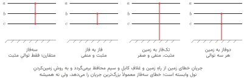
| علت | جای رایج در نیروگاهِ هیبریدی | نوعِ معمولِ خطا |
|---|---|---|
| آسیبِ عایقِ کابل (ساخت، کندنِ زمین، پیری) | کابلهای جمعآوری 33 kV | تکفاز به زمین، سپس چندفاز |
| سرکابل و مفصلِ بد نصبشده | سرکابلهای RMU و توربین | تکفاز به زمین |
| صاعقه و اضافهولتاژ | خطِ 132 kV، توربینها | تکفاز یا دوفاز، گذرا |
| رطوبت و آلودگی | تابلوهای بیرونی، مقرهها | تکفاز به زمین |
| خطای داخلیِ ترانسفورماتور | ترانسفورماتورهای واحد و اصلی | میاندور، سپس به زمین |
| اشتباهِ کلیدزنی | زمینکردنِ بخشِ برقدار | سهفاز به زمین |
یک تفاوتِ مهم در نیروگاهِ هیبریدی. ژنراتورِ همزمانِ سنتی در خطا چند برابرِ جریانِ نامیاش میدهد. توربینِ بادیِ مبدلدار، اینورترِ خورشیدی و مبدلِ باتری جریانِ خطای محدود میدهند: حدودِ 1.1 تا 1.2 برابرِ جریانِ نامی، با شکلی که کنترلِ مبدل تعیین میکند (فصل 9). پس در نیروگاهِ P بیشترِ جریانِ خطا از شبکه میآید و رفتارِ حفاظت وقتی شبکه نیست کاملاً عوض میشود (بخش 26.3.4).
مثال 26.1 (کدام خطا بزرگتر است؟) پرسش. در شینهٔ 33 kV با \(Z_1 = Z_2 = 2.98\,\Omega\) و ترانسفورماتورِ زمین با \(Z_0 = 2.0\,\Omega\)، جریانِ خطای سهفاز، فاز به فاز و تکفاز به زمین (اگر نول مستقیم زمین شده بود) چیست؟
پاسخ. سهفاز 6.39 kA، فاز به فاز 5.53 kA و تکفاز به زمین 7.17 kA (خروجیِ پایین).
تفسیر. فاز به فاز همیشه \(\sqrt{3}/2 = 0.866\) سهفاز است (وقتی \(Z_1 = Z_2\)). خطای زمین وقتی \(Z_0 < Z_1\) از سهفاز بزرگتر میشود؛ برای همین در بسیاری از شبکهها نول را با امپدانس زمین میکنند تا این جریان را محدود کنند. وارسی: \(3 \times 19{,}053/(2.98+2.98+2.0) = 7{,}180\,\text{A}\).
26.2.2 مؤلفههای متقارن
ایده. هر سه فازورِ نامتعادل را میتوان جمعِ سه دستهٔ متقارن نوشت: توالیِ مثبت (سه فازورِ هماندازه با ترتیبِ عادیِ \(a\)، \(b\)، \(c\))، توالیِ منفی (هماندازه با ترتیبِ وارون) و توالیِ صفر (سه فازورِ برابر و همفاز). با عملگرِ \(a = 1\angle 120^\circ\):
\[ \begin{aligned} I_0 &= \tfrac{1}{3}\,(I_a + I_b + I_c)\\ I_1 &= \tfrac{1}{3}\,(I_a + a I_b + a^2 I_c)\\ I_2 &= \tfrac{1}{3}\,(I_a + a^2 I_b + a I_c) \end{aligned} \tag{26.1}\]
ارزشِ این تبدیل در این است که شبکهٔ متقارن در هر توالی مستقل رفتار میکند: هر تجهیز سه امپدانس دارد (\(Z_1\)، \(Z_2\)، \(Z_0\)) و هر نوعِ خطا یک اتصالِ مشخص میانِ سه شبکهٔ توالی است. برای خطای تکفاز به زمین سه شبکه سری میشوند (شکل 26.2):
\[ I_1 = I_2 = I_0 = \frac{E}{Z_1 + Z_2 + Z_0 + 3Z_\text{f}}, \qquad I_a = 3 I_0 \tag{26.2}\]
و برای سهفاز و فاز به فاز:
\[ I_{3\varphi} = \frac{E}{|Z_1|}, \qquad I_\text{LL} = \frac{\sqrt{3}\,E}{|Z_1 + Z_2|} \tag{26.3}\]
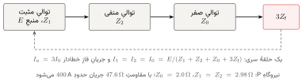
def sequence(ia: complex, ib: complex, ic: complex) -> tuple:
"""Zero, positive and negative sequence components of three phasors."""
i0 = (ia + ib + ic) / 3
i1 = (ia + A * ib + A * A * ic) / 3
i2 = (ia + A * A * ib + A * ic) / 3
return i0, i1, i2def fault_currents(e_ph: float, z1: complex, z2: complex, z0: complex,
zf: complex = 0j) -> dict:
"""Fault currents (A) at a bus with phase voltage e_ph (V) and
sequence impedances (ohm): three-phase, line-to-line, single
line-to-earth (through zf)."""
i3 = e_ph / abs(z1)
ill = math.sqrt(3) * e_ph / abs(z1 + z2)
ise = 3 * e_ph / abs(z1 + z2 + z0 + 3 * zf)
return {"3ph": i3, "LL": ill, "SLG": ise}fault currents at a 33 kV bus section (coupler open, teaching):
Z1 = Z2 = 2.98 ohm; earthing transformer Z0 2.0 ohm
three-phase 6.39 kA
line to line 5.53 kA
line to earth, solidly earthed: 7.17 kA
line to earth through 47.6 ohm: 400 A
the resistor turns a 7.2 kA earth fault into about 400 A: the
cable screens, the earth grid and the touch voltages see
400 A, and the earth-fault relays must be sensitive enough
to see it (below)\(Z_0\) از کجا میآید؟ جریانِ توالیِ صفر فقط جایی جاری میشود که مسیرِ برگشت از زمین یا نول باشد. سیمپیچِ مثلث جریانِ توالیِ صفر را از یک سو به سوی دیگر نمیگذراند (در خودِ مثلث میچرخد)؛ نولِ ستارهٔ زمیننشده هم مسیر نمیدهد. ترانسفورماتورِ اصلیِ YNd11 (فصل 25) در سمتِ 33 kV مثلث است؛ پس سمتِ 33 kV بینول است و منبعِ زمینش یک ترانسفورماتورِ زمین (زیگزاگ) با مقاومتِ نول است.
مثال 26.2 (یک جریانِ تکفاز در سه توالی) پرسش. اگر فقط فازِ \(a\) جریانِ 1,000 A داشته باشد و \(b\) و \(c\) صفر، مؤلفههای توالی چیست؟ برای دستهٔ 800 A با زاویههای \(0\)، \(-110\) و \(120\) درجه چه؟
پاسخ. در حالتِ اول هر سه مؤلفه 333 A؛ در حالتِ دوم \(|I_1| = 797\)، \(|I_0| = |I_2| = 46\,\text{A}\) (سطرهای P25 و P26 در بخش 26.16).
تفسیر. جریانِ تکفاز سهسهمِ برابر است؛ این همان چیزی است که معادلهٔ 26.2 میگوید. دستهٔ دوم تقریباً متقارن است (فقط ۱۰ درجه جابهجا) و مؤلفهٔ منفیِ کوچکی دارد؛ رلهٔ توالیِ منفی همین را برای یافتنِ نامتعادلی و قطعِ فاز میسنجد. وارسی: \(I_0 = (1{,}000+0+0)/3 = 333\).
26.2.3 زمینکردنِ نول و جریانِ خطای زمین
ایده. روشِ زمینکردنِ نول جریانِ خطای زمین و اضافهولتاژِ فازهای سالم را با هم تعیین میکند. چهار گزینهٔ اصلی:
| روش | جریانِ خطای زمین | ولتاژِ فازهای سالم | پیامد |
|---|---|---|---|
| مستقیم (صلب) | بزرگ (چند کیلوآمپر) | کمافزایش | آسیب و افزایشِ پتانسیلِ زمین بزرگ |
| مقاومت | محدود (مثلاً 400 A) | تا حدودِ \(\sqrt{3}\) تا رفعِ خطا | آسیبِ کم، حفاظتِ حساس لازم |
| راکتانس یا پیچکِ خاموشکن | کم یا جبرانشده | تا \(\sqrt{3}\) | ادامهٔ کار با خطا، یافتنِ خطا سختتر |
| زمیننشده | فقط جریانِ خازنی | تا \(\sqrt{3}\) و ضربههای تکراری | اضافهولتاژِ قوسیِ خطرناک |
نیروگاهِ P در هر بخشِ شینهٔ 33 kV یک ترانسفورماتورِ زمین با مقاومتِ \(47.6\,\Omega\) دارد (فصلِ ۲۳). جریانِ خطای زمین تقریباً \(E/R = 19{,}053/47.6 = 400\,\text{A}\) است و امپدانسهای توالی در برابرِ آن کوچکاند (خروجیِ بالا: 400 A).
جریانِ خازنی. هر فازِ کابل نسبت به غلافِ زمینشده یک خازن است. در خطای تکفاز به زمین، دو فازِ سالم با ولتاژِ خط شارژ میشوند و جریانِ خازنی از مسیرِ خطا برمیگردد:
\[ I_\text{c} = 3\,\omega\,C\,E \tag{26.4}\]
با \(C\) ظرفیتِ هر فاز نسبت به زمین (همهٔ کابلهای گالوانیکِ آن بخش).
capacitive earth-fault current (charging of the healthy phases):
=WS1 cable 1.02 uF per phase -> 3 w C E = 18.4 A
whole section A (about 2.7 uF) -> 48 A
a healthy feeder sends its own capacitive current through its
core-balance CT for a fault elsewhere: the feeder pickup
(40 A) is above 2 x 18.4 A, so it does not trip in sympathy
the 400 A resistor current is 8 x the section's capacitive
current: it damps the arcing re-strikes that drive
overvoltages in an unearthed system
without its earthing transformer a section is unearthed:
an earth fault gives only ~48 A and the healthy phases rise
to 1.73 pu - so no section runs without its earthing source
(an interlock or an operating rule, decided with ch 23)مثال 26.3 (چرا مقاومت، و چرا هرگز بیترانسفورماتورِ زمین؟) پرسش. جریانِ خازنیِ فیدرِ =WS1 و کلِ بخشِ A را حساب کنید. تنظیمِ 40 A خطای زمینِ فیدر با آن چه نسبتی دارد؟ اگر ترانسفورماتورِ زمینِ بخش خارج باشد چه میشود؟
پاسخ. فیدر \(1.02\,\mu\text{F}\) و 18.4 A؛ بخش حدودِ \(2.7\,\mu\text{F}\) و 46 A. تنظیمِ 40 A بیش از دو برابرِ جریانِ خازنیِ خودِ فیدر است. بیترانسفورماتورِ زمین، خطا فقط حدودِ 46 A میدهد و فازهای سالم به \(\sqrt{3} = 1.73\) پریونیت میرسند.
تفسیر. فیدرِ سالم هم در خطای فیدرِ دیگر جریانِ خازنیِ خودش را از ترانسفورماتورِ جریانِ حلقویاش میگذراند؛ اگر تنظیم نزدیکِ آن باشد، فیدرِ سالم «همدردی» قطع میکند. مقاومتی که جریانش چند برابرِ جریانِ خازنی است ضربههای تکراریِ قوس را میرا میکند. بخشِ بیمنبعِ زمین شبکهای زمیننشده است: خطای زمین دیده نمیشود، کابلها زیرِ ولتاژِ خط میمانند و برقگیرها باید برای آن انتخاب شوند (بخش 26.4.4). پس یک قفلِ داخلی یا قاعدهٔ بهرهبرداری لازم است. وارسی: \(3 \times 314.16 \times 1.023 \times 10^{-6} \times 19{,}053 = 18.4\).
در شبکهٔ مقاومتزمین یا زمیننشده، هنگامِ خطای زمین فازهای «سالم» تا ولتاژِ خط بالا میروند. عایقِ کابلها و برقگیرها برای این طراحی میشوند؛ هیچ کاری روی فازی که «سالم» به نظر میرسد بیجداسازی و زمینکردنِ مطابقِ قاعدههای ایمنیِ مالک انجام نمیشود.
- چرا جریانِ خطا را امپدانسِ مسیر تعیین میکند و نه بار؟
- کدام نوعِ خطا فقط توالیِ مثبت دارد؟ کدام هر سه را؟
- چرا مبدلها جریانِ خطای کمی میدهند و این برای حفاظت چه معنایی دارد؟
- با معادلهٔ 26.1 مؤلفههای دستهٔ \(I_a = 100\)، \(I_b = 0\)، \(I_c = -100\) (زاویه صفر) را حساب کنید.
- چرا سیمپیچِ مثلث مسیرِ توالیِ صفر را میبندد؟
- جریانِ خطای زمین با \(Z_0 = 4\,\Omega\) و مقاومتِ \(63.5\,\Omega\) در 33 kV چیست؟
- جریانِ خازنیِ \(5\,\mu\text{F}\) در هر فاز در 33 kV را حساب کنید.
- چرا بخشی که منبعِ زمین ندارد نباید کار کند؟
- چرا خطای زمین میتواند از سهفاز بزرگتر باشد؟
- دو علتِ رایجِ خطا در کابلهای جمعآوری را نام ببرید.
26.2.4 ترانسفورماتورهای جریان و ولتاژ: چشمِ حفاظت
ایده. رله جریانِ 12 kA یا ولتاژِ 33 kV را مستقیم نمیبیند. ترانسفورماتورِ جریان (به انگلیسی current transformer, CT) جریانِ اولیه را به جریانِ کوچکِ ثانویه (1 A یا 5 A در جریانِ نامی) و ترانسفورماتورِ ولتاژ (VT) ولتاژ را به حدودِ 110 V میبرد. خطای حفاظت معمولاً از همینجا شروع میشود: CTای که در خطا اشباع شود جریانِ بریده و کج به رله میدهد و رله دیر یا اصلاً عمل نمیکند.
اشباع و نقطهٔ زانو. CT برای راندنِ جریانِ ثانویه از بارِ مدار (مقاومتِ سیمپیچِ ثانویه \(R_\text{ct}\) و بارِ بیرونی \(R_\text{b}\): سیمها و رله) ولتاژ میسازد. اگر این ولتاژ از ولتاژِ نقطهٔ زانو (\(V_\text{k}\)) بگذرد، هسته اشباع میشود. یک وارسیِ آموزشی:
\[ V_\text{k} \ge k\, I_\text{f,sec}\,(R_\text{ct} + R_\text{b}) \tag{26.5}\]
که \(k\) ضریبی است که سازندهٔ رله برای کارکردش میخواهد (اینجا ۲، آموزشی). نقطهٔ زانو را آزمونِ منحنیِ مغناطیسکنندگی ثابت میکند (بخش 26.7).
current-transformer knee points (teaching check, k = 2):
CT fault A secondary A R_ct+R_b need V knee V ok
feeder 600/1 12,500 20.8 4.5 188 200 yes
feeder 600/1 12,500 20.8 4.5 188 100 no
incomer 1600/1 12,500 7.8 6.5 102 200 yes
a CT that saturates in a fault gives the relay a distorted
current: the knee point is specified from the fault level
and the burden, and proved by the CT's test (ch 43)مثال 26.4 (نقطهٔ زانوی CTِ فیدر) پرسش. CTِ فیدر 600/1 در خطای 12.5 kA با \(R_\text{ct} + R_\text{b} = 4.5\,\Omega\) چه نقطهٔ زانویی میخواهد؟ هستهٔ 100 V کافی است؟ CTِ ورودیِ 1600/1 چه؟
پاسخ. جریانِ ثانویه 20.8 A و نیاز \(2 \times 20.8 \times 4.5 = 188\,\text{V}\)؛ هستهٔ 200 V کافی است و 100 V نه. ورودی با نسبتِ بزرگتر فقط 102 V میخواهد.
تفسیر. نسبتِ کوچکتر جریانِ ثانویهٔ خطا را بزرگ میکند؛ CTِ فیدر از ورودی سختتر است. نقطهٔ زانو در مشخصهٔ CT نوشته و با گزارشِ آزمون پذیرفته میشود. وارسی: \(12{,}500/600 = 20.8\).
بارِ سیمها: 1 A یا 5 A؟ توانِ تلفشده در سیمهای ثانویه با مجذورِ جریان بالا میرود. در پستی که CT تا تابلو صدها متر فاصله دارد، این تفاوت تعیینکننده است:
CT burden of the secondary leads (200 m route, 4 mm2 Cu):
loop resistance 1.84 ohm
secondary lead VA relay VA total VA
1 A 1.8 0.5 2.3
5 A 46.0 0.5 46.5
the 5 A secondary puts 25 times the burden on the CT: on long
substation routes 1 A secondaries keep the CT out of
saturation (the knee point of lesson A) - a choice made in the CT
specification, proved by the CT's test (ch 43)افستِ DC. جریانِ خطا در لحظهٔ شروع یک مؤلفهٔ DC دارد که با ثابتِ زمانیِ \(L/R\) میرا میشود. پیکِ نخستین \(i_\text{p} = \kappa\sqrt{2}\,I_\text{k}\) است (فصلِ ۲۴) و CTای که بخواهد این را بیاشباع بگذراند باید تا \(1 + X/R\) برابر بزرگتر باشد:
DC offset of the fault current and CT saturation:
X/R peak factor kappa peak at 12.5 kA CT size factor 1+X/R
5 1.56 27.5 kA 6
10 1.75 30.9 kA 11
20 1.86 32.9 kA 21
40 1.93 34.1 kA 41
the peak tests the gear's making rating (63 kA, ch 24); a CT
that never saturates with full offset would be 1+X/R times
larger - so relays are designed to cope with some
saturation, and the knee point is set from the relay
maker's requirement (the k of lesson A)مثال 26.5 (CTِ بیاشباع ناممکن است) پرسش. با \(X/R = 20\) در شینهٔ 33 kV، پیکِ 12.5 kA و ضریبِ بزرگیِ CT چیست؟
پاسخ. \(\kappa = 1.86\)، پیکِ 32.9 kA (زیرِ 63 kA قدرتِ وصلِ تابلو) و ضریبِ ۲۱.
تفسیر. CTِ ۲۱ برابر بزرگ گران و جاگیر است؛ پس رلههای امروزی طوری طراحی میشوند که با اشباعِ کوتاه کنار بیایند (مثلاً تصمیم در نیمسیکلِ نخست، یا پایداری در دیفرانسیل). معیارِ \(k\) در معادلهٔ 26.5 همین را از زبانِ سازندهٔ رله میگوید. وارسی: \(1.02 + 0.98\,e^{-3/20} = 1.864\).
ترانسفورماتورِ ولتاژ و ولتاژِ باقیمانده. VTِ شینه سه ولتاژِ فاز را برای حفاظتِ ولتاژ، فرکانس، جهت و دیستانس میدهد. سیمپیچی که به شکلِ مثلثِ باز بسته شود مجموعِ سه ولتاژ (\(3V_0\)) را میدهد؛ در خطای زمین در شبکهٔ مقاومتزمین این ولتاژ بزرگ میشود و کارکردِ جابهجاییِ ولتاژِ نول (59N) آن را میبیند. قطبیت CT و VT (کدام سر «ورودی» است) برای کارکردهای جهتدار و دیفرانسیل حیاتی است و با آزمونِ قطبیت ثابت میشود.
ثانویهٔ CTِ برقدار هرگز نباید باز بماند: هسته اشباع و ولتاژی خطرناک ساخته میشود. به همین دلیل پایانههای CT لینکِ اتصالِ کوتاه دارند و بازماندنِ آن در آزمونِ کارخانه یک ایرادِ ردهٔ A است (مثال 26.83). کار روی این مدارها با کارکنانِ صلاحیتدار و مجوز است.
26.2.5 کارکردهای حفاظتی
ایده. رلهٔ دیجیتالِ امروزی دهها کارکرد دارد که هر کدام یک پرسش را پاسخ میدهد. شمارهٔ دستگاههای ANSI زبانِ مشترکِ نقشههاست:
| شماره | کارکرد | پرسش | کاربرد در نیروگاهِ P |
|---|---|---|---|
| 50/51 | جریانِ زیادِ آنی و زماندار | آیا جریان از حد گذشته؟ | فیدرها، ورودیها، ترانسفورماتورهای واحد |
| 50N/51N | خطای زمین | آیا جریانِ باقیمانده هست؟ | فیدرها، پشتیبانِ مقاومتِ نول |
| 67/67N | جهتدار | جریان به کدام سو میرود؟ | ورودیهای موازی |
| 87T/87L/87B | دیفرانسیل | آیا ورودی و خروجیِ ناحیه برابرند؟ | ترانسفورماتور، خط، شینه |
| 21 | دیستانس | امپدانسِ دیدهشده تا خطا چقدر است؟ | خطِ 132 kV |
| 27/59 | کمولتاژی و اضافهولتاژ | ولتاژ بیرونِ بازه است؟ | نقطهٔ اتصال، مبدلها |
| 81 و ROCOF | فرکانس و آهنگِ تغییرِ آن | شبکه سالم است؟ | نقطهٔ اتصال |
| 59N | جابهجاییِ ولتاژِ نول | خطای زمین در شبکهٔ بینول؟ | شینهٔ 33 kV |
| 50BF | خرابیِ کلید | کلید پس از فرمان باز شد؟ | همهٔ کلیدهای 33 و 132 kV |
| 86 | رلهٔ قفل | تا بازبینی بسته نشود | ترانسفورماتورِ اصلی |
جریانِ زیادِ زماندارِ معکوس. زمانِ عملکرد با بزرگیِ جریان کم میشود. شکلِ استانداردشده:
\[ t = \text{TMS}\,\frac{k}{(I/I_\text{s})^{\alpha} - 1} \tag{26.6}\]
با \(I_\text{s}\) جریانِ راهاندازی (pickup)، TMS ضریبِ زمانی، و ثابتهای \(k\) و \(\alpha\) برای منحنیهای «معکوسِ استاندارد» (\(0.14\)، \(0.02\))، «خیلی معکوس» (\(13.5\)، \(1\)) و «بینهایت معکوس» (\(80\)، \(2\)).
CURVES = { # inverse-time curve constants (k, alpha), standard forms
"standard inverse": (0.14, 0.02),
"very inverse": (13.5, 1.0),
"extremely inverse": (80.0, 2.0),
}
def trip_time(i: float, pickup: float, tms: float,
curve: str = "standard inverse") -> float:
"""Operating time (s) of an inverse-time overcurrent element:
t = TMS k / ((I/Is)^alpha - 1); inf below pickup."""
k, a = CURVES[curve]
m = i / pickup
return math.inf if m <= 1 else tms * k / (m ** a - 1)
def grading_ok(t_down: float, t_up: float, margin: float = 0.3) -> bool:
"""Upstream relay slower than downstream by at least the margin."""
return t_up - t_down >= marginمثال 26.6 (سه منحنی در ده برابرِ راهاندازی) پرسش. با \(\text{TMS} = 0.2\) و جریانِ ده برابرِ راهاندازی، زمانِ سه منحنی چیست؟
پاسخ. معکوسِ استاندارد 0.59 s، خیلی معکوس 0.30 s، بینهایت معکوس 0.162 s (سطرهای P05 تا P07).
تفسیر. منحنیِ تندتر در جریانِ زیاد سریعتر و در جریانِ کم کندتر است؛ وقتی جریانِ خطا با فاصله زیاد عوض میشود (خطِ بلند) منحنیِ تند گزینشپذیری را آسان میکند، و برای هماهنگی با فیوز منحنیِ بینهایت معکوس شبیهِ فیوز است. وارسی: \(0.2 \times 0.14/(10^{0.02}-1) = 0.594\).
دیفرانسیل. قانونِ کیرشهف میگوید جمعِ جریانهای ورودی به یک ناحیهٔ سالم صفر است. رلهٔ دیفرانسیل جمعِ جریانهای CTهای دو سرِ ناحیه را میسنجد و اگر از حد گذشت، خطا درونِ ناحیه است. چون CTها کامل نیستند، آستانه با جریانِ عبوری مهار (bias) میشود:
\[ |I_1 + I_2| > I_\text{d0} + s\,\frac{|I_1| + |I_2|}{2} \tag{26.7}\]
transformer differential with bias (pickup 0.2 pu, slope 30 %):
through fault, CTs matched I1 8.3 I2 -8.3 -> restrain
through fault, 5 % CT mismatch I1 8.3 I2 -7.9 -> restrain
internal fault fed from HV only I1 8.3 I2 0.0 -> trip
internal fault, light load I1 1.0 I2 -0.2 -> trip
inrush on energising is all on one side and would look like
an internal fault: its 2nd harmonic blocks the element
(threshold set with the maker); the 30-degree shift of YNd11
is compensated in the relay (ch 25)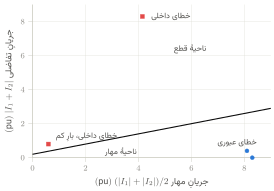
مثال 26.7 (دیفرانسیلِ ترانسفورماتور در چهار حالت) پرسش. با آستانهٔ 0.2 پریونیت و شیبِ 30 %، کدام حالت قطع میکند: خطای عبوری با CTهای جور، با ناجوریِ 5 %، خطای داخلی از یک سو، و خطای داخلی در بارِ کم (\(I_1 = 1.0\)، \(I_2 = -0.2\))؟
پاسخ. دو حالتِ عبوری مهار، دو حالتِ داخلی قطع (شکل 26.3).
تفسیر. ناجوریِ 5 % در 8.3 پریونیت تفاضلِ 0.4 میدهد که بدونِ مهار از آستانهٔ 0.2 میگذشت؛ شیب همین را میگیرد. جریانِ هجومی هنگامِ برقدار کردن (فصل 25) فقط از یک سو میآید و شبیهِ خطای داخلی است؛ هارمونیکِ دومِ آن کارکرد را قفل میکند. جابهجاییِ ۳۰ درجهایِ YNd11 و حذفِ توالیِ صفر در خودِ رله جبران میشود. وارسی: \(|8.3 - 7.9| = 0.4 < 0.2 + 0.3 \times 8.1 = 2.63\).
دیستانس. رلهٔ دیستانس نسبتِ ولتاژ به جریان را میسنجد؛ در خطا این امپدانس تقریباً با فاصله تا خطا متناسب است. خطاهای درونِ یک ناحیه (دایرهای در صفحهٔ \(R\)-\(X\)) قطع میشوند؛ جزئیاتِ آن در بخش 26.6.2 میآید.
26.2.6 اصولِ خوب: گزینشپذیری، حساسیت، سرعت، پشتیبان
ایده. هر طرحِ حفاظت با پنج ویژگی سنجیده میشود:
- گزینشپذیری (selectivity): فقط کلیدهای نزدیک به خطا باز شوند.
- حساسیت: کوچکترین خطا هم دیده شود (خطای زمین با مقاومتِ قوس، انتهای فیدر، شبکهٔ ضعیف).
- سرعت: آسیب، ناپایداری و انرژیِ قوس با زمان بالا میروند (بخش 26.5.2).
- قابلیتِ اطمینان با دو روی: اتکاپذیری (dependability: در خطا عمل کند) و امنیت (security: بیخطا عمل نکند).
- پشتیبان: اگر حفاظتِ اصلی یا کلیدش نشد، کسی دیگر خطا را رفع کند، کندتر و با بخشِ بزرگتر.
اینها با هم در کشمکشاند: سرعتِ بیشتر گزینشپذیری را سخت میکند، حساسیتِ بیشتر امنیت را کم میکند. هنرِ طراحِ حفاظت پیدا کردنِ تعادلِ پذیرفتنی و نوشتنِ آن است.
dependability: probability a fault is not cleared (teaching):
main fails 1%, backup fails 2%, independent: 2.0e-04
with a common cause (beta 0.05): 6.9e-04 (3 x worse)
with a common cause (beta 0.10): 1.2e-03 (6 x worse)
with a common cause (beta 0.20): 2.2e-03 (11 x worse)
shared DC supply, shared CT core, one trip coil: each makes
main and backup fail together; separate DC circuits, CT
cores and trip coils keep them independent
security is the other side: two relays in parallel trip
more often by mistake - main and backup are graded, and a
scheme that must not trip falsely may need two to agreeمثال 26.8 (پشتیبانِ مستقل یا پشتیبانِ همسرنوشت؟) پرسش. اگر حفاظتِ اصلی در 1 % و پشتیبان در 2 % خطاها نشود، احتمالِ رفعنشدن چیست؟ با علتِ مشترکِ \(\beta = 0.1\) چه؟
پاسخ. مستقل \(2 \times 10^{-4}\)؛ با \(\beta = 0.1\) حدودِ \(1.2 \times 10^{-3}\)، شش برابر بدتر.
تفسیر. یک تغذیهٔ DC، یک هستهٔ CT یا یک بوبینِ قطعِ مشترک، اصلی و پشتیبان را با هم از کار میاندازد؛ مدلِ سادهی «بتا» نشان میدهد علتِ مشترکِ کوچک چقدر سود را میخورد. پس مدارهای DC، هستههای CT و بوبینهای قطعِ اصلی و پشتیبان جدایند (بخش 26.3.6، بخش 26.6.5). وارسی: \(0.9 \times 2 \times 10^{-4} + 0.1 \times 0.01 = 1.18 \times 10^{-3}\).
- چرا CTِ اشباعشده خطرناک است؟
- با معادلهٔ 26.5 نقطهٔ زانوی لازم برای 20 A ثانویه و 5 Ω را حساب کنید.
- چرا ثانویهٔ 1 A در پستِ بزرگ رایج است؟
- زمانِ منحنیِ معکوسِ استاندارد را در پنج برابرِ راهاندازی و \(\text{TMS} = 0.1\) حساب کنید.
- دیفرانسیل با \(I_1 = 5\) و \(I_2 = -4.5\) قطع میکند؟
- چرا جریانِ هجومی دیفرانسیل را فریب میدهد و چه چیزی جلویش را میگیرد؟
- فرقِ اتکاپذیری و امنیت را با یک مثال بگویید.
- مثلثِ باز چه ولتاژی میدهد و به چه کاری میآید؟
- سه علتِ مشترک میانِ حفاظتِ اصلی و پشتیبان را نام ببرید.
- شمارهٔ ANSI کارکردهای خرابیِ کلید و دیستانس چیست؟
26.2.7 حفاظتِ ترانسفورماتور: شیبِ مهار و خطای زمینِ محدود
جریانِ نشتیِ دیفرانسیل. دیفرانسیلِ ترانسفورماتور (مثال 26.7) جریانِ ورودی و خروجی را مقایسه میکند؛ ولی حتی در خطای بیرونی هم این دو کاملاً برابر نیستند. تپچنجر نسبت را تا ±10 % عوض میکند و نسبتِ CTها فقط در تپِ اصلی با هم میخوانند؛ عدمِ تطبیقِ ثابتی هم میماند. اختلاف، جریانِ نشتی (spill)، با جریانِ عبوری بزرگ میشود:
\[ I_\text{spill} \approx I_\text{through}\,\left(|t| + \varepsilon_\text{CT}\right) \tag{26.8}\]
def spill(through_pu: float, tap: float, ct_mismatch: float) -> float:
"""Differential (spill) current, per unit of rated, when a through
current flows and the CT ratios match only at the principal tap:
the tap error and a fixed CT mismatch both leave a residue."""
return through_pu * (abs(tap) + ct_mismatch)main transformer differential: spill current for a through fault
(tap changer at -10 %, CT mismatch 3 %; pickup 0.2 pu, slope 30 %)
through pu spill pu restraint threshold pu trips?
1.0 0.13 0.50 no
2.0 0.26 0.80 no
4.0 0.52 1.40 no
8.3 1.08 2.69 no
with a flat 0.2 pu threshold (no bias) it would trip from 2 pu: the spill
grows with the through current, so the threshold must grow
too - that is the bias slope; CT saturation in a heavy
external fault adds more spill (a second, steeper slope),
and the inrush is blocked by its second harmonic (ch 25)مثال 26.9 (چرا آستانه باید با جریان بالا برود) پرسش. با تپِ −10 % و عدمِ تطبیقِ 3 %، جریانِ نشتی در 1 تا 8.3 پریونیتِ عبوری چیست و آستانهٔ ثابتِ 0.2 یا شیبِ 30 % کدام پایدار میماند؟
پاسخ. 0.13 تا 1.08 پریونیت. آستانهٔ ثابت از 2 پریونیت قطعِ نادرست میدهد؛ با شیب، آستانه از 0.50 تا 2.69 بالا میرود و پایدار میماند.
تفسیر. این دلیلِ وجودیِ مهار است: آستانه با جریانِ عبوری بالا میرود. اشباعِ CT در خطای بیرونیِ سنگین نشتیِ بیشتری میسازد (شیبِ دوم و تندتر) و جریانِ هجومی با هارمونیکِ دوم مسدود میشود (فصلِ ۲۵). آزمونِ پایداری (بخش 26.6.4) همین را در محل ثابت میکند. وارسی: \(8.3 \times 0.13 = 1.08\).
خطای زمینِ محدود. در سیمپیچِ ستارهای که با مقاومت زمین شده، خطای زمین در فاصلهٔ \(x\) از نول با ولتاژِ \(x\,E\) رانده میشود: جریانِ آن \(x\,I_\text{max}\) است. ولی سمتِ خط این جریان را از نسبتِ دورِ \(x\) میبیند: دیفرانسیل فقط \(x^2\) را حس میکند. حفاظتِ خطای زمینِ محدود (restricted earth fault, REF) جریانِ نول را مستقیم با مجموعِ جریانِ فازها مقایسه میکند و \(x\) را میبیند:
\[ I_\text{N} = x\,I_\text{max}, \qquad I_\text{line} \propto x^2\,I_\text{max} \tag{26.9}\]
restricted earth fault (REF) against differential, resistance-earthed
star winding: fault at a fraction x of the winding from the neutral
x fault A seen on the line side, % of rated REF 5 % diff 20 %
0.1 40 0.36 - -
0.2 80 1.45 sees -
0.3 120 3.27 sees -
0.4 160 5.81 sees -
0.5 200 9.07 sees -
0.6 240 13.07 sees -
0.7 280 17.79 sees -
0.8 320 23.23 sees sees
0.9 360 29.40 sees sees
1.0 400 36.30 sees sees
the resistor limits the fault current to x times 400 A; the
line side sees it reduced again by the turns ratio x: the
differential sees only x squared and misses most winding
faults; REF measures the neutral current itself (x, not
x squared) and covers far more of the winding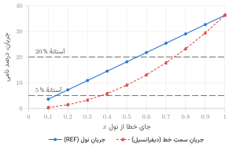
مثال 26.10 (هشتاد درصد در برابرِ بیست درصد) پرسش. با مقاومتی که خطا را به 400 A محدود میکند و جریانِ نامیِ 1,102 A، REF با آستانهٔ 5 % و دیفرانسیل با 20 % چه بخشی از سیمپیچ را میپوشانند؟
پاسخ. REF از \(x = 0.2\) (حدودِ هشتاد درصدِ سیمپیچ)؛ دیفرانسیل فقط از \(x = 0.8\) (بیست درصد نزدیکِ ترمینال).
تفسیر. در شبکهای که با مقاومت زمین شده، دیفرانسیل بیشترِ خطاهای زمینِ سیمپیچ را نمیبیند؛ REF با CTِ نول این شکاف را پر میکند. خطای نزدیکِ نول با هیچ کدام دیده نمیشود، ولی جریانش هم کوچک است و رلهٔ گاز (فصلِ ۲۵) گازِ آن را میبیند. عددها آموزشیاند. وارسی: \(0.8 \times 320/1{,}102 = 23\,\%\).
- جریانِ نشتی در 5 پریونیت با تپِ +5 % و عدمِ تطبیقِ 2 %؟
- چرا شیبِ دوم تندتر است؟
- REF با آستانهٔ 10 % از کجای سیمپیچ را میبیند؟
- چرا خطای نزدیکِ نول برای رلهٔ گاز میماند؟
26.2.8 کارکردهای بیشتر: فهرستِ تکمیلی
ایده. جدول 26.3 کارکردهای اصلی را آورد. درسهای بعدی این فصل کارکردهای دیگری را هم به کار میبرند؛ این فهرست آنها را با جای درسشان کنارِ هم میگذارد تا نقشهها و فایلهای تنظیم خوانا شوند:
| شماره | کارکرد | پرسش | درس |
|---|---|---|---|
| 25 | همزمانی | دو سو همفازند تا بستن مجاز شود؟ | مثال 26.24 |
| 49 | تصویرِ گرمایی | رسانا چقدر گرم است؟ | مثال 26.71 |
| 64REF یا 87N | خطای زمینِ محدود | خطای زمین درونِ سیمپیچ است؟ | مثال 26.10 |
| 79 | بازبستِ خودکار | خطا گذرا بود؟ | مثال 26.23 |
| 74 | نظارتِ مدارِ قطع | مسیرِ قطع سالم است؟ | بخش 26.3.6 |
| 60 | نظارتِ VT | ولتاژ واقعاً رفته یا فیوزِ VT سوخته؟ | بخش 26.6.6 |
| 87L | دیفرانسیلِ خط | دو سرِ خط یک جریان میبینند؟ | مثال 26.69 |
| 87B | دیفرانسیلِ شینه (امپدانسِ بالا) | جمعِ جریانهای شینه صفر است؟ | مثال 26.73 |
| 81O/81U | فرکانسِ زیاد و کم | فرکانس بیرونِ نوار است؟ | مثال 26.25 |
| 21FL | مکانیابِ خطا | خطا چند کیلومتر دور است؟ | مثال 26.75 |
یک قاعده برای همه: هر کارکرد در فایلِ تنظیم یک سطر دارد، در ثبتِ تنظیمها (مثال 26.86) یک مطالعهٔ منبع و یک آزمون، و در نقشه با همین شماره نام برده میشود. کارکردی که در رله فعال است ولی در هیچ سندی نیست، خطرِ پنهان است: آزمون نشده و تأیید نشده.
- کارکردِ 79 در خطِ 132 kV با کدام کارکردِ نیروگاه باید هماهنگ شود؟
- چرا کارکردِ فعالِ بیسند خطرناک است؟
26.2.9 مهارِ هارمونیکِ دوم: هجوم یا خطا؟
ایده. در برقدار کردنِ ترانسفورماتور، جریانِ هجومی فقط از یک سو وارد میشود (فصلِ ۲۵): برای دیفرانسیل درست شبیهِ خطای درونی است. تفاوت در شکلِ موج است: هسته فقط در بخشی از هر سیکل اشباع میشود و جریان یک پالسِ یکطرفه است، غنی از هارمونیکِ دوم؛ جریانِ خطا سینوسی است. رله نسبتِ هارمونیکِ دوم به اصلی را از نمونهها با تبدیلِ فوریه حساب میکند و بالای آستانه، قطع را نگه میدارد:
def inrush_cycle(alpha_deg: float) -> np.ndarray:
"""One cycle of a teaching inrush pulse: the core saturates for an
angle alpha around the flux peak, so the current is a one-sided
cap of a cosine (zero for the rest of the cycle)."""
wt = np.linspace(-math.pi, math.pi, N, endpoint=False)
c = math.cos(math.radians(alpha_deg) / 2)
return np.where(np.abs(wt) < math.radians(alpha_deg) / 2,
(np.cos(wt) - c) / (1 - c), 0.0)
def second_ratio(cycle: np.ndarray) -> float:
"""Second-harmonic magnitude as a fraction of the fundamental."""
spec = np.abs(np.fft.rfft(cycle))
return spec[2] / spec[1]second-harmonic restraint of the differential (teaching threshold 15 %)
waveform 2nd / fundamental blocks?
inrush, saturated 90 deg of the cycle 83% yes
inrush, saturated 120 deg of the cycle 70% yes
inrush, saturated 180 deg of the cycle 42% yes
inrush, saturated 240 deg of the cycle 17% yes
internal fault, DC offset 0.0 0% no
internal fault, DC offset 0.5 4% no
internal fault, DC offset 1.0 8% no
an inrush pulse is one-sided and short: rich in the 2nd
harmonic, so the relay holds back; a fault current is a
sine (with a DC offset that decays) and carries little 2nd
harmonic, so the relay trips; a deeply saturated core
(long pulses) has less 2nd harmonic - modern steels push
inrush that way, which is why makers add other criteria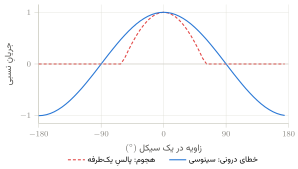
مثال 26.11 (هفتاد درصد در برابرِ هشت درصد) پرسش. نسبتِ هارمونیکِ دوم برای پالسِ هجومِ 120° و برای خطای درونی با آفستِ کاملِ DC چیست، و با آستانهٔ آموزشیِ 15 % کدام مسدود میشود؟
پاسخ. 70 % و 8 %: هجوم مسدود، خطا قطع.
تفسیر. اشباعِ عمیق (پالسِ پهنِ 240°) فقط 17 % هارمونیکِ دوم دارد و به آستانه نزدیک میشود؛ ورقهای امروزی هجوم را به این سو میبرند و سازندگان معیارهای دیگری (شکلِ موج، فاصلههای بیجریان) را میافزایند. آستانه تنظیمِ سازنده است. وارسی: پالسِ کوتاهتر هارمونیکِ دومِ بیشتری دارد: 83 % در 90°.
- چرا پالسِ یکطرفه هارمونیکِ دوم دارد و سینوسی نه؟
- اگر آستانه 20 % باشد، کدام پالسِ هجوم دیگر مسدود نمیشود؟
- آفستِ DC چرا هارمونیکِ دوم کمی میسازد؟
26.3 ب. گردشِ کارِ مهندسیِ حفاظت
26.3.1 دادهٔ شبکه و مطالعهٔ اتصالِ کوتاه
ایده. تنظیمِ رله از مطالعه میآید، و مطالعه از دادهٔ شبکه. گردشِ کار (شکل 26.12 در بخش 26.5) این است:
- دادهٔ شبکه: امپدانسهای توالیِ شبکهٔ بالادست در حالتِ بیشینه و کمینه (از بهرهبردار)، ترانسفورماتورها، کابلها، خط، سهمِ مبدلها (از سازندهها).
- حالتهای کلیدزنی: کوپلر باز و بسته، یک یا دو ترانسفورماتور، شبکه هست یا نیست.
- مطالعهٔ اتصالِ کوتاه: جریانِ هر نوعِ خطا در هر نقطه، و جریانی که هر رله میبیند.
- مطالعهٔ هماهنگی: راهاندازی، منحنی، ضریبِ زمانی، فاصلهٔ زمانی؛ منحنیها روی یک نمودار.
- تنظیمها در فایلِ رله با بازبینی، چکسام و تأیید (بخش 26.3.6).
- آزمون و شاهد (بخش 26.6.4).
بیشینه و کمینه، هر دو. جریانِ بیشینه تحملِ تجهیزات (فصلِ ۲۴) و فاصلههای زمانیِ گزینشپذیری را میسنجد؛ جریانِ کمینه حساسیت را. بیشینه معمولاً با شبکهٔ قوی، کوپلرِ بسته و همهٔ منبعها؛ کمینه با شبکهٔ ضعیف، یک ترانسفورماتور و خطای فاز به فاز در دورترین نقطه. مطالعهای که فقط یکی را بسنجد نیمی از پرسش را پاسخ داده است.
بار هم داده است. راهاندازیِ رله باید بالای بیشترین جریانِ عادی باشد. این جریان از تولیدِ بیشینه، ضریبِ توانِ مورد نیاز (فصلِ ۲۰) و ولتاژِ کمینه میآید:
largest load currents the relays must ride through:
feeder =WS1: 21.0 MVA -> 368 A at 1.0 pu, 387 A at 0.95 pu
incomer: 68.4 MVA -> 1197 A at 1.0 pu, 1260 A at 0.95 pu
finding: the incomer breaker of ch 23 (1,250 A, marked
provisional) is below 1,260 A; the protection work raises it
and its CT to 1,600 A (recorded in D-030; ch 24's panel +H01
follows) - settings work checks ratings, not only relaysمثال 26.12 (یافته: کلیدِ ورودی کوچک است) پرسش. بخشِ A حداکثر 65 MW با ضریبِ توانِ 0.95 تولید میکند. جریانِ ورودی در ولتاژِ 1.0 و 0.95 پریونیت چیست و با کلیدِ 1,250 A فصلِ ۲۳ چه نسبتی دارد؟
پاسخ. \(68.4\,\text{MVA}\)؛ 1,197 A و 1,260 A، بالاتر از 1,250 A.
تفسیر. فصلِ ۲۳ رتبهٔ کلیدِ ورودی را «موقت» علامت زده بود و فصلِ ۲۵ نشان داد ترانسفورماتور در ساعتهای اوج بالای رتبهاش کار میکند. کارِ تنظیمِ حفاظت این دو را کنارِ هم گذاشت: کلید و CTِ ورودی به 1,600 A میروند و پانلِ +H01 فصلِ ۲۴ دنبالش. این یافته در D-030 ثبت میشود. درسِ عمومی: مطالعهٔ حفاظت رتبهها را هم میسنجد، نه فقط رلهها را. وارسی: \(68.4 \times 10^6/(\sqrt{3} \times 33{,}000 \times 0.95) = 1{,}260\).
26.3.2 پنجرهٔ راهاندازی و ضریبِ زمانی
پنجرهٔ راهاندازی. راهاندازی باید بالای بار و پایینِ کوچکترین خطا باشد، هر دو با حاشیه:
\[ 1.2\,I_\text{load,max} \;\le\; I_\text{s} \;\le\; \frac{I_\text{f,min}}{1.5} \tag{26.10}\]
ضریبهای 1.2 و 1.5 آموزشیاند؛ حاشیهها خطای CT، بازگشتِ رله (reset) و عدمِ قطعیتِ داده را میپوشانند. اگر پنجره بسته شود (\(1.2 I_\text{load} > I_\text{f,min}/1.5\))، جریانِ زیاد کار نمیکند و کارکردِ دیگری لازم است (دیستانس، دیفرانسیل، کمولتاژیِ کنترلشده با جریان).
def pickup_window(i_load_max: float, i_fault_min: float,
k_load: float = 1.2, k_fault: float = 1.5) -> tuple:
"""Allowed pickup range: above k_load x the largest load current and
below the smallest fault current / k_fault; (low, high, feasible)."""
lo, hi = k_load * i_load_max, i_fault_min / k_fault
return lo, hi, lo < hipickup window: above 1.2 x load, below the smallest fault / 1.5
relay load A min fault A window A set A
feeder 387 4,677 465- 3118 480
incomer 1260 4,434 1512- 2956 1600
T1 HV side (33 kV amps / 4) 315 1,109 378- 739 400
smallest faults: line-to-line at the far end of =WS1 for the
feeder; line-to-line at the bus with a weak grid (0.8 x) for
the incomer; the windows are wide - overcurrent works here
because the grid feeds the faults (next: without the grid)مثال 26.13 (سه پنجره، سه تنظیم) پرسش. پنجرههای فیدر، ورودی و سمتِ فشارِ قویِ T1 را حساب و تنظیمهای 480، 1,600 و 400 A را بسنجید.
پاسخ. فیدر 465 تا 3,118 A؛ ورودی 1,512 تا 2,956 A؛ فشارِ قوی 378 تا 739 A. هر سه تنظیم درونِ پنجرهاند.
تفسیر. در نخستین پیشنویسِ این فصل ورودی 1,500 A و فشارِ قوی 375 A تنظیم شده بود؛ برنامه هر دو را بیرونِ پنجره نشان داد (ولتاژِ 0.95 را فراموش کرده بودیم) و تنظیمها بالا رفتند. پنجرهها پهناند چون شبکه خطاها را تغذیه میکند؛ بیشبکه این پنجره بسته میشود (بخش 26.3.4). کمینهٔ ورودی خطای فاز به فاز در شینه با شبکهٔ 0.8 برابر است: \(0.8 \times 6{,}400 \times 0.866 = 4{,}434\,\text{A}\). وارسی: \(1.2 \times 387 = 465\).
ضریبِ زمانی از فاصلهٔ لازم. گزینشپذیری یعنی رلهٔ بالادست برای هر خطایی که هر دو میبینند دستکم یک فاصلهٔ زمانی (grading margin) کندتر باشد. این فاصله زمانِ بازشدنِ کلید، خطای زمانیِ رلهها و «فراجهش» (overshoot) را میپوشاند؛ اینجا 0.3 s (آموزشی). روش:
- سریعترین رله (فیدر) را با کمترین ضریبِ عملی تنظیم کنید.
- برای هر حالتِ کلیدزنی، جریانی را که هر کدام از دو رله میبیند پیدا کنید.
- ضریبِ بالادستی را طوری بگیرید که در بدترین حالت فاصله \(\ge 0.3\,\text{s}\) باشد؛ به گامِ رله گرد کنید.
- همین را برای پلهٔ بعدی تکرار کنید.
def tms_for(t_target: float, i: float, pickup: float,
curve: str = "standard inverse") -> float:
"""Time multiplier that gives time t_target at current i."""
return t_target / trip_time(i, pickup, 1.0, curve)time multipliers derived for 0.3 s margins (all three cases):
feeder TMS 0.10 (fastest practical - it clears its own faults)
incomer: largest need 0.109 -> TMS 0.11
T1 HV side: largest need 0.170 -> TMS 0.18
rounded up to the relay's 0.01 step; the same values are
in sources.py (the script checks they agree)
each TMS is set by its worst case: a grading made for one
switching state only can fail in anotherجریانی که هر رله میبیند. جریانِ خطای شینه یک عدد است، ولی رلهها سهمِ خودشان را میبینند. با کوپلرِ بسته هر ورودی فقط نیمی از جریانِ شبکه را میبرد؛ مبدلهای فیدرهای دیگر به رلهٔ فیدر میرسند ولی از ورودی نمیگذرند؛ و رلهٔ سمتِ فشارِ قوی جریانِ 33 kV را تقسیم بر نسبتِ ۴ میبیند:
overcurrent grading on the 33 kV: the current each relay SEES
case feeder kA s incomer kA s HV s
coupler open, fault at feeder head 7.75 0.24 6.40 0.55 0.90
coupler closed, fault at feeder head 12.50 0.21 4.90 0.68 1.11
coupler open, LL fault at far end 4.68 0.30 4.68 0.71 1.16
margins of at least 0.3 s in every case: yes
with the coupler closed each incomer carries only half of
the grid's current: its relay is slower, the margin wider;
the converters feed the feeder relay but not the incomer;
the HV relay sees the 33 kV current divided by the ratio 4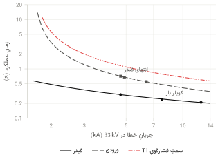
مثال 26.14 (هماهنگیِ سه پله در سه حالت) پرسش. با فیدر (480 A، 0.10)، ورودی (1,600 A، 0.11) و فشارِ قوی (400 A در 132 kV، 0.18)، زمانها و فاصلهها را در سه حالت بیابید.
پاسخ. کوپلرِ باز: 0.24، 0.55، 0.90 s؛ کوپلرِ بسته: 0.21، 0.68، 1.11 s؛ فاز به فاز در انتها: 0.30، 0.71، 1.16 s. همهٔ فاصلهها بالای 0.3 s؛ تنگترین 0.31 s میانِ فیدر و ورودی با کوپلرِ باز.
تفسیر. بدترین حالت همان است که ضریبِ ورودی را تعیین کرد: نیاز 0.109 و گردشده 0.11. هماهنگیای که فقط برای یک حالت ساخته شود در حالتِ دیگر میشکند؛ برای همین مطالعه همهٔ حالتهای کلیدزنیِ مجاز را میشمارد و حالتهای نامجاز را در قاعدههای بهرهبرداری ممنوع میکند. وارسی: فیدر در 7.75 kA: \(0.1 \times 0.14/(16.15^{0.02}-1) = 0.245\,\text{s}\).
این تنظیمها برای آموزشِ روشاند (A-331). تنظیمِ واقعی را مهندسِ حفاظت از مدلِ تأییدشدهٔ شبکه، دادهٔ واقعیِ سازندهها و الزامهای بهرهبردار میسازد، با نرمافزارِ مطالعه و بازبینیِ مستقل، و پیش از برقدار کردن به تأیید میرسد.
26.3.3 خطای زمین در شبکهٔ مقاومتزمین
ایده. در نیروگاهِ P جریانِ خطای زمینِ 33 kV فقط از ترانسفورماتورِ زمینِ بخش میآید. سمتِ مثلثِ ترانسفورماتورِ اصلی هیچ جریانِ توالیِ صفری نمیدهد؛ پس ورودی جریانِ باقیمانده نمیبیند و پشتیبانِ خطای زمینِ فیدر یک کارکردِ پشتیبانِ ایستاده روی مقاومتِ نول است.
earth-fault grading on the resistance-earthed 33 kV:
the 33 kV side of each main transformer is a delta: it has
no neutral, so the earth-fault current comes only from the
earthing transformer and its resistor on the bus section;
the incomer's residual current is zero for a feeder earth
fault - the backup is a standby element on the resistor
feeder element 40 A after 0.5 s; standby 80 A after 1.5 s
sensitivity: 400 A is 10 x the feeder pickup -
faults with some arc resistance are still seen
the resistor is rated 400 A for 10 s:
the standby's 1.5 s plus breaker failure (1.75 s) is inside it
a core-balance CT around each feeder cable sees the earth
current without the load current - a check of CT choiceمثال 26.15 (هماهنگیِ خطای زمین) پرسش. فیدر 40 A با 0.5 s و پشتیبانِ مقاومت 80 A با 1.5 s. حساسیت، فاصله و تحملِ مقاومت را بسنجید.
پاسخ. 400 A ده برابرِ راهاندازیِ فیدر است؛ فاصله 1.0 s؛ بدترین مدت با خرابیِ کلید حدودِ 1.75 s و درونِ 10 s مقاومت.
تفسیر. زمانِ ثابت (definite time) اینجا کافی است چون جریانِ خطای زمین تقریباً به جای خطا بستگی ندارد (مقاومت غالب است). پشتیبانِ ایستاده نخست کوپلر و سپس ورودی را باز میکند تا بخشِ خطادار جدا شود. ترانسفورماتورِ جریانِ حلقوی که هر سه فازِ کابل از آن میگذرند فقط جریانِ باقیمانده را میبیند و خطای CTهای سهفاز را ندارد؛ برای راهاندازیِ 40 A انتخابِ درستی است. وارسی: \(400/40 = 10\)؛ و تنظیمِ فیدر بیش از دو برابرِ جریانِ خازنیِ خودِ فیدر (18.4 A، مثال 26.3) است.
- چرا هم جریانِ بیشینه و هم کمینه لازم است؟
- پنجرهٔ راهاندازی را برای بارِ 250 A و کمینهٔ خطای 2,400 A حساب کنید.
- TMS لازم برای 0.6 s در 3 kA با راهاندازیِ 600 A چیست؟
- چرا با کوپلرِ بسته ورودی کندتر عمل میکند؟
- چرا رلهٔ فیدر جریانِ مبدلها را میبیند ولی ورودی نه؟
- فاصلهٔ 0.3 s چه چیزهایی را میپوشاند؟
- چرا ورودی در خطای زمینِ فیدر جریانِ باقیمانده نمیبیند؟
- چرا برای خطای زمین در این شبکه زمانِ ثابت کافی است؟
- یافتهٔ کلیدِ ورودی چه درسی دربارهٔ رتبههای «موقت» میدهد؟
- اگر پنجرهٔ راهاندازی بسته باشد چه میکنید؟
26.3.4 نیروگاهِ بیشبکه و ورودیهای جهتدار
ایده. همهٔ پنجرهها و فاصلههای بخش 26.3.2 بر این تکیه دارند که شبکه جریانِ خطا را بدهد. وقتی شبکه نیست (خط قطع شده، نیروگاه جزیره شده)، فقط مبدلها خطا را تغذیه میکنند و رفتارِ حفاظت عوض میشود:
the plant without the grid: only converters feed a fault
all converters at about 1.2 x rated current: 2.7 kA at 33 kV
the faulted feeder's relay sees the others: 2,263 A -> trips in 0.44 s
the incomer sees nothing (the grid is gone); a converter's
fault current is only 1.2 x the full-load current of the
same units - an overcurrent relay can hardly tell a fault
from a heavy load, and many converters inject little
negative sequence, which directional elements rely on
so: the plant must not run as an island (ch 20 keeps only
critical loads); grid loss is detected by under-voltage,
frequency and transfer trip, and the converters stopمثال 26.16 (خطایی که فقط مبدلها میبینند) پرسش. اگر شبکه قطع باشد و خطایی روی فیدرِ =WS1 رخ دهد، رلهٔ فیدر چه جریانی میبیند و چه میکند؟ چرا این وضع پذیرفتنی نیست؟
پاسخ. حدودِ 2,263 A (همهٔ مبدلها جز چهار توربینِ خودِ فیدر، با 1.2 برابرِ جریانِ نامی)؛ رله در حدودِ 0.44 s قطع میکند. ورودی هیچ نمیبیند.
تفسیر. این جریان فقط 1.2 برابرِ جریانِ بارِ کاملِ همان واحدهاست؛ پنجرهٔ راهاندازی تقریباً بسته است و رفتارِ مبدل در خطا (کاهشِ جریان، قطعِ خودش) به کنترلِ سازنده بستگی دارد. نتیجه: نیروگاه نباید جزیرهای کار کند (تصمیمِ فصلِ ۲۰ جز برای بارهای حیاتی)، و از دست رفتنِ شبکه باید با کمولتاژی، فرکانس و انتقالِ قطع تشخیص داده شود و مبدلها بایستند. وارسی: \(2{,}700 \times (1 - 21.0/130) = 2{,}264\,\text{A}\).
ورودیهای موازی. با کوپلرِ بسته، دو ترانسفورماتور شینهٔ 33 kV را با هم تغذیه میکنند. خطا میانِ T1 و کلیدِ ورودیاش از دو سو تغذیه میشود:
coupler closed: fault on the cable between T1 and its incomer
T1 feeds it from the HV side: about 4.9 kA
T2 and the converters feed it through the bus and BACKWARDS
through =T1-Q2: 7.6 kA; =T2-Q2 carries 4.9 kA forward
non-directional incomers: =T1-Q2 0.49 s, =T2-Q2 0.68 s - margin 0.19 s,
under the 0.3 s needed: the healthy T2 may trip as well,
and with it the whole plant
a directional element (67) on each incomer, looking toward
its transformer, trips only =T1-Q2, fast and selectively;
the differential of T1 (its zone ends at the incomer's CTs)
is the main protection and trips =T1-Q1 and =T1-Q2;
T2 keeps half the plant runningمثال 26.17 (چرا جهت لازم است) پرسش. در خطای کابلِ میانِ T1 و =T1-Q2 با کوپلرِ بسته، جریانها و زمانهای دو ورودیِ بیجهت چیست؟
پاسخ. =T1-Q2 حدودِ 7.6 kA را وارون میبرد و در 0.49 s قطع میکند؛ =T2-Q2 4.9 kA را رو به جلو میبرد و در 0.68 s. فاصله 0.19 s، کمتر از 0.3 s.
تفسیر. ممکن است T2 هم قطع شود و کلِ نیروگاه بیفتد. کارکردِ جهتدار (67) روی هر ورودی، که فقط جریانی را که به سوی ترانسفورماتورِ خودش میرود میبیند، =T1-Q2 را تند و گزینشپذیر باز میکند. حفاظتِ اصلیِ این خطا دیفرانسیلِ T1 است (ناحیهاش تا CTهای ورودی)؛ جهتدار پشتیبانی است که گزینشپذیر میماند. برای جهت، رله ولتاژ هم میخواهد (VTِ شینه)؛ پس از دست رفتنِ VT (فیوزِ سوخته) باید نظارت شود. وارسی: \(4{,}900 + 2{,}700 = 7{,}600\,\text{A}\).
26.3.5 حفاظتِ ولتاژ و فرکانس در برابرِ الزامِ عبور از خطا
ایده. کارکردهای کمولتاژی، اضافهولتاژ و فرکانس دو کار دارند که با هم میجنگند: تجهیزات را از ولتاژ و فرکانسِ نادرست محافظت کنند و از دست رفتنِ شبکه را تشخیص دهند؛ ولی بهرهبردارِ شبکه میخواهد نیروگاه در افتِ کوتاهِ ولتاژ وصل بماند (عبور از خطا، به انگلیسی fault ride-through؛ فصلهای ۲۰ و ۲۸). الزام به شکلِ یک پوش (envelope) در صفحهٔ زمان–ولتاژ داده میشود: بالای پوش نیروگاه باید وصل بماند. پوشِ اینجا آموزشی است (A-335)؛ پوشِ واقعی از قاعدهٔ اتصالِ بهرهبردار میآید.
ENVELOPE = [(0.0, 0.0), (0.15, 0.0), (1.5, 0.85), (60.0, 0.85)] # A-335
def envelope_v(t: float) -> float:
"""Lowest voltage (pu) the plant must ride through at time t (s)."""
for (t0, v0), (t1, v1) in zip(ENVELOPE, ENVELOPE[1:]):
if t0 <= t <= t1:
return v0 + (v1 - v0) * (t - t0) / (t1 - t0) if t1 > t0 else v1
return ENVELOPE[-1][1]under-voltage stages against a ride-through envelope (teaching):
envelope: 0 pu to 0.15 s, rising to 0.85 pu at 1.5 s
stage pickup pu delay s envelope there result
27-1 0.80 0.20 0.03 TRIPS INSIDE
27-1 0.80 2.00 0.85 ok
27-2 0.30 0.10 0.00 TRIPS INSIDE
27-2 0.20 0.30 0.09 TRIPS INSIDE
a stage trips inside the envelope when it can operate on a
voltage the plant must ride through: pickup above the
envelope at its delay; a protection that trips on a grid
dip breaks the connection requirement (ch 20, ch 28)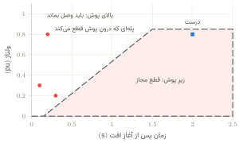
مثال 26.18 (سه پلهای که نباید باشند) پرسش. کدام پلههای کمولتاژی در شکل 26.7 درونِ پوش قطع میکنند؟
پاسخ. سه پله: 0.80 پریونیت با 0.20 s، 0.30 با 0.10 s و 0.20 با 0.30 s. فقط 0.80 با 2.0 s درست است.
تفسیر. پلهای که در زمانِ تأخیرش، ولتاژِ راهاندازیاش بالای پوش است، میتواند در افتی که نیروگاه باید از آن بگذرد قطع کند. همین وارسی برای تنظیمهای درونِ مبدلها هم لازم است (بخش 26.4.6): تنظیمِ کارخانهایِ یک اینورتر میتواند کلِ الزام را بشکند. بهرهبردار معمولاً فهرستِ تنظیمهای ولتاژ و فرکانسِ نیروگاه و مبدلها را برای تأیید میخواهد. وارسی: پوش در 0.2 s: \(0.85 \times (0.2-0.15)/1.35 = 0.031\) و \(0.80 > 0.031\).
تشخیصِ جزیره با آهنگِ تغییرِ فرکانس. وقتی بخشی از شبکه با نیروگاه جزیره میشود، فرکانس به اندازهٔ ناترازیِ توان تغییر میکند:
\[ \frac{df}{dt} = \frac{\Delta P\, f_0}{2 H S} \tag{26.11}\]
با \(H\) ثابتِ لختیِ جزیره. نیروگاهِ مبدلدار لختیِ کمی دارد؛ پس ناترازیِ بزرگ زود دیده میشود، ولی ناترازیِ کوچک نه:
island detection by rate of change of frequency (teaching):
df/dt = dP x f0 / (2 H S); setting 1.0 Hz/s
power mismatch H s df/dt Hz/s detected
10% 0.5 5.00 yes
2% 0.5 1.00 NO
1% 2.0 0.12 NO
30% 0.5 15.00 yes
a near-balanced island changes frequency slowly and is not
seen (the non-detection zone); a grid event can raise
df/dt everywhere and trip healthy plants - the setting is
the operator's; transfer trip over the telecom link closes
the gap without depending on the power balanceمثال 26.19 (ناحیهٔ عدمتشخیص) پرسش. با تنظیمِ 1.0 Hz/s، جزیرهای با ناترازیِ 10 % و 2 % (هر دو با \(H = 0.5\,\text{s}\)) دیده میشود؟
پاسخ. 10 %: 5 Hz/s، دیده میشود. 2 %: درست 1.0 Hz/s، روی مرز و دیده نمیشود.
تفسیر. جزیرهٔ تقریباً متوازن آرام تغییر میکند و در «ناحیهٔ عدمتشخیص» میماند. تنظیمِ تندتر خطرِ دیگری دارد: در رخدادِ بزرگِ شبکه آهنگِ فرکانس همهجا بالا میرود و نیروگاههای سالم قطع میشوند و رخداد را بدتر میکنند. پس تنظیم را بهرهبردار تعیین میکند و انتقالِ قطع از سرِ شبکه (بخش 26.6.2) شکاف را بیوابستگی به ناترازی میبندد. وارسی: \(0.02 \times 50/(2 \times 0.5) = 1.0\).
- چرا بیشبکه پنجرهٔ راهاندازی تقریباً بسته میشود؟
- سه راه برای تشخیصِ از دست رفتنِ شبکه نام ببرید.
- چرا ورودیهای موازی کارکردِ جهتدار میخواهند؟
- کارکردِ جهتدار از کجا جهت را میفهمد و چه خرابیای کورش میکند؟
- «پوشِ عبور از خطا» را با زبانِ خودتان تعریف کنید.
- پلهای با 0.5 پریونیت و 0.5 s با پوشِ این بخش درست است؟
- چرا تنظیمهای درونِ اینورتر هم باید با پوش سنجیده شوند؟
- آهنگِ تغییرِ فرکانس با ناترازیِ 5 % و \(H = 1\,\text{s}\) چیست؟
- «ناحیهٔ عدمتشخیص» چیست؟
- چرا تنظیمِ تندِ ROCOF برای شبکه خطرناک است؟
26.3.6 مدارِ قطع، تغذیهٔ DC و کنترلِ پیکربندی
ایده. رلهٔ درست با مدارِ قطعِ نادرست هیچ کاری نمیکند. زنجیرهٔ حفاظت (شکل 26.8) از CT و VT آغاز میشود، به رله میرسد، از مدارِ قطع و بوبینِ قطعِ کلید میگذرد و با باز شدنِ کنتاکتها تمام میشود. همهٔ اینها به تغذیهٔ DC وابستهاند: رله، بوبین و ثبتکنندهها با باتریِ ایستگاه کار میکنند، حتی وقتی برقِ AC رفته است (فصلِ ۲۳).
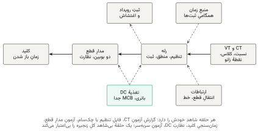
قاعدههای مدارِ قطع.
- دو بوبینِ قطع در هر کلیدِ مهم، هر کدام با مدارِ DCِ جدا: حفاظتِ اصلی به یکی، پشتیبان به دیگری (مثال 26.8).
- نظارت بر مدارِ قطع (trip-circuit supervision): جریانِ کوچکی پیوسته از مدار میگذرد و بریدگیِ سیم یا بوبین را پیش از خطا هشدار میدهد. هشدارِ ایستادهای که کسی نمیبیند همان اثرِ بینظارتی را دارد (بخش 26.6.5).
- رلهٔ قفل (86) برای ترانسفورماتورِ اصلی: پس از قطعِ دیفرانسیل یا رلهٔ گاز، تا بازبینی نشده دوباره وصل نمیشود.
- تغذیهٔ DCِ جدا برای هر تابلو با کلیدِ مینیاتوریِ خودش و نظارتِ ولتاژ.
the 110 V control battery (ch 23) and its circuits:
internal 0.025 ohm + cable 0.010 ohm -> fault current 3.1 kA
direct current has no zero crossing: the breaker must be
rated to break DC at this voltage and current (AC ratings
do not apply); selectivity between the battery fuse and
the circuit breakers is checked like the AC board
each protection panel has its own DC circuit with
supervision - lesson B's independence of main and backupمثال 26.20 (قطعِ جریانِ مستقیم) پرسش. جریانِ اتصالِ کوتاهِ باتریِ 110 V با مقاومتِ درونیِ 0.025 Ω و کابلِ 0.010 Ω چیست؟ چرا رتبهٔ AC کلیدِ مینیاتوری کافی نیست؟
پاسخ. حدودِ 3.1 kA. جریانِ مستقیم گذرِ از صفر ندارد و قوسِ آن خودبهخود خاموش نمیشود؛ کلید باید برای قطعِ DC در این ولتاژ و جریان رتبه داشته باشد.
تفسیر. گزینشپذیریِ فیوزِ باتری و کلیدهای مدارها مانندِ تابلوی AC وارسی میشود؛ اگر فیوزِ اصلیِ باتری با خطای یک مدارِ کوچک بسوزد، همهٔ حفاظتها بیبرق میشوند. وارسی: \(110/0.035 = 3{,}143\,\text{A}\).
سندهای تابلوی حفاظت. تابلو از روی این سندها ساخته و آزموده میشود:
documents of a protection panel (each with a revision and a status):
protection single-line zones, CTs, VTs, functions per breaker
schematic diagrams the circuits: trip, close, alarm, supervision
wiring diagrams where each wire goes, terminal by terminal
terminal and cable lists every core of every cable, both ends
I/O and signal list each signal to SCADA and the operator
setting files the approved settings with checksum (lab D)
logic diagrams interlocks, breaker failure, transfer trip
the panel is built and tested from these; a change on site
without a revised drawing breaks the chain of evidenceکنترلِ پیکربندی. تنظیمهای رله یک فایل است و فایل میتواند بیصدا عوض شود. چکسام (اثرِ انگشتِ عددیِ فایل) نشان میدهد آنچه در رله است همان است که آزموده و تأیید شده:
def setting_file(relay: str, settings: dict, version: str) -> dict:
"""A setting file with a checksum: the record that what was tested
is what is in the relay."""
body = json.dumps({"relay": relay, "version": version,
"settings": settings}, sort_keys=True)
return {"relay": relay, "version": version,
"sha256": hashlib.sha256(body.encode()).hexdigest()[:12]}setting-file configuration control (teaching):
=WS1-Q1-F1 rev A: checksum d7fc3541542e
=WS1-Q1-F1 rev B: checksum d05effd40774 (TMS 0.10 -> 0.12)
the checksum read from the relay after testing must equal
the approved file's; a change gets a new revision, a study
note, a test and an approval - never an edit on site that
no record shows (ch 35 for the cyber side)مثال 26.21 (یک رقم، یک بازنگریِ تازه) پرسش. اگر TMS فیدرِ =WS1 از 0.10 به 0.12 برود، چه چیزی باید عوض شود؟
پاسخ. چکسام عوض میشود (خروجیِ بالا)؛ پس بازنگریِ تازهٔ فایل، یادداشتِ مطالعه که نشان دهد هماهنگی هنوز برقرار است، آزمونِ تزریقِ ثانویه با تنظیمِ تازه، و تأیید لازم است.
تفسیر. تغییرِ TMS فیدر فاصله با ورودی را کم میکند؛ با 0.12 در حالتِ کوپلرِ باز فاصله زیرِ 0.3 s میرود (خودآزمایی). تغییری که «فقط یک رقم» است میتواند هماهنگی را بشکند. فصلِ ۳۵ همین را از دیدِ امنیتِ سایبری میبیند: دسترسی به رلهها، ثبتِ تغییرها و نسخهها. وارسی: دو چکسام متفاوتاند.
26.3.7 بازبینیِ بهرهبردار و مرزِ تأیید
ایده. حفاظتِ نیروگاه در مرزِ اتصال با حفاظتِ شبکه یکی میشود: رلهٔ خطِ 132 kV در دو سرِ خط باید با هم کار کنند، انتقالِ قطع از سرِ شبکه میآید، و تنظیمهای ولتاژ و فرکانس الزامِ اتصالاند. بهرهبردار معمولاً اینها را میخواهد:
- دادهها: نمودارِ تکخطیِ حفاظت، CTها و VTها، مدلِ رلهها.
- مطالعهها: اتصالِ کوتاه و هماهنگی با دادهٔ شبکهٔ خودش (U-089).
- تنظیمها: فایلها و چکسامهای رلههای مرز و تنظیمهای ولتاژ و فرکانسِ مبدلها.
- آزمونها: آزمونِ سربهسرِ خط و انتقالِ قطع (بخش 26.6.4).
- تأییدِ کتبی پیش از برقدار کردن، و دوباره پس از هر تغییر.
تنظیمهایی که از مرز میگذرند مسئولیتِ مشترک دارند: یک طرف پیشنهاد میکند، طرفِ دیگر میپذیرد، و هر دو آزمون را امضا میکنند. این کتاب این مرز را نشان میدهد؛ تقسیمِ واقعیِ مسئولیت در قراردادِ اتصال و قاعدههای بهرهبردار است.
- چرا دو بوبینِ قطع با مدارهای DCِ جدا؟
- نظارت بر مدارِ قطع چه خرابیای را پیش از خطا نشان میدهد؟
- رلهٔ قفل (86) چه میکند و کجا به کار میرود؟
- جریانِ خطای باتریِ 110 V با مقاومتِ کلِ 0.05 Ω؟
- چرا کلیدِ DC رتبهٔ جداگانه میخواهد؟
- هفت سندِ تابلوی حفاظت را نام ببرید.
- چکسام چه چیزی را ثابت میکند و چه چیزی را نه؟
- با TMS فیدرِ 0.12، زمانِ فیدر در 7.75 kA و فاصله با ورودی (0.55 s) را حساب کنید.
- بهرهبردار برای تأییدِ حفاظتِ مرز چه میخواهد؟
- چرا تأیید پس از هر تغییر تکرار میشود؟
26.3.8 مبدلها در خطای دیگران، بازبست و همزمانی
فیدرِ سالمی که توربینهایش خطا را تغذیه میکنند. وقتی خطا روی یک فیدر است، توربینهای فیدرهای سالم هم از راهِ شینه به آن جریان میدهند. رلهٔ فیدرِ سالم این جریان را میبیند؛ آیا بهاشتباه قطع میکند (sympathetic tripping)؟
a healthy feeder fed by its own turbines during a fault elsewhere
four turbines, rated current 368 A at 33 kV; feeder pickup 480 A, TMS 0.1
converter fault current amps healthy feeder relay
1.1 x 405 never (below pickup)
1.3 x 479 never (below pickup)
1.5 x 552 would trip after 5.0 s
the faulted feeder clears in about 0.3 s; the healthy one
would need seconds - no sympathetic trip, because the
inverse curve is slow just above pickup; a converter that
feeds 1.5 x for long, or a feeder with more units, makes
the margin thin - then a directional element (forward
only) is the cure, if the converters give it enough
negative-sequence current to decide (makers' data)مثال 26.22 (منحنیِ کند، نجاتدهنده) پرسش. چهار توربین با جریانِ خطای 1.1، 1.3 و 1.5 برابرِ نامی؛ رلهٔ فیدرِ سالم قطع میکند؟
پاسخ. در 1.1 و 1.3 زیرِ راهاندازی (480 A) است؛ در 1.5 برابر (552 A) پس از 5.0 s قطع میکرد، ولی فیدرِ معیوب در حدودِ 0.3 s پاک شده است.
تفسیر. منحنیِ معکوس درست بالای راهاندازی کند است و همین فیدرِ سالم را نگه میدارد. ولی فیدری با واحدهای بیشتر یا مبدلی که دیرتر جریانِ زیاد بدهد حاشیه را تنگ میکند؛ آنگاه عنصرِ جهتدار (فقط رو به جلو) چاره است، به شرطِ آنکه مبدلها جریانِ توالیِ منفیِ کافی برای تصمیم بدهند (دادهٔ سازنده؛ مثال 26.16). وارسی: \(0.014/(1.15^{0.02} - 1) = 5.0\,\text{s}\).
بازبستِ خطِ صادرات. خطای هوایی اغلب گذراست؛ بهرهبردار پس از قطع، خط را پس از زمانِ مرده دوباره میبندد. اگر نیروگاه در این مدت جزیرهای کار کند، فازِ آن از شبکه دور میشود: \(\Delta\theta = 360\,\Delta f\,t\):
auto-reclosing the export line while the plant is islanded
phase drift between plant and grid during the dead time:
angle = 360 x df x t (degrees)
frequency difference Hz dead time 0.5 s 1.0 s 3.0 s
0.1 18 36 108
0.5 90 180 540
1.0 180 360 1080
the plant must have stopped before the reclose: detection
260 ms (island detection 200 ms + breaker 60 ms)
inside a 0.5 s dead time leaves little margin - closing
onto a live island 180 degrees out of phase doubles the
voltage across the breaker and stresses every machine and
transformer; so either transfer trip stops the plant at
once, or the operator lengthens the dead time or recloses
only onto a dead line - an item for the connection
agreement (ch 28)مثال 26.23 (صدوهشتاد درجه در یک ثانیه) پرسش. با 0.5 Hz اختلافِ فرکانس، فاز در زمانِ مردهٔ 0.5 و 1.0 s چقدر دور میشود، و نیروگاه چقدر وقت دارد که بایستد؟
پاسخ. 90° و 180°؛ تشخیصِ جزیره و کلید حدودِ 260 ms میخواهند، درونِ زمانِ مردهٔ 0.5 s با حاشیهٔ کم.
تفسیر. بستن روی جزیرهٔ زنده با 180° اختلاف ولتاژِ دو سرِ کلید را دو برابر میکند و به همهٔ ماشینها و ترانسفورماتورها فشار میآورد. پس یا انتقالِ قطع نیروگاه را فوراً میایستاند (بخش 26.6.2)، یا بهرهبردار زمانِ مرده را بلند میکند یا فقط روی خطِ بیبرق میبندد؛ قلمی برای توافقِ اتصال (فصلِ ۲۸). وارسی: \(360 \times 0.5 \times 1.0 = 180\).
همزمانسازی در بستنِ کلیدِ خط. وقتی دو بخشِ برقدار به هم بسته میشوند، رلهٔ همزمانی (synchrocheck) ولتاژ، فرکانس و زاویه را در پنجره نگه میدارد. زمانِ ماندن در پنجره \(2\theta_\text{w}/(360\,s)\) است و زمانِ بستنِ کلید زاویهای را میخواهد که فرمان باید زودتر برود:
synchrocheck for closing the line breaker (teaching window +/-20 deg)
slip Hz time inside the window s advance angle for 80 ms deg
0.05 2.22 1.4
0.10 1.11 2.9
0.20 0.56 5.8
0.50 0.22 14.4
slow slip leaves a long window; fast slip a short one, and
the breaker's own closing time turns into an angle: the
relay issues the close early by that angle so the contacts
touch at zero; the windows for voltage, frequency and angle
are the operator's, and the synchrocheck is proved in the
end-to-end testsمثال 26.24 (زاویهٔ پیشفرمان) پرسش. با لغزشِ 0.1 Hz و پنجرهٔ ±20°، زمانِ درونِ پنجره و زاویهٔ پیشفرمان برای کلیدِ 80 ms؟
پاسخ. 1.11 s و 2.9°.
تفسیر. لغزشِ کم پنجرهٔ بلند و لغزشِ زیاد پنجرهٔ کوتاه میدهد؛ رله فرمانِ بستن را به اندازهٔ زاویهٔ پیشفرمان زودتر میدهد تا کنتاکتها در صفر به هم برسند. پنجرهها مالِ بهرهبردارند و همزمانی در آزمونِ سربهسر ثابت میشود. وارسی: \(40/36 = 1.11\).
- با شش توربین روی فیدر و 1.3 برابرِ نامی، رلهٔ فیدرِ سالم (480 A) چه میکند؟
- دورشدنِ فاز با 0.2 Hz در زمانِ مردهٔ 2 s؟
- زاویهٔ پیشفرمان با لغزشِ 0.3 Hz و کلیدِ 60 ms؟
- سه راهِ پیشگیری از بستن روی جزیرهٔ زنده را نام ببرید.
26.3.9 اضافهولتاژ و فرکانس در برابرِ نوارهای عبور
ایده. پوشِ عبور از خطا (بخش 26.3.5) سمتِ کمولتاژی را میپوشاند؛ الزامِ اتصال سمتِ پرولتاژی و فرکانس را هم دارد: نیروگاه باید در ولتاژِ کمی بالاتر از نامی برای مدتی، و در نوارِ فرکانسیِ پیوسته، متصل بماند. هر پلهٔ 59 (اضافهولتاژ) و 81 (فرکانس) که درونِ این نوارها کار کند، الزام را میشکند:
over-voltage and frequency stages against the ride-through bands
(teaching: stay connected below 1.30 pu for 0.2 s, 1.20 pu for 1 s,
1.15 pu for 60 s; frequency 47.5-51.5 Hz continuous)
stage pickup delay s band there result
59-1 1.10 pu 30.00 1.15 pu TRIPS INSIDE
59-1 1.17 pu 60.00 1.15 pu ok
59-2 1.25 pu 0.50 1.20 pu ok
59-2 1.35 pu 0.10 1.30 pu ok
81O 51.0 Hz 2.00 51.5 Hz TRIPS INSIDE
81O 52.0 Hz 0.50 51.5 Hz ok
81U 48.0 Hz 2.00 47.5 Hz TRIPS INSIDE
81U 47.0 Hz 0.50 47.5 Hz ok
a stage that operates where the plant must stay connected
breaks the requirement as surely as an under-voltage stage
inside the low-voltage envelope (lesson B); after a load
rejection the voltage rises - the 59-2 stage protects the
equipment, the band protects the grid: both are met only
with the operator's numbersمثال 26.25 (سه پلهای که زود قطع میکنند) پرسش. کدام پلهها درونِ نوارهای آموزشی کار میکنند و چگونه اصلاح میشوند؟
پاسخ. 59-1 با 1.10 پریونیت در 30 s (نوار 1.15)؛ 81O با 51.0 Hz (نوار تا 51.5)؛ 81U با 48.0 Hz (نوار از 47.5). راهاندازیها به بیرونِ نوار میروند: مثلاً 1.17 پریونیت در 60 s، 52.0 و 47.0 Hz.
تفسیر. پس از جداشدنِ بار ولتاژ بالا میرود؛ پلهٔ 59-2 تجهیزات را و نوار شبکه را حفاظت میکند، و هر دو فقط با عددهای بهرهبردار برآورده میشوند. همین وارسی برای فهرستِ تنظیمهای مبدلها هم لازم است (بخش 26.4.6). وارسی: \(1.10 < 1.15\).
- پلهٔ 59 با 1.18 پریونیت و تأخیرِ 0.5 s درونِ نوار است؟
- چرا پس از جداشدنِ بار ولتاژ بالا میرود؟
- پلهٔ 81U با 47.8 Hz و 10 s؟
26.3.10 شیلدِ کابلها در برابرِ انتخابِ زمینکردن و کوپلر
ایده. جریانِ خطای زمین از شیلدِ کابل به منبع برمیگردد. تحملِ شیلد بیدررو است، \(t = (I_\text{1s}/I)^2\) (فصلِ ۲۴)؛ پس انتخابِ زمینکردن و زمانِ پشتیبان با هم شیلد را حفظ یا خراب میکنند:
the cable screens against the earthing choice and the coupler
screen 35 mm2 Cu carries 5.0 kA for 1 s (ch 24): t = (5.0 kA / I)^2
earthing fault A screen withstands s backup s
solid (no resistor) 7170 0.5 1.5
400 A resistor, coupler open 400 156.2 1.5
two resistors, coupler closed 800 39.1 1.5
solidly earthed, a feeder earth fault cleared by the 1.5 s
standby would overheat the screen (0.5 s); with the
resistor the screen has minutes - one reason for the 400 A
design (lesson A); with the coupler closed both resistors
feed the fault: 800 A, still far inside the screen's
rating, but each standby element sees only its own 400 A
and the standby logic opens the coupler first (lesson B)مثال 26.26 (نیمثانیه یا دو دقیقه) پرسش. شیلدِ 35 mm² مس با تحملِ 5.0 kA در 1 s، در زمینکردنِ مستقیم (7.17 kA)، با مقاومتِ 400 A و با دو مقاومت (کوپلرِ بسته) چه مدت تحمل میکند؟
پاسخ. 0.5 s، 156 s و 39 s؛ پشتیبانِ ایستاده 1.5 s است.
تفسیر. بیمقاومت، خطای زمینی که پشتیبان پاک کند شیلد را میسوزاند؛ با مقاومت، شیلد دقیقهها وقت دارد: یکی از دلیلهای طراحیِ 400 A (بخش 26.2.3). با کوپلرِ بسته هر دو مقاومت خطا را تغذیه میکنند: 800 A، هنوز بسیار درونِ تحمل؛ ولی هر عنصرِ ایستاده فقط 400 A خودش را میبیند و منطقِ پشتیبان نخست کوپلر را باز میکند (مثال 26.15). وارسی: \((5{,}000/400)^2 = 156\).
- تحملِ شیلدِ 25 mm² (تحملِ 3.6 kA در 1 s) با 800 A؟
- چرا با کوپلرِ بسته هر عنصرِ ایستاده نیمی از جریانِ خطا را میبیند؟
26.3.11 برقدار کردنِ دوبارهٔ فیدر: هجومِ چهار واحد و رلهٔ انتگرالگیر
ایده. پس از یک خاموشی، کلیدِ فیدر بسته میشود و چهار ترانسفورماتورِ واحد با هم جریانِ هجومی میکشند. این جریان کاهش مییابد؛ رلهٔ زمانِ معکوس با جریانِ متغیر پیشرفتِ خود را جمع میکند و وقتی به یک رسید قطع میکند:
\[ \int_0^{t_\text{trip}} \frac{\mathrm{d}t}{t_\text{op}\!\left(I(t)\right)} = 1 \tag{26.12}\]
def relay_progress(i0: float, tau: float, pickup: float, tms: float,
dt: float = 0.001, t_end: float = 5.0) -> tuple:
"""Integrate 1 / t(I(t)) for a current decaying as i0 exp(-t/tau);
the relay trips when the sum reaches 1. Returns (tripped, time or
the largest progress reached)."""
progress, t = 0.0, 0.0
while t < t_end:
i = i0 * math.exp(-t / tau)
op = pr.trip_time(i, pickup, tms)
if not math.isinf(op):
progress += dt / op
if progress >= 1.0:
return True, t
t += dt
return False, progressre-energising feeder =WS1 with four unit transformers (teaching)
inrush of four units with diversity 0.6, taken as an rms-like
current decaying with time constant tau; feeder SI 480 A, TMS 0.10
start A tau s feeder relay
1996 0.2 no trip (29% of the way)
1996 0.5 no trip (73% of the way)
1996 1.0 TRIPS after 0.62 s
an inverse-time relay adds up its progress as the current
falls: a short inrush passes, a slow one trips the feeder
it has just closed; the cures are second-harmonic blocking
on the feeder's overcurrent, a cold-load settings group
for the first seconds, or energising the units one by one
(their own breakers) - chosen in the energising studyمثال 26.27 (هجومِ کُند فیدر را میاندازد) پرسش. با جریانِ آغازینِ حدودِ 2.0 kA که با ثابتِ زمانیِ 0.2، 0.5 یا 1.0 s کم میشود، رلهٔ فیدر قطع میکند؟
پاسخ. با 0.2 s نه (29 % راه)؛ با 0.5 s نه (73 %)؛ با 1.0 s پس از 0.62 s قطع میکند.
تفسیر. هجومِ کوتاه میگذرد و هجومِ کند فیدری را که تازه بسته شده میاندازد. چارهها: مسدودسازیِ هارمونیکِ دوم روی جریانِ زیادِ فیدر (بخش 26.2.9)، گروهِ تنظیمِ «بارِ سرد» برای ثانیههای نخست، یا برقدار کردنِ واحدها یکییکی با کلیدهای خودشان؛ انتخاب در مطالعهٔ برقدار کردن. قلهٔ هجوم، تنوع و افت آموزشیاند. وارسی: با ثابتِ زمانیِ بزرگتر، جریان دیرتر زیرِ راهاندازیِ 480 A میرسد: \(\tau \ln(1{,}996/480) = 1.4\,\text{s}\) برای \(\tau = 1\).
- چرا رلهٔ زمانِ معکوس با جریانِ کاهشی مانندِ انتگرالگیر رفتار میکند؟
- اگر واحدها یکییکی برقدار شوند، جریانِ آغازین چند است؟
26.4 پ. زمینکردن، صاعقه و ضربه
26.4.1 خاک، شبکهٔ زمین و سامانهٔ یکپارچهٔ زمین
ایده. سامانهٔ زمین (به انگلیسی earthing system) سه کار دارد: مسیری برای جریانِ خطا تا حفاظت عمل کند، نگه داشتنِ ولتاژِ سطحِ زمین و بدنهها در حدی که برای آدم بیخطر باشد، و مرجعی برای ضربهها و صاعقه. در پست، یک شبکهٔ توری (mesh) از رسانای مسیِ بیروکش در عمقِ کم زیرِ سراسرِ محوطه، با میلهها، به همهٔ بدنهها، سازهها، نولها و غلافها پیوند (bonding) میخورد.
خاک اول است. مقاومتِ شبکه را بیش از هر چیز مقاومتِ ویژهٔ خاک (\(\rho\) بر حسبِ Ω·m) تعیین میکند. یک فرمِ آموزشیِ ساده برای شبکهای با مساحتِ \(A\) و طولِ کلِ رسانای \(L\):
\[ R_\text{g} \approx \frac{\rho}{4r} + \frac{\rho}{L}, \qquad r = \sqrt{A/\pi} \tag{26.13}\]
def grid_resistance(rho: float, area_m2: float, length_m: float) -> float:
"""Approximate resistance of a buried mesh: rho/(4 r) + rho/L, with
r the radius of a circle of the same area (teaching form)."""
r = math.sqrt(area_m2 / math.pi)
return rho / (4 * r) + rho / length_m
def gpr(i_grid: float, r_grid: float) -> float:
"""Ground potential rise (V) for the share of fault current that
returns through the earth grid."""
return i_grid * r_gridsubstation earth grid (100 m x 70 m mesh, teaching):
soil ohm m conductor m grid ohm
50 1,600 0.296
50 2,400 0.286
150 1,600 0.888
150 2,400 0.857
400 1,600 2.368
400 2,400 2.285
the soil sets the resistance far more than the copper: more
conductor lowers it little once the mesh covers the area;
the soil survey (U-098) is the first evidence, layers and
seasons includedمثال 26.28 (خاک یا مس؟) پرسش. مقاومتِ شبکهٔ 100 × 70 m را برای خاکِ 50، 150 و 400 Ω·m با 1,600 و 2,400 m رسانا حساب کنید.
پاسخ. در 150 Ω·m: 0.888 و 0.857 Ω؛ در 50: حدودِ 0.29 Ω؛ در 400: حدودِ 2.3 Ω.
تفسیر. پنجاه درصد مسِ بیشتر مقاومت را فقط 3.5 % کم کرد؛ هشت برابر شدنِ مقاومتِ خاک آن را هشت برابر کرد. پس اندازهگیریِ مقاومتِ ویژهٔ خاک (لایهها، رطوبت، فصلها) نخستین شاهد است (U-098). خاکِ لایهای (خشک در بالا، مرطوب در پایین) میلههای بلند را سودمند میکند؛ این را مدلِ دولایه نشان میدهد که کارِ مطالعهٔ زمین است. وارسی: \(r = \sqrt{7{,}000/\pi} = 47.2\,\text{m}\) و \(150/188.8 + 150/2{,}400 = 0.857\).
اندازهٔ رسانا. رسانای شبکه باید جریانِ خطا را در زمانِ رفعِ آن بیآسیب ببرد. با همان قاعدهٔ بیدررو (فصلِ ۲۴):
earth-grid conductor by the adiabatic rule S = I sqrt(t) / k
(copper, teaching k = 143 as in ch 24 - bare conductors may
use a higher final temperature and k)
fault kA time s S mm2
5.2 0.5 26
5.2 1.0 36
31.5 1.0 220
31.5 3.0 382
the 132 kV earth fault sets the size (the 33 kV earth faults
are held to 400 A by the resistor); many owners size the
grid for the switchgear rating (31.5 kA) and its time, so
the grid outlives fault-level growth; corrosion allowance
and mechanical strength add to the electrical minimumمیلهها و سامانهٔ یکپارچه. میلهٔ تکی مقاومتِ زیادی دارد؛ ولی زمینِ پیهای توربینها، که با غلافِ کابلهای جمعآوری به پست پیوند خوردهاند، با شبکهٔ پست یک سامانه میشوند:
rods and the plant-wide earthing system:
one rod 3 m x 16 mm in 150 ohm m: R = rho/(2 pi L)(ln(4L/d) - 1) = 44.7 ohm
ten rods far apart: 4.5 ohm; close together they share soil and give more
turbine foundation earth (teaching 5 ohm each), 12 turbines,
bonded through the cable screens to the substation grid:
substation alone 0.857 ohm; all together about 0.28 ohm
the screens join the earths into one system: lower resistance
and shared fault current, but a substation fault also raises
the turbines' earths a little - the study models itمثال 26.29 (یک میله، ده میله، دوازده توربین) پرسش. مقاومتِ یک میلهٔ 3 m و 16 mm در 150 Ω·m چیست؟ اگر زمینِ دوازده توربین (هر کدام 5 Ω، آموزشی) موازیِ شبکهٔ پست شود چه؟
پاسخ. میله \(R = \frac{\rho}{2\pi L}\left(\ln\frac{4L}{d} - 1\right) = 44.7\,\Omega\)؛ ده میلهٔ دور از هم 4.5 Ω. سامانهٔ یکپارچه حدودِ 0.28 Ω.
تفسیر. میله برای پست کافی نیست ولی در خاکِ لایهای یا کنارِ توری سودمند است. سامانهٔ یکپارچه مقاومت را کم و جریانِ خطا را میانِ زمینها پخش میکند؛ ولی خطای پست زمینِ توربینها را هم کمی بالا میبرد و غلافها جریانِ خطا میبرند (فصلِ ۲۴: اتصالِ غلاف). مدلِ سامانهٔ یکپارچه کارِ مطالعهٔ زمین است. وارسی: \(1/(1/0.857 + 12/5) = 0.280\).
26.4.2 افزایشِ پتانسیلِ زمین، ولتاژِ تماس و گام
ایده. وقتی جریانِ خطا \(I_\text{g}\) از شبکه به خاک میرود، پتانسیلِ شبکه نسبت به «زمینِ دور» بالا میرود: افزایشِ پتانسیلِ زمین (ground potential rise, GPR):
\[ \text{GPR} = I_\text{g}\,R_\text{g} \tag{26.14}\]
\(I_\text{g}\) فقط سهمی از جریانِ خطاست که از خاک برمیگردد؛ بقیه از سیمِ محافظِ خط و غلافها برمیگردد. این تقسیم حاصلِ مطالعه است، نه عددی ثابت.
ground potential rise for a 132 kV earth fault in the substation:
grid 0.857 ohm; fault 5.2 kA, share to earth 40% = 2,080 A
GPR = 2,080 x 0.857 = 1,782 V
the earth wire of the line and the cable screens carry the
rest of the current back; the split is a study result
(U-089), not a constant
touch and step voltages are fractions of the GPR set by the
mesh geometry; the tolerable limits fall as the clearing
time grows (roughly with 1/sqrt t): halving the clearing
time raises the limit by 1.41 x - fast protection is
part of the earthing designتماس و گام. سطحِ زمین همپتانسیل نیست. ولتاژِ تماس (touch voltage) اختلافِ میانِ بدنهای است که دست به آن است و زمینِ زیرِ پا؛ ولتاژِ گام (step voltage) اختلافِ میانِ دو پا با فاصلهٔ یک متر. برای شهود، الکترودِ نیمکرهای را ببینید: پتانسیلِ سطح در فاصلهٔ \(r\) برابرِ \(V(r) = \rho I/(2\pi r)\) است:
def hemisphere_v(rho: float, i: float, r: float) -> float:
"""Surface potential (V) at distance r (m) from the centre of a
hemispherical electrode carrying i (A) into soil of rho (ohm m)."""
return rho * i / (2 * math.pi * r)
def foot_resistance(rho_surface: float, b: float = 0.08) -> float:
"""Resistance (ohm) of one foot as a disc of radius b on the surface:
rho / (4 b)."""
return rho_surface / (4 * b)
def body_current(v_touch: float, r_body: float, r_foot: float,
feet: str = "touch") -> float:
"""Body current (A) for a touch (feet in parallel) or step (feet in
series) voltage."""
r_feet = r_foot / 2 if feet == "touch" else 2 * r_foot
return v_touch / (r_body + r_feet)potential around a single hemispherical electrode (a = 0.5 m):
soil 150 ohm m, current 2,080 A: R = rho/(2 pi a) = 47.7 ohm, GPR 99 kV
distance m potential kV share of GPR
0.5 99.3 100%
1.0 49.7 50%
1.5 33.1 33%
2.0 24.8 25%
5.0 9.9 10%
10.0 5.0 5%
50.0 1.0 1%
step from 0.5 to 1.5 m: 66 kV - two-thirds of the GPR within a pace
one rod cannot carry a substation's fault current: the mesh
of lesson C spreads it (0.86 ohm, GPR 1,783 V) and keeps
the surface inside it nearly at one potential; a real mesh
is not a hemisphere - current leaves mostly at its edges
and corners, which the guide's method takes into account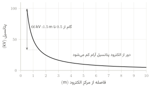
مثال 26.30 (چرا میلهٔ تکی خطرناک است) پرسش. الکترودِ نیمکرهایِ 0.5 m در خاکِ 150 Ω·m جریانِ 2,080 A را میبرد. مقاومت، افزایشِ پتانسیل و ولتاژِ گام از 0.5 تا 1.5 m چیست؟
پاسخ. 47.7 Ω؛ 99 kV؛ گام 66 kV، دوسوم در یک گام.
تفسیر. پتانسیل نزدیکِ الکترود تند فرو میافتد (شکل 26.9). توری همین جریان را روی سطحِ بزرگی پخش میکند: افزایشِ پتانسیل به 1,783 V میرسد و سطحِ درونِ توری تقریباً همپتانسیل میماند؛ آدمی که درونِ پست ایستاده با بدنهها بالا و پایین میرود. خطر در لبهها و بیرونِ توری است، و توریِ واقعی نیمکره نیست: جریان بیشتر از لبهها و گوشهها بیرون میرود. روشِ راهنمای زمینکردنِ پست این را با هندسهٔ توری حساب میکند. وارسی: \(150/(2\pi \times 0.5) = 47.7\).
جریانِ بدن. آنچه آسیب میزند جریانِ بدن است، نه ولتاژ. پاها با خاک مقاومتی سری میسازند (هر پا یک دیسکِ کوچک: \(\rho_\text{s}/(4b)\))؛ در تماس دو پا موازیاند و در گام سری:
body current for a 500 V touch voltage (teaching resistances):
body 1,000 ohm; each foot a disc of 0.08 m: R = rho_s/(4 b)
surface rho_s ohm m foot ohm touch A step A
natural soil 150 469 0.405 0.258
wet gravel layer 1,000 3,125 0.195 0.069
crushed rock layer 3,000 9,375 0.088 0.025
a high-resistivity surface layer puts resistance in series
with the body: the same voltage drives several times less
current; the tolerable current itself falls as the clearing
time grows - the guide's method combines the two, and fast
protection and the surface layer are earthing measuresمثال 26.31 (لایهٔ سنگریزه) پرسش. ولتاژِ تماسِ 500 V با بدنِ 1,000 Ω روی خاکِ 150 Ω·m و روی سنگِ خردشدهٔ 3,000 Ω·m چه جریانی میدهد؟
پاسخ. 0.405 A روی خاک و 0.088 A روی سنگ؛ حدودِ پنج برابر کمتر.
تفسیر. لایهٔ نازکِ سنگِ خردشده در محوطهٔ پست ارزانترین سنجهٔ ایمنی است: مقاومتی سری با بدن. جریانِ تحملپذیر هم با زمانِ رفعِ خطا کم میشود (تقریباً با \(1/\sqrt{t}\))؛ پس حفاظتِ تند بخشی از طراحیِ زمین است. حدهای تماس و گام از روشِ راهنمای زمینکردن با دادهٔ محل محاسبه میشوند؛ اینجا هیچ حدی تعیین نمیشود. وارسی: \(500/(1{,}000 + 9{,}375/2) = 0.088\).
پتانسیلِ منتقلشده. هر رسانای فلزیای که از شبکهٔ زمین بیرون برود افزایشِ پتانسیل را با خود میبرد:
transferred potential: a metal path leaving the earth grid
during a 132 kV earth fault the grid rises to about 1,783 V
a copper telecom pair or an LV supply bonded to the grid
carries those 1,783 V to remote earth (a house, an office)
- and remote earth back into the substation the other way
remedies: optical fibre (no metal) for telecom, isolation
transformers, no shared LV earth with neighbours, and a
fence either bonded to the grid with the grid extended past
it, or kept separate - each decided in the earthing studyولتاژهای تماس و گام فقط در لحظهٔ خطا وجود دارند و زمانِ رخدادنِ خطا پیشبینیشدنی نیست. طراحیِ زمین، اندازهگیریِ خاک، آزمونِ مقاومتِ شبکه و بررسیِ ولتاژهای تماس و گام کارِ مهندسانِ صلاحیتدار با روشها و ابزارِ تأییدشده است؛ این بخش فقط مفهومها و وابستگیها را نشان میدهد.
- سه کارِ سامانهٔ زمین را نام ببرید.
- چرا مقاومتِ ویژهٔ خاک از مقدارِ مس مهمتر است؟
- مقاومتِ شبکهٔ 50 × 50 m با 1,000 m رسانا در 300 Ω·m را حساب کنید.
- افزایشِ پتانسیلِ 3 kA روی 1.2 Ω؟
- چرا فقط سهمی از جریانِ خطا از خاک برمیگردد؟
- ولتاژِ تماس و گام را تعریف کنید.
- پتانسیلِ نیمکرهٔ 1 m با 1 kA در 100 Ω·m در فاصلهٔ 2 m؟
- چرا لایهٔ سنگِ خردشده جریانِ بدن را کم میکند؟
- چرا زمانِ رفعِ خطا در طراحیِ زمین میآید؟
- دو راهِ جلوگیری از پتانسیلِ منتقلشده را نام ببرید.
26.4.3 صاعقه: چند بار، کجا، و ناحیههای حفاظت
ایده. صاعقه تخلیهٔ بار میانِ ابر و زمین است: جریانی با پیکِ دهها کیلوآمپر که در چند میکروثانیه بالا میرود. سازههای بلند صاعقه را جمع میکنند. شمارِ برخوردهای مستقیم با چگالیِ صاعقه (\(N_\text{g}\)، برخورد در هر کیلومترِ مربع در سال) و مساحتِ جمعآوری سازه برآورد میشود؛ برای سازهٔ بلند و باریک با ارتفاعِ \(h\):
\[ A_\text{e} = 9\pi h^2, \qquad N = N_\text{g}\, A_\text{e}\, C_\text{d} \tag{26.15}\]
با \(C_\text{d}\) ضریبِ موقعیت (سازهٔ تنها روی تپه بیشتر). توربینِ بادی با نوکِ پره در 175 m یکی از بلندترین سازههای منطقه است.
def collection_area(h: float, l_m: float = 0.0, w_m: float = 0.0) -> float:
"""Collection area (m2) of a structure of height h: a tall slender
one 9 pi h^2; a building L x W adds the 3h band around it."""
if l_m == 0 and w_m == 0:
return 9 * math.pi * h ** 2
return l_m * w_m + 6 * h * (l_m + w_m) + 9 * math.pi * h ** 2
def strikes_per_year(ng_per_km2: float, area_m2: float,
cd: float = 1.0) -> float:
"""Expected direct strikes a year: Ng x Ae x location factor."""
return ng_per_km2 * area_m2 / 1e6 * cddirect lightning strikes a year (teaching flash density 2.0 per km2 a year):
turbine, tip height 175 m: area 0.87 km2 -> 1.73 a year
twelve turbines: 20.8 strikes a year
substation 100 x 70 m, 10 m high: 0.040 a year
each turbine is struck about twice a year - blades, nacelle and
tower carry a lightning protection system proved by the
maker; tall structures also launch upward flashes that this
count does not include; the local flash density (U-099) and
the risk method of the lightning standard decide the restمثال 26.32 (بیست برخورد در سال) پرسش. با \(N_\text{g} = 2\) (آموزشی)، هر توربین و کلِ دوازده توربین سالی چند برخوردِ مستقیم دارند؟ پست چه؟
پاسخ. هر توربین 1.73، دوازده توربین 20.8 در سال؛ پستِ 100 × 70 m با ارتفاعِ 10 m فقط 0.04.
تفسیر. توربین صاعقه را «میگیرد»: پرهها گیرنده (receptor) و رسانای پایینرو دارند، و یاتاقانها و ناسل با پلهای رسانا از عبورِ جریان حفظ میشوند؛ این طراحیِ سازنده است و با آزمونهای نوعی ثابت میشود. سازههای بلند صاعقهٔ رو به بالا هم میسازند که این شمارش ندارد. چگالیِ محلی (U-099) و روشِ ریسکِ استانداردِ صاعقه بقیه را تعیین میکنند. وارسی: \(9\pi \times 175^2 = 0.866\,\text{km}^2\) و \(2 \times 0.866 = 1.73\).
lightning over the plant's life (teaching):
20.8 strikes a year on the twelve turbines -> 520 in 25 years
if 1% of strikes need a blade repair: 5.2 repairs over the life
if 2% of strikes need a blade repair: 10.4 repairs over the life
if 5% of strikes need a blade repair: 26.0 repairs over the life
the lightning protection of the blades is a design and a
maintenance subject: receptor and down-conductor checks
after storms and at inspections, records of strikes (some
turbines log them), and spares (ch 18, ch 52)ناحیههای حفاظت در برابرِ صاعقه. استانداردهای صاعقه فضا را به ناحیهها (lightning protection zones, LPZ) تقسیم میکنند که از بیرون به درون، تهدید کم میشود. هر رسانایی که از مرزِ دو ناحیه میگذرد آنجا پیوند یا حفاظت میشود:
lightning protection zones (concept):
LPZ 0A: exposed to direct strikes and the full field
measure: air terminals, down conductors
LPZ 0B: shielded from direct strikes, full field
measure: masts, shield wires cover it
LPZ 1: inside a building or nacelle: surges limited
measure: SPD at every line entering
LPZ 2: inside a cabinet: further reduced
measure: second SPD stage, shielding
every conductor that crosses a zone boundary - power, signal,
data, pipes - is bonded or protected at the boundaryکرهٔ غلتان. برای اینکه بدانیم کدام بخشهای پست زیرِ پوششِ دکلها و سیمهای محافظاند، کرهای فرضی با شعاعِ \(R\) را روی سازهها میغلتانیم؛ هر جا کره به آن نرسد، حفاظتشده است. شعاع با سطحِ حفاظتی که مطالعهٔ ریسک برمیگزیند تعیین میشود (شعاعِ کوچکتر یعنی حفاظتِ سختگیرانهتر):
\[ r_0 = \sqrt{h\,(2R - h)}, \qquad r(h_x) = r_0 - \sqrt{h_x\,(2R - h_x)} \tag{26.16}\]
rolling-sphere cover of the substation by masts (h = 20 m):
sphere radius m radius at ground m radius at 8 m height m
20 20.0 4.0
30 28.3 7.9
45 37.4 11.8
60 44.7 14.8
the sphere radius falls with the protection level the risk
study chooses (teaching radii here); a smaller sphere gives
less cover per mast
with 45 m: one mast covers 438 m2 at 8 m; the 7,000 m2 yard needs about 16
masts if each stood alone - shield wires between masts, or
the cover between two masts, need far fewer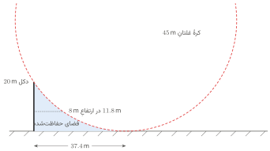
مثال 26.33 (دکل یا سیمِ محافظ؟) پرسش. دکلِ 20 m با کرهٔ 45 m چه شعاعی را در زمین و در ارتفاعِ تجهیزات (8 m) میپوشاند؟ پستِ 7,000 m² چند دکلِ تنها میخواهد؟
پاسخ. 37.4 m در زمین و 11.8 m در 8 m؛ هر دکل حدودِ 438 m² و حدودِ ۱۶ دکلِ تنها.
تفسیر. پوششِ هر دکلِ تنها در ارتفاعِ تجهیزات کوچک است؛ ولی میانِ دو دکلِ نزدیک، کره پایینتر نمیرود و پوشش بسیار بیشتر است، و سیمِ محافظِ کشیده میانِ دکلها کلِ محوطه را با چند دکل میپوشاند. شعاعِ 45 m آموزشی است (A-334). وارسی: \(\sqrt{20 \times 70} = 37.4\) و \(37.4 - \sqrt{8 \times 82} = 11.8\).
26.4.4 برقگیر و وسیلهٔ حفاظت در برابرِ ضربه
ایده. صاعقهای که به خط میخورد یا نزدیکش فرود میآید موجِ ولتاژ میسازد که با سرعتی نزدیکِ نور در خط پیش میرود. برقگیر (surge arrester، از اکسیدِ فلز) در ولتاژِ عادی تقریباً عایق است و در ولتاژِ ضربه رسانا میشود و ولتاژ را به ولتاژِ باقیماندهاش (\(U_\text{res}\)) محدود میکند. حاشیهٔ حفاظت نسبتِ تحملِ ضربهٔ تجهیز (BIL) به این ولتاژ است:
surge arrester protective margin (teaching values):
equipment withstand (lightning impulse) kV arrester residual kV margin
650 330 1.97
650 400 1.62
550 400 1.38
the margin must also cover the voltage rise along the lead
and the distance from arrester to equipment - so arresters
sit at the line entrance and next to each transformer; the
insulation levels and the arrester come from the insulation
coordination study, not from this tableفاصله مهم است. موج پس از برقگیر تا تجهیز میرود، از تجهیز بازمیتابد و ولتاژ در تجهیز بالاتر از ولتاژِ برقگیر میشود. برآوردِ آموزشیِ موجِ رونده:
\[ U_\text{eq} \approx U_\text{res} + \frac{2 S\,(dU/dt)}{v} \tag{26.17}\]
با \(S\) فاصله (طولِ سیمهای رابط هم جزءِ آن است) و \(v\) سرعتِ موج.
arrester to equipment distance (travelling wave, teaching):
residual 330 kV, front 1000 kV/us, wave speed 300 m/us, withstand 650 kV
distance m voltage at equipment kV margin
5 363 1.79
15 430 1.51
30 530 1.23
40 597 1.09
for a margin of 1.2 the arrester must be within 32 m of the
transformer bushing (lead lengths count as distance): one
reason arresters are mounted on or beside the transformerمثال 26.34 (برقگیر روی ترانسفورماتور) پرسش. با ولتاژِ باقیماندهٔ 330 kV، شیبِ 1,000 kV/µs و تحملِ 650 kV، حاشیه در 15 و 40 m چیست؟ برای حاشیهٔ 1.2 بیشینهٔ فاصله چقدر است؟
پاسخ. 1.51 در 15 m و 1.09 در 40 m؛ بیشینهٔ فاصله حدودِ 32 m.
تفسیر. حاشیهای که روی کاغذ 1.97 است با فاصلهٔ چهل متری تقریباً از میان میرود. برای همین برقگیرها در ورودیِ خط و کنارِ هر ترانسفورماتور، با کوتاهترین سیمِ زمین، نصب میشوند. سطحهای عایقی و برقگیر از مطالعهٔ هماهنگیِ عایقی میآیند، نه از این جدول. وارسی: \((650/1.2 - 330) \times 300/2{,}000 = 31.7\,\text{m}\).
زمینکردن برقگیر را هم تعیین میکند. برقگیر باید ولتاژِ پیوسته و اضافهولتاژِ موقت (TOV) را تحمل کند؛ در خطای زمین، فازهای سالم به سوی ولتاژِ خط میروند (بخش 26.2.3):
arrester voltage against the earthing method (33 kV system):
normal phase-to-earth voltage 20.8 kV (Um 36 kV)
during an earth fault the healthy phases rise towards 36 kV
earthing overvoltage lasts continuous rating residual
resistance, cleared about 2 s 20.8 kV 58 kV
unearthed, not cleared hours 36.0 kV 101 kV
(residual taken as 2.8 x the continuous rating, teaching)
a short overvoltage is met by the arrester's temporary
rating; one lasting hours needs a continuous rating at line
voltage - a larger arrester with a higher residual and less
margin to a 170 kV impulse level (2.9 against 1.7)
the earthing decision of lesson B fixes the arresters tooمثال 26.35 (برقگیرِ شبکهٔ زمیننشده بزرگتر است) پرسش. در 33 kV اگر خطای زمین در حدودِ 2 s رفع شود و اگر ساعتها بماند، رتبهٔ پیوستهٔ برقگیر و حاشیه با BIL 170 kV چه میشود؟
پاسخ. رفعشده: 20.8 kV پیوسته، باقیمانده حدودِ 58 kV، حاشیه 2.9. رفعنشده: 36 kV، حدودِ 101 kV، حاشیه 1.7.
تفسیر. اضافهولتاژِ کوتاه با رتبهٔ موقتِ برقگیر پوشیده میشود؛ اضافهولتاژِ چندساعته (شبکهٔ زمیننشده) رتبهٔ پیوسته در ولتاژِ خط میخواهد، یعنی برقگیرِ بزرگتر با حاشیهٔ کمتر. تصمیمِ زمینکردن در بخش 26.3.3 برقگیرها را هم تعیین کرد. نسبتِ 2.8 آموزشی است. وارسی: \(170/58.2 = 2.92\) و \(170/100.8 = 1.69\).
ولتاژِ القایی در آرایهٔ خورشیدی. صاعقهٔ نزدیک بیبرخوردِ مستقیم هم در حلقههای رسانا ولتاژ القا میکند. برای حلقهٔ کوچکی با مساحتِ \(A\) در فاصلهٔ \(d\) از کانالِ صاعقه:
\[ U \approx \frac{\mu_0 A}{2\pi d}\,\frac{di}{dt} \tag{26.18}\]
voltage induced in a PV string loop by a strike 50 m away
(di/dt 10 kA per microsecond, teaching):
routing of + and - loop m2 induced V
returned 2 m apart along 28.6 m 57.2 2,288
returned 0.3 m apart 8.6 344
bundled together 1.4 56
the loop area sets the voltage: running the plus and minus
cables together is the cheapest surge measure; DC surge
protective devices at the inverter (and combiner) take the
rest; the cable layout of ch 24 and the SPDs of the PV
design are checked togetherمثال 26.36 (مثبت و منفی کنارِ هم) پرسش. حلقهٔ رشتهای که کابلِ برگشتش 2 m دورتر میرود (طولِ 28.6 m) و حلقهٔ رشتهای با کابلهای کنارِ هم، در صاعقهای در 50 m با 10 kA/µs، چه ولتاژی میگیرند؟
پاسخ. حدودِ 2,288 V در برابرِ 56 V.
تفسیر. مساحتِ حلقه ولتاژ را تعیین میکند؛ بردنِ کابلِ مثبت و منفی کنارِ هم ارزانترین سنجهٔ ضربه است و در چیدمانِ کابلها (فصلِ ۲۴) تصمیم گرفته میشود. وسیلههای حفاظت در برابرِ ضربه (SPD) در اینورتر و جعبهتقسیم باقی را میگیرند. وارسی: \(2 \times 10^{-7} \times 57.2/50 \times 10^{10} = 2{,}288\).
26.4.5 بازرسی، آزمون و نگهداریِ زمین و صاعقه
ایده. سامانهٔ زمین و صاعقه زیرِ خاک و درونِ پرهها پنهان است و با زمان خراب میشود: خوردگی، اتصالهای شل، سرقتِ مس، آسیبِ صاعقه به گیرندهها. چیزی که دیده نمیشود باید سنجیده شود:
| مورد | هدف | زمان | سند |
|---|---|---|---|
| مقاومتِ شبکهٔ زمینِ پست | تأییدِ فرضِ طراحی | پس از ساخت و دورهای | گزارشِ آزمون |
| پیوستگیِ پیوندها | هر بدنه به شبکه وصل است | پس از ساخت و هر تغییر | فهرستِ وارسی |
| گیرندهها و رساناهای پره | مسیرِ صاعقه سالم است | بازرسیِ دورهای و پس از طوفان | گزارشِ بازرسیِ پره |
| شمارنده و وضعیتِ برقگیر | برقگیرِ آسیبدیده پیدا شود | دورهای | سابقهٔ برقگیر |
| SPDها | نشانگرِ پایانِ عمر | دورهای | فهرستِ وارسی |
| حصار و پیوندِ آن | ولتاژِ تماسِ بیرون در حد است | پس از ساخت و تغییر | گزارش |
روشهای اندازهگیری (مثلاً سنجشِ مقاومتِ زمین با الکترودهای کمکی) ابزار، فاصلهها و احتیاطهای خودشان را دارند و کارِ کارکنانِ آموزشدیده با روالهای تأییدشدهاند؛ این کتاب فقط هدف و سند را میآورد.
- مساحتِ جمعآوریِ دکلِ 120 m را حساب کنید.
- با \(N_\text{g} = 4\) و مساحتِ 0.4 km² چند برخورد در سال؟
- چرا شمارِ برخوردها در توربین زیاد است و چه چیزی آن را تحملپذیر میکند؟
- ناحیههای LPZ 0A و LPZ 1 چه فرقی دارند؟
- شعاعِ حفاظت در زمین برای دکلِ 15 m با کرهٔ 30 m؟
- چرا دو دکلِ نزدیک بیشتر از دو برابرِ یک دکل میپوشانند؟
- ولتاژ در تجهیز با برقگیرِ 280 kV، فاصلهٔ 20 m و 800 kV/µs؟
- چرا برقگیرِ شبکهٔ زمیننشده بزرگتر است؟
- ولتاژِ القاییِ حلقهٔ 20 m² در 100 m با 20 kA/µs؟
- سه موردِ بازرسیِ دورهایِ زمین و صاعقه را نام ببرید.
26.4.6 حفاظتِ مدارهای درونِ نیروگاه
ایده. تا اینجا حفاظتِ فیدرها، ورودیها و ترانسفورماتورِ اصلی را دیدیم. ولی بیشترِ مدارهای نیروگاه کوچکترند: ترانسفورماتورِ واحدِ هر توربین، رشتههای خورشیدی، تابلوی 400 V خدماتِ ایستگاه، مدارهای نهایی و باتریِ کنترل. هر کدام قاعدهٔ خودش را دارد، و در هر کدام زمینکردن و حفاظت به هم گره خوردهاند.
ترانسفورماتورِ واحد. کلیدِ 33 kV ترانسفورماتورِ واحد باید خطای سمتِ HV را فوراً قطع کند، خطای LV را به کلیدِ LV توربین بسپارد و با جریانِ هجومی قطع نکند. پس پلهٔ آنی (50) در پنجرهای میانِ بزرگترینِ «خطای LV و هجوم» و کوچکترین خطای HV مینشیند:
\[ 1.3\,\max\left(I_\text{LV}, I_\text{inrush}\right) < I_{>>} < \frac{I_\text{HV,min}}{1.5} \tag{26.19}\]
unit transformer =WS1-1-T1 (5.6 MVA, 7 %) at its 33 kV breaker:
rated current 98 A; LV fault seen at 33 kV 1,400 A; inrush ~12 x = 1,176 A
overcurrent (51): pickup 1.3 x rated = 127 A, graded under the feeder
instantaneous (50): 1.3 x the larger of the LV fault and the
inrush: 1,820 A, below the smallest HV fault at the turbine (4,680 A)
window holds: yes (with 1.5 margin on the HV fault: 3,120 A)
so an HV fault in the turbine's transformer trips at once,
an LV fault is left to the turbine's own LV breaker first,
and the inrush on energising does not trip anything
(a fuse for 5.6 MVA at 33 kV is at the edge of fuse ranges;
ch 23 chose a breaker for the wind units)مثال 26.37 (پنجرهٔ پلهٔ آنی) پرسش. برای ترانسفورماتورِ 5.6 MVA با امپدانسِ 7 %، پلهٔ آنی کجا مینشیند و پنجره برقرار است؟
پاسخ. کفِ پنجره \(1.3 \times 1{,}400 = 1{,}820\,\text{A}\) (خطای LV از هجومِ 1,176 A بزرگتر است)؛ سقف \(4{,}680/1.5 = 3{,}120\,\text{A}\): پنجره برقرار است.
تفسیر. خطای HV در ترانسفورماتورِ توربین فوراً قطع میشود، خطای LV اول به کلیدِ خودِ توربین میرسد، و هجوم هیچ چیز را قطع نمیکند. فیوز برای 5.6 MVA در 33 kV در لبهٔ بازهٔ فیوزهاست؛ فصلِ ۲۳ برای واحدهای بادی کلید را برگزید. وارسی: \(5.6/(\sqrt{3} \times 33) = 98\,\text{A}\) و \(98/0.07 = 1{,}400\,\text{A}\).
فیوزِ رشتهٔ خورشیدی. وقتی بیست رشته موازیاند و یکی خطا دارد، نوزده تای دیگر جریانشان را وارونه از رشتهٔ معیوب میرانند. اگر این جریان از رتبهٔ جریانِ وارونهٔ ماژول بیشتر باشد، فیوز لازم است؛ و فیوز باید هم در آفتاب نسوزد و هم از ماژول محافظت کند. قاعدهٔ آموزشیِ کفِ پنجره همان فصلِ ۲۴ است (\(1.5\,I_\text{sc}\)):
PV string fuses (teaching rules):
20 strings in parallel; a faulted string can receive the others' current:
(n - 1) x Isc = 19 x 13.98 = 266 A (with 1.25 for high irradiance 332 A)
module reverse-current rating 25 A -> fuses needed: yes
fuse window: at least 1.5 x Isc = 21.0 A (it must not blow
in sun; ch 24's rule), at most 25 A (it must protect the module)
-> a 25 A gPV fuse in each pole fits, barely: the window is
narrow, so the fuse curve and the module's rating are
checked together; with two strings no fuse is needed
(no for n = 2)مثال 26.38 (پنجرهای به پهنای چهار آمپر) پرسش. با Isc برابرِ 13.98 A و رتبهٔ وارونهٔ 25 A، فیوز لازم است و کدام مینشیند؟
پاسخ. \((20 - 1) \times 13.98 = 266\,\text{A} > 25\,\text{A}\): لازم است. پنجره 21.0 تا 25 A؛ فیوزِ gPV 25 A در هر قطب، بهسختی، جا میشود. با دو رشته فیوز لازم نیست.
تفسیر. پنجره تنگ است؛ پس منحنیِ فیوز و رتبهٔ ماژول با هم وارسی میشوند و قاعدهٔ واقعی از دادهٔ سازنده و استانداردِ مربوط میآید. وارسی: \(1.5 \times 13.98 = 20.97\).
خطایی که از جریان پنهان است. رشتهٔ خورشیدی منبعِ جریانِ محدود است: جریانِ اتصالِ کوتاهش فقط 1.07 برابرِ جریانِ کار است:
why a DC array fault hides from overcurrent devices:
a string works at Imp 13.11 A and cannot give more than Isc 13.98 A:
its short-circuit current is only 1.07 x its working current
a fault between two strings, or an arc in a connector, may
carry less than the working current; no fuse sees it
so the array is protected by other means: insulation
monitoring of the floating array, arc-fault detection in
the inverter (where offered), and good connectors fitted by
trained hands - the faults are prevented and found, not
cleared by currentمقاومتِ عایقِ آرایهٔ شناور. آرایهٔ خورشیدیِ زمیننشده (شناور) با یک خطای زمین جریانِ کمی میراند؛ آنچه آن را نشان میدهد پایشِ عایق است. ولی صدها رشتهٔ موازی مقاومتِ عایقِ کل را پایین میآورند:
\[ R_\text{block} = \frac{R_\text{string}}{n} \tag{26.20}\]
insulation resistance of a floating PV block (teaching):
420 strings in parallel to earth (21 combiners x 20)
per string MOhm block kOhm
40 95.2
20 47.6
2 4.8
a healthy large block reads tens of kOhm; on a wet morning
every string drops together and the inverter may refuse to
start until it dries: the inverter's threshold must suit
the block size (the maker's setting)
a single earth fault on a floating array drives little
current - it is an alarm, found and repaired before a
second fault on the other pole makes a real short circuitمثال 26.39 (صبحِ مرطوب) پرسش. با ۴۲۰ رشته و 20 MΩ هر رشته، مقاومتِ عایقِ بلوک چیست و در صبحِ مرطوب (2 MΩ) چه؟
پاسخ. 47.6 kΩ و 4.8 kΩ.
تفسیر. همهٔ رشتهها با هم مرطوب میشوند؛ اینورتر ممکن است تا خشک شدن روشن نشود. آستانهٔ اینورتر باید با اندازهٔ بلوک بخواند (تنظیمِ سازنده). یک خطای زمین روی آرایهٔ شناور هشدار است که پیش از خطای دوم روی قطبِ دیگر، که اتصالِ کوتاهِ واقعی است، پیدا و تعمیر میشود. وارسی: \(20{,}000/420 = 47.6\,\text{k}\Omega\).
تابلوی 400 V خدماتِ ایستگاه. گزینشپذیری میانِ کلیدِ اصلی و کلیدهای خروجی با جریان بهتنهایی در ترازِ کاملِ خطای تابلو به دست نمیآید:
400 V station-service board: main 400 A, outgoing 32 A (type C):
device instantaneous from fault at board 7.9 kA
outgoing 32 A 320 A trips instantly
main 400 A 4,000 A ALSO trips instantly
by current alone the two are not selective at the board's
full fault level; selectivity comes from the energy (I2t)
let through by the small device being below the large
one's operating energy (makers' selectivity tables) or a
short delay on the main
far from the board the fault is smaller:
10 m of 4 mm2: 1,643 A -> outgoing instant; main stays closed
30 m of 4 mm2: 639 A -> outgoing instant; main stays closed
60 m of 4 mm2: 333 A -> outgoing instant; main stays closedمثال 26.40 (هر دو با هم قطع میکنند) پرسش. با خطای 7.9 kA روی تابلو، کلیدِ خروجیِ 32 A و اصلیِ 400 A گزینشپذیرند؟
پاسخ. نه با جریان: هر دو آنی قطع میکنند. گزینشپذیری از انرژیِ عبوری (\(I^2t\)) کلیدِ کوچک زیرِ انرژیِ عملکردِ کلیدِ بزرگ (جدولهای گزینشپذیریِ سازندگان) یا تأخیرِ کوتاه در کلیدِ اصلی میآید. دورتر از تابلو، با 10 m کابلِ 4 mm²، خطا 1,643 A است و فقط کلیدِ خروجی قطع میکند.
تفسیر. گزینشپذیری در ولتاژِ پایین یک ادعای سازنده است که با جدولِ ترکیبِ همان دو کلید ثابت میشود، نه با منحنیهای جداگانه. وارسی: \(10 \times 32 = 320\,\text{A}\) و \(10 \times 400 = 4{,}000\,\text{A}\)، هر دو زیرِ 7.9 kA.
امپدانسِ حلقهٔ خطا. در مدارِ نهایی، کلید باید در زمانی که قاعدههای سیمکشی میخواهند قطع کند؛ این شرط طولِ کابل را محدود میکند: \(Z_\text{s}\,I_\text{a} \le U_0\):
loop-impedance limit of a final circuit (concept, teaching):
the device must disconnect within the time the wiring
rules require: Zs x Ia <= U0, with Ia the current that
trips it in that time (type C 32 A: 10 x 32 = 320 A)
Zs max = 230 / 320 = 0.72 ohm; source part 0.03 ohm
cable mm2 loop ohm per m longest run m
2.5 0.0176 39
4.0 0.0110 63
6.0 0.0074 93
a long run to a remote load (a gate, a weather mast, a
pump) may need a larger cable, an RCD, or a smaller device:
the protection sets the cable as much as the load doesمثال 26.41 (پمپِ دور) پرسش. با کلیدِ 32 A تیپ C و منبعِ 0.03 Ω، بلندترین کابلِ 2.5 mm² و 6 mm² چند متر است؟
پاسخ. 39 m و 93 m.
تفسیر. بارِ دور (درِ ورودی، دکلِ هواشناسی، پمپ) ممکن است کابلِ بزرگتر، کلیدِ جریانِ باقیمانده یا کلیدِ کوچکتر بخواهد: حفاظت به اندازهٔ بار کابل را تعیین میکند. عددِ زمانِ قطع و روشِ وارسی از قاعدههای سیمکشیِ محل است. وارسی: \((0.72 - 0.03)/0.0176 = 39\).
حفاظتِ درونِ مبدلها. توربین، اینورتر و PCS باتری حفاظتِ خودشان را دارند و تنظیمهایش مالِ سازنده است؛ ولی در دو جا به حفاظتِ نیروگاه میرسد:
protection inside the converters (the makers' settings):
wind converter DC-link chopper, crowbar or blocking, AC and DC breakers
PV inverter DC input fuses/switches, AC breaker, insulation check
battery PCS DC breakers per rack (ch 19), AC breaker, contactors
all three own voltage, frequency and current limits
these settings are the makers', but they meet the plant's at
two places: they must not trip inside the ride-through
envelope (lesson B), and their fault current feeds the
study - so the makers' setting lists are plant documentsفهرستِ تنظیمهای سازنده سندِ نیروگاه است: باید درونِ پوشِ عبور از خطا قطع نکنند (بخش 26.3.5) و جریانِ خطایشان به مطالعه برود (بخش 26.3.4).
- پلهٔ آنیِ ترانسفورماتورِ واحد فقط با هجوم تنظیم شده و خطای LV فراموش شده است.
- فیوزِ رشته فقط با جریانِ کار انتخاب شده، بیسقفِ رتبهٔ وارونهٔ ماژول.
- خطای آرایهٔ خورشیدی با حفاظتِ جریانِ زیاد «پوششداده» فرض شده است.
- گزینشپذیریِ LV از دو منحنیِ جدا نتیجه گرفته شده، نه از جدولِ ترکیبِ سازنده.
- چرا کفِ پنجرهٔ پلهٔ آنی بزرگترینِ خطای LV و هجوم است؟
- با ده رشتهٔ موازی، فیوز لازم است؟
- چرا رشتهٔ خورشیدی خطای خودش را با جریان نشان نمیدهد؟
- مقاومتِ عایقِ ۶۰۰ رشته با 30 MΩ؟
- بلندترین کابلِ 4 mm² برای کلیدِ 20 A تیپ C؟
- فهرستِ تنظیمهای اینورتر کجا به حفاظتِ نیروگاه میرسد؟
26.4.7 اندازهگیریِ خاک و الکترود؛ گرمای رسانای صاعقه
بررسیِ خاک به روشِ ونر. چهار کاوشگر با فاصلهٔ برابرِ \(a\) در یک خط کوبیده میشوند؛ جریان از دو کاوشگرِ بیرونی و ولتاژ میانِ دو کاوشگرِ درونی سنجیده میشود. مقاومتِ ویژهٔ ظاهری:
\[ \rho_\text{a} = 2\pi\,a\,R \tag{26.21}\]
با بزرگ شدنِ \(a\) جریان عمیقتر میرود؛ پس تغییرِ \(\rho_\text{a}\) با فاصله لایههای خاک را نشان میدهد:
Wenner soil survey: four probes a metres apart, rho_a = 2 pi a R
(teaching readings for the substation plot, U-098)
spacing a m reading R ohm apparent rho ohm m
1 31.80 200
2 14.30 180
4 5.10 128
8 2.40 121
16 1.55 156
32 0.82 165
near the surface about 200 ohm m, falling to 121 at 4-8 m
spacing and rising again to 165 at 32 m: a dry top layer,
a wetter middle layer and denser ground below - three
layers that a fitted soil model describes, not one
average; the grid design (lesson C) uses the model, and
the survey is repeated in the dry seasonمثال 26.42 (سه لایه، نه یک عدد) پرسش. از شش قرائت، مقاومتِ ویژهٔ ظاهری در هر فاصله و ساختارِ خاک را بخوانید.
پاسخ. حدودِ 200، 180، 128، 121، 156 و 165 Ω·m: لایهٔ خشکِ بالایی، لایهٔ میانیِ مرطوبتر و زمینِ متراکمتر در زیر.
تفسیر. طراحیِ شبکهٔ زمین (بخش 26.4.1) با مدلِ برازششدهٔ چندلایه انجام میشود، نه با میانگین؛ بررسی در فصلِ خشک تکرار میشود. این همان شاهدِ U-098 است. وارسی: \(2\pi \times 4 \times 5.1 = 128\).
آزمونِ افتِ پتانسیل. مقاومتِ الکترود را با جریانی میانِ الکترود و یک کاوشگرِ جریان در فاصلهٔ \(d\) و ولتاژی میانِ الکترود و یک کاوشگرِ ولتاژ در فاصلهٔ \(x\) میسنجند. با مدلِ نیمکره، کاوشگرِ جریان هم پتانسیلِ خودش را میسازد:
\[ R(x) = \frac{\rho}{2\pi}\left(\frac{1}{a} - \frac{1}{d} - \frac{1}{x} + \frac{1}{d - x}\right) \tag{26.22}\]
قرائت وقتی برابرِ مقدارِ واقعیِ \(\rho/(2\pi a)\) است که \(-1/d - 1/x + 1/(d-x) = 0\)؛ یعنی \(x^2 + x\,d - d^2 = 0\) و \(x = d(\sqrt{5} - 1)/2 = 0.618\,d\):
def fop_reading(x: float, d: float, a: float, rho: float) -> float:
"""Apparent resistance of a hemispherical electrode (radius a) read
with the current probe at d and the potential probe at x (all m):
(V_electrode - V_probe) / I, the current probe carrying -I."""
return rho / (2 * math.pi) * (1 / a - 1 / d - 1 / x + 1 / (d - x))fall-of-potential test of an earth electrode (hemisphere model):
rho 100 ohm m, electrode radius 1 m, current probe at 100 m;
true resistance rho / 2 pi a = 15.92 ohm
potential probe at % of d reading ohm
20 15.16
40 15.62
50 15.76
60 15.89
62 15.92
70 16.06
80 16.35
90 17.17
the reading equals the true value at 61.8 % of the distance:
the rule of 61.8 %; the readings must also flatten around
it - a curve without a plateau means the probes are too
close for the size of the grid; a large substation grid
needs current leads hundreds of metres long, and the
test is planned with the transferred-potential hazard
in mind (qualified staff, the owner's rules)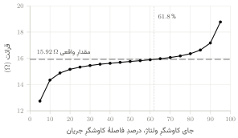
مثال 26.43 (قاعدهٔ ۶۱٫۸ درصد) پرسش. با 100 Ω·m، الکترودِ 1 m و کاوشگرِ جریان در 100 m، قرائت در کجا برابرِ مقدارِ واقعیِ 15.92 Ω است؟
پاسخ. در 61.8 % فاصله؛ در 20 % قرائت 15.16 و در 90 % 17.17 Ω است.
تفسیر. قرائتها باید در اطرافِ این نقطه هموار شوند؛ منحنیِ بیفلات یعنی کاوشگرها برای اندازهٔ شبکه نزدیکاند. شبکهٔ بزرگِ پست سیمهای جریانِ صدها متری میخواهد، و آزمون با خطرِ پتانسیلِ انتقالی برنامهریزی میشود: کارکنانِ صلاحیتدار و قاعدههای مالک. وارسی: \(0.618^2 + 0.618 - 1 = 0\).
گرمای رسانای پایینبرِ صاعقه. یک ضربه انرژیِ ویژهای (\(W/R\)، ژول بر اهم) در رسانا رها میکند؛ گرمایش بیدررو با مجذورِ مقطع کم میشود: \(\Delta T \approx (W/R)\,\rho/(S^2 \gamma c)\):
heating of a copper lightning down conductor by one stroke
(teaching specific energy W/R = 10 MJ per ohm; adiabatic,
dT ~ (W/R) rho / (S^2 gamma c))
section mm2 temperature rise K
16 199
25 82
35 42
50 20
70 10
the rise falls with the square of the section: small
conductors overheat, 50 mm2 copper stays moderate; the
turbine's down conductors, receptors and bearing bypasses
are the maker's design to the turbine lightning standard
(STD-125), proved by tests on blade samplesمثال 26.44 (مقطعِ دو برابر، گرمای یکچهارم) پرسش. با انرژیِ ویژهٔ آموزشیِ 10 MJ/Ω، رسانای مسیِ 16 و 50 mm² چقدر گرم میشوند؟
پاسخ. حدودِ 199 K و 20 K.
تفسیر. رسانای کوچک بیش از حد گرم میشود؛ 50 mm² مس معتدل میماند. رساناهای پایینبر، گیرندهها و کنارگذرهای یاتاقانِ توربین طراحیِ سازنده طبقِ استانداردِ صاعقهٔ توربیناند (STD-125) و با آزمون روی نمونهٔ پره ثابت میشوند؛ انرژیِ ویژهٔ اینجا آموزشی است. وارسی: \((50/16)^2 = 9.8\) و \(199/9.8 = 20\).
- مقاومتِ ویژهٔ ظاهری با \(a = 10\,\text{m}\) و 2.0 Ω؟
- چرا بررسیِ خاک در فصلِ خشک تکرار میشود؟
- با کاوشگرِ جریان در 300 m، کاوشگرِ ولتاژ کجا؟
- گرمای رسانای 35 mm² اگر انرژیِ ویژه نصف شود؟
26.4.8 ساختارِ ریسکِ صاعقه و طولِ سیمِ SPD
ریسکِ صاعقه سه ضربِ ساده است. روشِ استانداردِ ریسک (IEC 62305-2، STD-127) برای هر نوعِ زیان ریسک را از سه عامل میسازد: چند بار ضربه میآید (\(N\))، با چه احتمالی آسیب میزند (\(P\)، که هر اقدامِ حفاظتی کمش میکند) و چه زیانی دارد (\(L\)):
\[ R = N \cdot P \cdot L \tag{26.23}\]
structure of a lightning risk estimate, control building (teaching):
strikes to the building N = Ng x A = 2.0 x 4,810 m2 = 0.0096 a year
risk R = N x P (probability of damage) x L (loss if damaged)
protection P R a year
none 1.00 9.6e-06
LPS of a lower class 0.20 1.9e-06
LPS of a higher class 0.05 4.8e-07
LPS + coordinated SPDs 0.01 9.6e-08
the method multiplies three things: how often (N), how
likely the damage (P, which each measure lowers) and how bad
(L); the result is compared with a tolerable value - the
factors and the tolerable values come from the risk
standard (STD-127) and the project's study with the local
flash density (U-099); this table shows only the structureمثال 26.45 (هر اقدام یک ضریب) پرسش. ساختمانِ کنترلِ 30 × 20 × 8 m با چگالیِ آموزشیِ ۲ ضربه در کیلومترمربع در سال چند ضربه میگیرد و هر اقدام ریسک را چقدر کم میکند؟
پاسخ. حدودِ 0.0096 ضربه در سال؛ ریسکِ آموزشی از 9.6 × 10⁻⁶ بیحفاظت تا 9.6 × 10⁻⁸ با سامانهٔ حفاظت و SPDهای هماهنگ.
تفسیر. ضریبها و مقدارهای تحملپذیر از استاندارد و مطالعهٔ پروژه با چگالیِ آذرخشِ محلی (U-099) میآیند؛ این جدول فقط ساختار را نشان میدهد: کاهشِ ریسک یعنی کاهشِ \(P\) یا \(L\)، چون \(N\) در دستِ ما نیست. وارسی: \(2 \times 4{,}810 \times 10^{-6} = 0.0096\).
طولِ سیمِ SPD. ولتاژی که به تجهیز میرسد سطحِ حفاظتِ SPD بهاضافهٔ افتِ القاییِ سیمهای آن است: \(\Delta U = L\,\mathrm{d}i/\mathrm{d}t\):
surge protective device: the leads add to its protection level
SPD protection level 1.5 kV; lead inductance about 1.0 uH/m;
dU = L di/dt; equipment withstand 4 kV (teaching)
total lead m induced surge 1 kA/us share of a direct strike 10 kA/us
0.3 1.8 kV ok 4.5 kV NO
0.5 2.0 kV ok 6.5 kV NO
1.0 2.5 kV ok 11.5 kV NO
2.0 3.5 kV ok 21.5 kV NO
for induced surges the leads matter little; where part of a
direct strike enters (the zone 0/1 boundary), even 0.3 m of
lead puts the equipment above its withstand - so that SPD
gets the shortest leads (a 'V' connection through its
terminals) and a second stage sits next to the equipment;
the installation check measures the lead lengthمثال 26.46 (سی سانتیمتر هم زیاد است) پرسش. با SPDِ 1.5 kV و سیمِ 0.5 m، ولتاژ روی تجهیز در موجِ القاییِ 1 kA/µs و در سهمی از ضربهٔ مستقیمِ 10 kA/µs چیست؟
پاسخ. 2.0 kV (پذیرفتنی) و 6.5 kV (بالاتر از تحملِ آموزشیِ 4 kV).
تفسیر. در مرزِ ناحیهٔ ۰ و ۱ (بخش 26.4.4) که سهمی از ضربهٔ مستقیم وارد میشود، SPD کوتاهترین سیمها (اتصالِ «V» از راهِ ترمینالهای خودش) را میخواهد و مرحلهٔ دوم کنارِ تجهیز مینشیند. وارسیِ نصب طولِ سیم را اندازه میگیرد. وارسی: \(1.5 + 1.0 \times 0.5 \times 10 = 6.5\).
- ضربههای سالانه به ساختمانِ 20 × 10 × 6 m با \(N_\text{g} = 3\)؟ (سطح را با معادلهٔ 26.15 حساب کنید.)
- کدام عاملِ ریسک در دستِ طراح نیست؟
- بیشترین طولِ سیم برای 4 kV با SPDِ 1.5 kV در 10 kA/µs؟
26.4.9 حلقهٔ رشتهٔ خورشیدی و ولتاژِ القاییِ صاعقه
ایده. صاعقهٔ نزدیک در هر حلقهٔ رسانا ولتاژ القا میکند: \(U = \mu_0 A\,(\mathrm{d}i/\mathrm{d}t)/(2\pi d)\) (معادلهٔ 26.18). رشتهٔ خورشیدی بلند است؛ اگر رساناهای مثبت و منفی جدا بروند، حلقهٔ بزرگی میسازند:
the loop of a PV string and a strike 100 m away (20 kA/us, teaching)
string length about 59 m; induced voltage U = mu0 A di/dt / (2 pi d)
routing of + and - loop m2 induced kV
+ and - on opposite table edges 118.6 4.74
separate, 0.5 m apart 29.6 1.19
together in one tray 3.0 0.12
the induced voltage scales with the loop's area: running the
+ and - conductors of a string side by side shrinks the
loop forty times and keeps the voltage below what the
module and inverter insulation and their SPDs handle; the
layout rule is cheap at design and costly to change laterمثال 26.47 (چهل برابر کوچکتر، با یک سینی) پرسش. رشتهٔ حدودِ 59 m با رساناهای مثبت و منفی در دو لبهٔ میز (2 m فاصله)، با 0.5 m فاصله، و کنارِ هم در یک سینی: ولتاژِ القایی از ضربهٔ 100 m دورتر با 20 kA/µs؟
پاسخ. 4.74، 1.19 و 0.12 kV.
تفسیر. ولتاژ با مساحتِ حلقه بالا میرود؛ بردنِ رساناهای یک رشته کنارِ هم حلقه را چهل برابر کوچک میکند و ولتاژ را زیرِ آنچه عایقِ ماژول و اینورتر و SPDهایشان تحمل میکنند نگه میدارد. این قاعدهٔ چیدمان در طراحی ارزان و پس از ساخت گران است (فصلِ ۱۰ و ۲۴). وارسی: \(118.6/3.0 = 40\).
- ولتاژِ القایی با همان حلقهها در فاصلهٔ 300 m؟
- چرا حلقهٔ رشته را در طراحی، نه پس از ساخت، کوچک میکنیم؟
26.4.10 سهمِ جریانِ صاعقه در سرویسهای ورودی
ایده. اگر صاعقه مستقیم به ساختمانِ کنترل بخورد، جریانش فقط به الکترودِ زمین نمیرود: بخشی از راهِ هر سرویسِ فلزیِ ورودی (کابلِ برق، کابلِ داده، لوله) به بیرون میرود. نخستین مرحلهٔ SPD روی هر سرویس باید سهمِ خودش از جریانِ ضربه را تحمل کند. با فرضِ آموزشیِ «نیمی به زمین، نیمی برابر میانِ سرویسها»:
a direct strike on the control building: where the current goes
stroke 100 kA; teaching assumption: half into the earth
electrode, half shared equally by the metal services entering
services kA per service per conductor (4-wire LV)
1 50.0 12.5
2 25.0 6.2
3 16.7 4.2
4 12.5 3.1
the first SPD stage on each service is rated for its share
of the lightning impulse current, not for the surges that
arrive from far away; a fibre data link carries none of it
(no metal), one reason the plant's networks run on fibre
(ch 34); the real sharing comes from the lightning
standard's method and the building's servicesمثال 26.48 (سه سرویس، هر کدام شانزده کیلوآمپر) پرسش. با ضربهٔ 100 kA و سه سرویسِ فلزی، سهمِ هر سرویس و هر رسانای کابلِ چهارسیمه چیست؟
پاسخ. 16.7 kA برای هر سرویس و حدودِ 4.2 kA برای هر رسانا.
تفسیر. مرحلهٔ نخستِ SPD برای سهمی از جریانِ ضربه رتبه میگیرد، نه برای موجهای دوردست. پیوندِ دادهٔ فیبری (بیفلز) هیچ سهمی نمیبرد: یکی از دلیلهایی که شبکههای نیروگاه روی فیبرند (فصلِ ۳۴). روشِ واقعیِ تقسیم از استانداردِ صاعقه و سرویسهای واقعیِ ساختمان میآید. وارسی: \(100 \times 0.5/3 = 16.7\).
- با چهار سرویس و ضربهٔ 150 kA، سهمِ هر سرویس؟
- چرا جایگزینیِ کابلِ مسیِ داده با فیبر نیازِ SPD را کم میکند؟
26.4.11 سه پله در یک توربین و تابلو روی دیزل
سه پله: کلیدِ LV، رلهٔ واحد، رلهٔ فیدر. مثال 26.37 گفت خطای LV توربین نخست به کلیدِ LV خودش میرسد و پلهٔ زماندارِ واحد زیرِ فیدر هماهنگ است. حالا آن را با عدد وارسی کنیم: خطای LV در 33 kV 1,400 A دیده میشود؛ پلهٔ واحد باید دستکم 0.3 s بالای کلیدِ LV و 0.3 s زیرِ فیدر باشد:
grading at an LV fault in the turbine (seen as 1,400 A at 33 kV):
turbine LV breaker clears in 50 ms (teaching)
unit HV relay: pickup 127 A, TMS for 0.3 s above it: 0.13 -> 0.37 s
feeder relay at the same current: 0.65 s
margin unit -> feeder: 0.28 s (SHORT of 0.3 s)
window for the unit stage at this current:
margins 0.30 s: 0.350 to 0.347 s -> NO window
margins 0.25 s: 0.300 to 0.397 s -> feasible
with 0.3 s on both sides the unit stage has no room: the
feeder answers in 0.65 s, and 0.05 + 0.3 + 0.3 needs more;
a finding of the study - 0.25 s margins justified by
numerical relays and fast breakers (then a definite-time
unit stage at 0.35 s fits), or a slower feeder if lesson
B's grading allows; decided in the coordination reportمثال 26.49 (پنجرهای که بسته میشود) پرسش. با کلیدِ LV در 50 ms و فیدر در 0.65 s، آیا پنجرهای برای پلهٔ واحد با فاصلههای 0.3 s هست؟ با 0.25 s؟
پاسخ. با 0.3 s نه (0.350 تا 0.347 s)؛ با 0.25 s بله (0.300 تا 0.397 s)، و پلهٔ زمانِ ثابتِ 0.35 s جا میشود.
تفسیر. این یافتهٔ مطالعه است: پلهٔ معکوسِ واحد زیرِ فیدر جای کافی ندارد. فاصلهٔ 0.25 s با رلههای عددی و کلیدهای سریع قابلِ دفاع است، یا فیدر کندتر میشود اگر هماهنگیِ بخش 26.3.2 اجازه دهد؛ تصمیم در گزارشِ هماهنگی ثبت میشود. درسِ عمومی: جملهای مانندِ «زیرِ فیدر هماهنگ است» تا با عدد وارسی نشده، فرض است. وارسی: \(0.05 + 0.3 + 0.3 = 0.65 > 0.647\).
تابلوی 400 V روی دیزلِ پشتیبان. وقتی خدماتِ ایستگاه از دیزل تغذیه میشود (فصلِ ۲۳)، امپدانسِ منبع بسیار بزرگتر است و جریانِ خطا با زمان افت میکند (فصلِ ۲۴):
the 400 V board on the standby diesel (ch 24 decrement, teaching)
source fault A source ohm longest 4 mm2 run, 32 A C
grid via SST 7900 0.029 63 m
diesel, 0.1-1 s 866 0.266 41 m
diesel, steady 108 2.130 none (never instantaneous)
on the diesel the source impedance is far larger: the runs
that disconnect in time shrink, and with the steady
current (no field boost) the instantaneous trips never
operate; so the island board needs residual-current
devices on long runs, the diesel's own protection set for
its decrement curve, and a check of every final circuit
with the diesel as the source (ch 23 island mode)مثال 26.50 (شصتوسه متر، چهلویک متر، هیچ) پرسش. بلندترین کابلِ 4 mm² برای کلیدِ 32 A تیپ C با شبکه، با دیزل در 0.1 تا 1 s، و با جریانِ ماندگارِ دیزل؟
پاسخ. 63 m، 41 m، و با جریانِ ماندگارِ 108 A پلهٔ آنی هرگز کار نمیکند.
تفسیر. تابلوی جزیرهای کلیدِ جریانِ باقیمانده روی مسیرهای بلند، حفاظتِ خودِ دیزل با منحنیِ افتِ آن، و وارسیِ هر مدارِ نهایی با دیزل بهعنوانِ منبع را میخواهد (مثال 26.41). وارسی: \((0.719 - 0.266)/0.011 = 41\).
- اگر کلیدِ LV توربین 30 ms باشد، پنجره با فاصلههای 0.3 s باز میشود؟
- چرا با جریانِ ماندگارِ دیزل پلهٔ آنی کار نمیکند؟
- بلندترین کابلِ 6 mm² (0.0074 Ω/m) روی دیزل در 0.1 تا 1 s؟
26.5 ت. تمرینِ شاهد و ایمنی
26.5.1 مثالِ کارشده: یک خطا از دادهٔ شبکه تا پذیرش
ایده. حفاظت یک زنجیرهٔ شاهد است: دادهٔ شبکه به مطالعه، مطالعه به تنظیم، تنظیم به منطقِ رله، منطق به سیمکشیِ تابلو، سیمکشی به آزمون و آزمون به تأیید. اگر یک حلقه سند نداشته باشد، کسی نمیتواند بگوید حفاظتِ نصبشده همان است که طراحی شد. مثالِ کارشدهٔ این فصل یک خطای فرضی روی کابلِ سومِ فیدرِ بادیِ =WS1 را از آغاز تا پایان دنبال میکند:
worked example: faults on =WS1-W3 traced to the evidence
1 network data: Z1 at the fault = j2.98 (bus) + 0.42 + j0.37 (cable) ohm
2 study: three-phase 5.64 kA, line-to-line 4.89 kA, earth 397 A
3 coordination report (LL, the smaller): feeder 0.29 s, incomer 0.68 s,
margin 0.39 s; earth: feeder 0.5 s, standby 1.5 s
4 relay logic: 51 and 51N trip the feeder breaker; 50BF
starts on trip and opens the incomer if current stays
5 panel wiring: CT 600/1 to the relay; trip contact to the
breaker's coil 1, backup to coil 2; DC from the station
battery through its own MCB with supervision
6 tests: factory functional test of the panel; secondary
injection of the settings (purpose: the relay operates
as set); end-to-end check of the trip from relay to
breaker; primary checks of the CT ratio and polarity
7 approval: the setting file, its checksum and the test
records go to the operator; settings at the grid
boundary need the operator's written approval
every step names its record; the methods of the tests and
any work near live equipment belong to qualified staff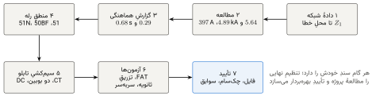
مثال 26.51 (هفت گام، هفت سابقه) پرسش. خطای سهفاز، دوفاز و زمین روی =WS1-W3 چقدر است، کدام برای هماهنگی به کار میرود، و هر گام چه سابقهای میگذارد؟
پاسخ.
- داده: امپدانسِ شبکه تا شینه \(j2.98\,\Omega\) و کابل \(0.42 + j0.37\,\Omega\).
- مطالعه: سهفاز 5.64 kA، دوفاز 4.89 kA، زمین 397 A (با مقاومتِ زمین).
- گزارشِ هماهنگی: با خطای کوچکتر (دوفاز): فیدر 0.29 s، ورودی 0.68 s، فاصله 0.39 s؛ زمین: فیدر 0.5 s و پشتیبانِ مقاومتِ زمین 1.5 s.
- منطقِ رله: 51 و 51N کلیدِ فیدر را قطع میکنند؛ 50BF با قطع آغاز و اگر جریان بماند ورودی را باز میکند.
- سیمکشیِ تابلو: CTِ 600/1 به رله؛ کنتاکتِ قطع به بوبینِ ۱ و پشتیبان به بوبینِ ۲؛ DC از باتریِ ایستگاه با کلید و نظارتِ خودش.
- آزمونها: آزمونِ کارکردیِ کارخانهٔ تابلو؛ تزریقِ ثانویهٔ تنظیمها؛ وارسیِ سربهسرِ قطع از رله تا کلید؛ وارسیِ اولیهٔ نسبت و قطبیتِ CT.
- تأیید: فایلِ تنظیم، چکسامِ آن و سوابقِ آزمون نزدِ بهرهبردار؛ تنظیمهای مرز تأییدِ کتبیِ او را میخواهند.
تفسیر. هماهنگی با خطای کوچکتر وارسی میشود، چون زمانِ رلهها در جریانِ کمتر بلندتر و فاصلهها تنگترند؛ خطای بزرگتر برای رتبهٔ تجهیزات است (فصلِ ۲۴). هر گام سابقهاش را نام میبرد؛ روشِ آزمونها و هر کار نزدیکِ تجهیزاتِ برقدار مالِ کارکنانِ صلاحیتدار است. این مثال فرضی است: طراحی و تنظیمِ نهایی مطالعههای ویژهٔ پروژه و تأیید میخواهد. وارسی: \(4.89/5.64 = 0.867 \approx \sqrt{3}/2\).
این زنجیره چه چیزی باید ثابت شود را نشان میدهد، نه چگونه آزمون انجام شود. آزمونهای ثانویه و اولیه با تجهیزاتِ آزمون، روالهای سازنده و مجوزِ کار انجام میشوند؛ تنظیمِ نهایی از مدلِ شبکهٔ تأییدشده و الزامِ بهرهبردار میآید.
26.5.2 آرکفلش، مرزهای کار و زمانِ قطع
ایده. قوسِ الکتریکی در تابلو گرما، فشار، نور و فلزِ مذاب آزاد میکند. انرژیِ رویداد (incident energy) در فاصلهٔ کار تقریباً با جریانِ قوس و زمانِ قطع بالا میرود؛ پس سریعترین راهِ کاهشِ آن کاهشِ زمانِ قطع است، نه فقط جریان:
\[ E_\text{inc} \propto I_\text{arc}\,t_\text{clear} \tag{26.24}\]
arc-flash: why clearing time matters (concept, no procedure):
incident energy grows roughly with arcing current x time
clearing time s relative energy
1.00 1.00
0.50 0.50
0.20 0.20
0.08 0.08
a fast scheme (bus protection, arc sensors) cuts the energy
in proportion; the arc-flash risk assessment by qualified
engineers sets boundaries and labels; work on or near live
equipment follows the owner's safety rules and permits -
this book does not give live-work proceduresمثال 26.52 (یک ثانیه یا هشتاد میلیثانیه) پرسش. اگر قوس در 1.0 s با پلهٔ زمانیِ ورودی قطع شود و با طرحِ سریع (حفاظتِ شینه یا حسگرِ نور) در 0.08 s، انرژیِ نسبی چقدر کم میشود؟
پاسخ. به حدودِ 8 %، یعنی حدودِ دوازده برابر کمتر.
تفسیر. زمانهای هماهنگیِ بخش 26.3.2 که برای گزینشپذیری لازماند، انرژیِ قوس را بالا میبرند؛ طرحهای سریع (حفاظتِ شینه، حسگرهای قوس، حالتِ نگهداری با پلهٔ آنی) این تضاد را حل میکنند. ارزیابیِ ریسکِ آرکفلش را مهندسانِ صلاحیتدار با روشِ پذیرفته انجام میدهند و مرزها و برچسبها را تعیین میکنند. وارسی: \(0.08/1.0 = 0.08\).
این کتاب روالِ کارِ برقدار نمیدهد. کار روی یا نزدیکِ تجهیزاتِ برقدار، و ورود به مرزهای آرکفلش، فقط با قاعدههای ایمنیِ مالک، مجوزِ کار، کارکنانِ آموزشدیده و تجهیزاتِ حفاظتِ فردیِ تعیینشده در ارزیابی انجام میشود؛ ترجیح همیشه بیبرق کردن و جداسازیِ اثباتشده است (فصلهای ۳۰ و ۴۸ تا ۵۰). آنچه اینجا آمد چرایی است: چرا زمانِ قطع، طرحِ سریع و برچسب مهماند.
26.5.3 سوابقِ نگهداریِ دورهای
ایده. حفاظتی که روزِ برقدار کردن درست بود ممکن است پنج سال بعد درست نباشد: سیمی شل، باتریای ضعیف، تنظیمی عوضشده. سابقهٔ نگهداری نشان میدهد سامانه هنوز همان است که تأیید شد:
periodic maintenance record of the protection (concept):
item: when; record
relay self-supervision alarms:
continuous; SCADA alarm log
trip-circuit supervision:
continuous; alarm, monthly check
secondary injection of protection:
every 4-6 years (teaching); test record
breaker timing and operation:
with the breaker's maintenance; test record
CT and VT checks:
after any work on them; test record
event and disturbance records:
after every trip; analysis note
setting file checksum:
yearly and after changes; configuration record
intervals come from the makers and the owner's maintenance
policy (ch 52); the record shows the system is still the
one that was approvedمثال 26.53 (پیوسته، دورهای، پس از هر رویداد) پرسش. کدام اقلام پیوسته پایش میشوند، کدام دورهای آزموده میشوند و کدام پس از رویداد؟
پاسخ. پیوسته: خودنظارتیِ رله و نظارتِ مدارِ قطع. دورهای: تزریقِ ثانویه (آموزشی هر ۴ تا ۶ سال)، زمانبندیِ کلید، چکسامِ فایل (سالانه). پس از رویداد: سوابقِ رویداد و اغتشاش پس از هر قطع؛ وارسیِ CT و VT پس از هر کار روی آنها.
تفسیر. هشدارِ پیوسته فقط وقتی ارزش دارد که دیده شود: لابِ بخش 26.6.5 نشان میدهد هشدارِ کنارگذاشتهشده چه میکند. فاصلهها از سازندگان و سیاستِ نگهداریِ مالک میآیند (فصلِ ۵۲). وارسی: هر قلم سابقهای دارد.
- چرا هماهنگی با خطای کوچکتر وارسی میشود؟
- هفت گامِ زنجیرهٔ شاهد و سابقهٔ هر کدام را بنویسید.
- انرژیِ نسبیِ قوس با قطع در 0.3 s بهجای 1.0 s؟
- سه راهِ کاهشِ زمانِ قطعِ قوس در تابلو را نام ببرید.
- چرا چکسامِ فایل سالانه وارسی میشود؟
- چرا این کتاب روالِ کارِ برقدار نمیدهد و به جای آن چه میدهد؟
26.5.4 مرزِ آرکفلش و طرحِ سریعِ شینه
مرز با زمانِ قطع کوچک میشود. انرژیِ رویداد با زمانِ قطع بالا میرود (بخش 26.5.2) و با فاصله کم میشود. اگر انرژی تقریباً با \(t/d^x\) تغییر کند، مرزِ آرکفلش فاصلهای است که انرژی در آن به آستانهٔ آسیب (آستانهٔ رایجِ آغازِ سوختگیِ درجهٔ دو، 1.2 cal/cm²) میرسد:
\[ d_\text{B} = d_\text{ref}\left(\frac{E_\text{ref}}{E_\text{B}}\right)^{1/x} \tag{26.25}\]
arc-flash boundary against clearing time (teaching scaling only)
incident energy 8 cal/cm2 at 455 mm for 1.0 s clearing;
energy ~ t / d^x with x = 2 (open air); boundary where the
energy falls to 1.2 cal/cm2 (onset of a second-degree burn)
clearing s energy at 455 mm boundary m
1.00 8.0 1.17
0.50 4.0 0.83
0.20 1.6 0.53
0.08 0.6 0.33
a faster clearing shrinks both the energy and the boundary;
the real values come from the arc-flash assessment by
qualified engineers with an accepted method and the
equipment's data - this table only shows the directionمثال 26.54 (یک متر یا سی سانتیمتر) پرسش. با انرژیِ آموزشیِ 8 cal/cm² در 455 mm برای قطعِ 1.0 s، مرز با قطعِ 1.0، 0.2 و 0.08 s کجاست؟
پاسخ. 1.17، 0.53 و 0.33 m.
تفسیر. قطعِ سریع هم انرژی و هم مرز را کوچک میکند. عددهای واقعی از ارزیابیِ آرکفلش با روشِ پذیرفته و دادهٔ تجهیزات به دستِ مهندسانِ صلاحیتدار میآیند؛ این جدول فقط جهت را نشان میدهد و جای ارزیابی، برچسب و قاعدههای ایمنی را نمیگیرد. وارسی: \(0.455 \times \sqrt{8/1.2} = 1.17\).
طرحِ مسدودسازیِ شینه. خطای شینهٔ 33 kV را ورودی با منحنیِ معکوس پاک میکند: کند، چون باید با فیدرها هماهنگ باشد. طرحِ مسدودسازی (blocking scheme) پلهٔ سریعی به ورودی میدهد که پس از 100 ms قطع میکند، مگر رلهٔ یکی از فیدرها خبر دهد «من هم خطا را میبینم»؛ آنگاه خطا روی همان فیدر است و فیدر آن را پاک میکند:
33 kV bus fault: incomer inverse time against a blocking scheme
bus fault 6.4 kA through the incomer: standard-inverse time 0.55 s
blocking scheme: the incomer's fast stage trips after 100 ms
unless a feeder relay reports 'I see the fault too' (then
the fault is on that feeder and the feeder clears it)
bus fault cleared in 0.10 s + breaker 0.06 s = 0.16 s
arc energy ratio: 0.26 of the inverse-time case
the signal travels over hard wire or IEC 61850 messages; a
failed signal must not block (the scheme fails safe to the
inverse time), and the end-to-end test proves both pathsمثال 26.55 (یکچهارمِ انرژی، بیرلهٔ تازه) پرسش. خطای شینه با 6.4 kA با منحنیِ معکوسِ ورودی و با طرحِ مسدودسازی در چه زمانی پاک میشود و انرژیِ قوس چه نسبتی دارد؟
پاسخ. 0.55 s در برابرِ 0.10 s (با کلید 0.61 و 0.16 s)؛ نسبتِ انرژی حدودِ 0.26.
تفسیر. طرح با رلههای موجود و یک سیگنال (سیمِ سخت یا پیامهای IEC 61850) ساخته میشود. سیگنالِ ازدسترفته نباید ورودی را مسدود کند (طرح به منحنیِ معکوس برمیگردد)، و آزمونِ سربهسر هر دو مسیر را ثابت میکند. همین طرح تضادِ «هماهنگیِ کند» و «آرکفلشِ کم» را در شینه حل میکند (مثال 26.52). وارسی: \(0.16/0.61 = 0.26\).
- مرز با قطعِ 0.5 s و \(x = 1.5\) (به جای ۲)؟
- چرا سیگنالِ ازدسترفته نباید مسدود کند؟
- با خطای شینهٔ 9.8 kA (کوپلرِ بسته)، زمانِ منحنیِ ورودی؟
26.5.5 خرابیِ پنهان، فاصلهٔ آزمون و کارنامهٔ حفاظت
خرابیِ پنهان. خرابیای که چیزی گزارشش نمیکند تا آزمونِ بعدی میماند؛ بهطورِ میانگین نیمِ فاصلهٔ آزمون. ناآمادگیِ حفاظت:
که \(\bar{A}\) ناآمادگی (مکملِ آمادگی)، \(\lambda\) نرخِ خرابیهای پنهان و \(T\) فاصلهٔ آزمون است. خودنظارتیِ رلهٔ عددی بیشترِ خرابیها را فوراً مییابد:
hidden failures against the test interval: unavailability ~ lambda T / 2
failure rate 0.02 per relay-year; self-supervision catches 80 %
test interval y without supervision with supervision
1 1.00% 0.20%
2 2.00% 0.40%
4 4.00% 0.80%
6 6.00% 1.20%
8 8.00% 1.60%
a failure that nothing reports waits for the next test: on
average half an interval; self-supervision finds most of
them at once and lets the interval grow - which is why
numerical relays are tested every 4-6 years (teaching), but
only if their alarms are seen (lab E)کارنامه: اطمینانپذیری و امنیت. از سوابقِ رویدادها دو عدد ساخته میشود: اطمینانپذیری (dependability)، سهمِ خطاهایی که درست قطع شدند، و امنیت (security)، سهمِ قطعهایی که درست بودند:
protection performance from five years of event records (teaching):
faults that needed a trip 40; correct trips 39; failures to trip 1;
unwanted trips (no fault, or the wrong breaker) 2
dependability = correct / required = 97.5%
security = correct / (correct + unwanted) = 95.1%
every relay design trades one for the other: more backup
raises dependability and risks security; the event analysis
of lab E feeds these counts - an unwanted trip is a finding
like a failure to trip, never 'just a nuisance'مثال 26.57 (دو عدد، دو جهت) پرسش. با ۴۰ خطای نیازمندِ قطع، ۳۹ قطعِ درست، یک قطعنکردن و دو قطعِ ناخواسته، اطمینانپذیری و امنیت چیست؟
پاسخ. 97.5 % و 95.1 %.
تفسیر. هر طراحی یکی را با دیگری معامله میکند: پشتیبانِ بیشتر اطمینانپذیری را بالا و امنیت را در خطر میبرد. قطعِ ناخواسته یافته است، مانندِ قطعنکردن، و هرگز «فقط مزاحمت» نیست؛ هر دو از تحلیلِ رویداد (بخش 26.6.5) میآیند. وارسی: \(39/41 = 0.951\).
- ناآمادگی با نرخِ 0.03 و آزمونِ ۴ ساله بی خودنظارتی؟
- اگر خودنظارتی 90 % بگیرد، فاصله برای ناآمادگیِ 1 % با نرخِ 0.02؟
- اطمینانپذیری و امنیت با ۵۰ خطا، ۴۸ قطعِ درست و یک قطعِ ناخواسته؟
26.5.6 خواندنِ نتیجهٔ آزمون: نوارِ پذیرش و قطبیت
نوارِ پذیرش. نتیجهٔ تزریقِ ثانویه با یک نوار داوری میشود، نه با عددِ خالی: دقتِ اعلامشدهٔ رله (بزرگترِ یک درصد و یک زمانِ ثابت) بهاضافهٔ خطای خودِ دستگاهِ آزمون:
\[ t_\text{set} \pm \left[\max\left(p\,t_\text{set},\ t_0\right) + q\,t_\text{set}\right] \tag{26.27}\]
def acceptance_band(t_set: float, rel_pct: float, abs_s: float,
set_pct: float) -> tuple:
"""Accept an operate time within the relay's tolerance (the larger of
a percentage and a fixed time) widened by the test set's own error."""
tol = max(t_set * rel_pct / 100, abs_s) + t_set * set_pct / 100
return t_set - tol, t_set + tolsecondary injection of the feeder relay (SI, TMS 0.10, pickup 0.8 A):
relay tolerance: 5 % or 30 ms, whichever is larger; test set 1 %
multiple expected s band s measured s result
2 1.003 0.943 - 1.063 1.040 pass
5 0.428 0.394 - 0.462 0.455 pass
10 0.297 0.264 - 0.330 0.335 FAIL
20 0.227 0.194 - 0.259 0.198 pass
a reading is judged against a band, not the bare number:
the relay's stated accuracy plus the test set's; one point
outside the band (here at 10 x) is investigated before
anyone touches the setting - wrong multiple injected, a
test lead, or a relay fault; the record keeps all pointsمثال 26.58 (یک نقطه بیرون) پرسش. کدام نقطهٔ آزمون بیرون از نوار است و نخستین کار چیست؟
پاسخ. در ده برابر: انتظار 0.297، نوار 0.264 تا 0.330، اندازه 0.335 s.
تفسیر. پیش از دست زدن به تنظیم، علت بررسی میشود: ضریبِ تزریقشدهٔ نادرست، سیمِ آزمون، یا خرابیِ رله. سابقه همهٔ نقطهها را نگه میدارد، نه فقط آخری را؛ و «تصحیحِ» تنظیم برای عبور از آزمون، تغییرِ بیسابقه است (مثال 26.74). وارسی: چون \(0.05 \times 0.297 = 0.015 < 0.030\)، تلورانس \(0.030 + 0.003 = 0.033\) و نوار \(0.297 \pm 0.033\).
قطبیت: آنچه CTِ وارونه نشان میدهد. وارسیِ زیرِ بارِ دیفرانسیل جریانهای دو سو را میخواند. با سیمکشیِ درست، تفاضل نزدیکِ صفر است؛ با یک CTِ وارونه، تفاضل دو برابرِ بار میشود:
on-load check of the transformer differential (teaching):
plant exporting 20 MW: HV current 87 A, CT 400/1 -> 0.217 A secondary
what the relay shows differential pu bias pu trips?
correct polarity 0.00 0.32 no
one CT reversed 0.63 0.32 YES
with correct wiring the differential reads close to zero; a
reversed CT shows twice the load as 'differential' and, with
pickup 0.2 and slope 0.3, trips once the load passes
0.118 pu (7.4 MVA) - so the first readings are taken at
low load, and the commissioning programme of qualified
staff decides how the trip is supervised meanwhile; the
readings go into the recordمثال 26.59 (هفت مگاولتآمپر) پرسش. با شیبِ 0.3 و راهاندازیِ 0.2، دیفرانسیل با یک CTِ وارونه از چه باری قطع میکند؟
پاسخ. \(2i > 0.2 + 0.3 i\)، یعنی \(i > 0.118\) پریونیت، حدودِ 7.4 MVA.
تفسیر. پس نخستین خواندنها در بارِ کم گرفته میشوند و برنامهٔ راهاندازی، به دستِ کارکنانِ صلاحیتدار، تعیین میکند نظارت بر قطع در این مدت چگونه باشد؛ خواندنها در سابقه میروند (بخش 26.6.4). این کتاب روالِ آن را نمیدهد. وارسی: \(0.2/1.7 = 0.118\).
- نوارِ پذیرش برای زمانِ تنظیمِ 1.5 s با همان تلورانسها؟
- چرا تنظیم را برای عبور از آزمون عوض نمیکنیم؟
- با شیبِ 0.25، دیفرانسیل با CTِ وارونه از چه باری قطع میکند؟
26.5.7 فیوز یا کلید برای ترانسفورماتورِ واحد، و سابقهای که شاهد است
فیوز یا کلید. فیوز ساده و سریع است؛ ولی نباید با جریانِ هجومیِ ترانسفورماتور ذوب شود. با قاعدهٔ آموزشیِ «فیوز در 0.1 s با حدودِ هشت برابرِ رتبهاش ذوب میشود» و هجومِ حدودِ دوازده برابرِ نامی:
fuse or breaker for a unit transformer at 33 kV (teaching rule:
a fuse melts in 0.1 s at about 8 x its rating; inrush ~12 x In
for about 0.1 s must not melt it; teaching top of range 63 A)
unit MVA In A inrush A smallest fuse A within the range?
1.0 17 210 26 yes
2.5 44 525 66 NO
5.5 96 1155 144 NO
for the 5.5 MVA PV units the inrush alone asks for a fuse
above the teaching range: so they also get a breaker
with relay (lesson C's window), as the wind units do -
fuses stay for small transformers such as the station
service; the maker's time-current curves give the answerمثال 26.60 (صدوچهلوچهار آمپر) پرسش. کوچکترین فیوزِ مجاز برای واحدِ خورشیدیِ 5.5 MVA چیست و در بازهٔ آموزشی میگنجد؟
پاسخ. حدودِ 144 A؛ بالاتر از سقفِ آموزشیِ 63 A: نه.
تفسیر. پس واحدهای خورشیدی هم، مانندِ واحدهای بادی، کلید با رله میگیرند (پنجرهٔ مثال 26.37)؛ فیوز برای ترانسفورماتورهای کوچک، مانندِ خدماتِ ایستگاه، میماند. منحنیهای زمان–جریانِ سازنده پاسخِ واقعی را میدهند. این همان چیزی است که بخش 26.4.6 دربارهٔ «لبهٔ بازهٔ فیوزها» گفت، حالا با عدد. وارسی: \(12 \times 96/8 = 144\).
سابقهای که شاهد است. برگهٔ آزمون فقط وقتی شاهد است که کامل باشد: چه رلهای، با چه فایل و نسخهای، با کدام دستگاهِ آزمونِ کالیبره، چه نتیجهای در برابرِ چه نواری، به دستِ چه کسی و با چه گواهی:
REQUIRED = ["relay tag", "setting file and checksum", "firmware version",
"test set and serial", "calibration date of the test set",
"results for every point", "acceptance band", "tester", "witness",
"date", "deviations and their closure"]
def missing(record: dict) -> list:
"""Fields a test record lacks before it can count as evidence."""
return [f for f in REQUIRED if not record.get(f)]is this secondary-injection sheet evidence? (fields of a test record)
relay tag present
setting file and checksum present
firmware version MISSING
test set and serial present
calibration date of the test set MISSING
results for every point present
acceptance band present
tester present
witness MISSING
date present
deviations and their closure present
missing: 3 - firmware version, calibration date of the test set, witness
without the firmware version the test may be of another
relay's logic; without the test set's calibration the
numbers have no anchor; without a witness the operator
may not accept it - and an open deviation means the record
is not closed; the record is evidence only when completeمثال 26.61 (سه جای خالی) پرسش. برگهٔ تزریقِ فیدرِ =WS1 کدام قلمها را ندارد و چرا هر کدام مهم است؟
پاسخ. نسخهٔ فرمافزار، تاریخِ کالیبراسیونِ دستگاهِ آزمون و گواه؛ و یک انحرافِ باز (نقطهٔ دهبرابر، مثال 26.58).
تفسیر. بینسخهٔ فرمافزار ممکن است منطقِ رلهٔ دیگری آزموده شده باشد؛ بیکالیبراسیون عددها پشتوانه ندارند؛ بیگواه بهرهبردار ممکن است نپذیرد؛ و انحرافِ باز یعنی سابقه بسته نیست. این برنامهٔ کوچک همان کاری است که بازبینِ پرونده با چشم میکند (فصلِ ۵۰). وارسی: سه قلمِ «MISSING».
- کوچکترین فیوز برای ترانسفورماتورِ 1.6 MVA با همان قاعده؟
- چرا نسخهٔ فرمافزار جزءِ سابقهٔ آزمون است؟
26.6 ث. حفاظتِ کلکتور و صادرات
26.6.1 ناحیههای حفاظت و همپوشانی
ایده. هر بخشِ شبکهٔ نیروگاه درونِ یک ناحیهٔ حفاظت است: محدودهای که حفاظتش، و فقط حفاظتش، خطای درونِ آن را قطع میکند. مرزِ ناحیه را CTها میسازند. اگر دو ناحیه در یک کلید فقط به هم برسند و همپوشانی نداشته باشند، خطای میانِ CT و کلید ممکن است در «هیچ» ناحیهای نباشد؛ پس ناحیهها روی هم میافتند: هر کلید میانِ CTهای دو ناحیه است.
protection zones of Plant P (overlapping at every breaker):
unit transformer and its cable RMU fuse or breaker, feeder backup
collector feeder cable feeder overcurrent and earth fault
33 kV bus section bus protection or incomer backup
main transformer differential, gas relay, overcurrent backup
132 kV bus bus or transformer HV protection
export line line differential or distance, both ends
grid side utility's protection; transfer trip
zones overlap so no part is unprotected: each breaker sits
between the CTs of two zones; settings and schemes at the
boundary are approved by the operator (U-089)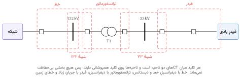
مثال 26.62 (خطای میانِ CT و کلید) پرسش. خطایی میانِ CTِ ورودیِ 33 kV و کلیدِ ورودی رخ میدهد. کدام حفاظت آن را میبیند اگر CTها در دو طرفِ کلید باشند، و اگر هر دو ناحیه از یک CT استفاده کنند؟
پاسخ. با CT در دو طرف، خطا درونِ هر دو ناحیه است (ترانسفورماتور و شینه) و هر دو قطع میکنند؛ با یک CT، خطا ممکن است بیرونِ ناحیهای باشد که باید آن را ببیند و فقط پشتیبانِ کند آن را پاک کند.
تفسیر. همپوشانی کمی گزینشپذیری را فدا میکند (خطای درونِ همپوشانی دو ناحیه را قطع میکند) تا هیچ نقطهٔ بیحفاظتی نماند. طرحها و تنظیمهای مرز را بهرهبردار تأیید میکند (U-089). وارسی: در شکل 26.14 هر کلید میانِ دو ناحیه است.
26.6.2 حفاظتِ خطِ صادرات: دیستانس، دیفرانسیل و انتقالِ قطع
دیستانس. رلهٔ دیستانس امپدانسِ دیدهشده \(Z = U/I\) را با دسترسهای ناحیهها مقایسه میکند (بخش 26.2.5). دسترسهای آموزشی: ناحیهٔ ۱ هشتاد درصدِ خط (آنی)، ناحیهٔ ۲ خط بهاضافهٔ نیمی از خطِ بعد، ناحیهٔ ۳ خط بهاضافهٔ ۱۲۰ درصدِ خطِ بعد (با تأخیر):
def distance_zones(z_line: float, z_next: float) -> dict:
"""Typical teaching reaches: zone 1 80 % of the line, zone 2 the line
plus 50 % of the next, zone 3 the line plus 120 % of the next."""
return {"Z1": 0.8 * z_line, "Z2": z_line + 0.5 * z_next,
"Z3": z_line + 1.2 * z_next}distance zones on the 132 kV export line (teaching reaches):
line 2.95 ohm (7.06 km), next line 8.36 ohm (20 km)
Z1: 2.36 ohm ( 80 % of this line)
Z2: 7.13 ohm ( 242 % of this line)
Z3: 12.98 ohm ( 440 % of this line)
zone 1 trips at once but stops short of the far end (errors
in CTs, VTs, line data); zones 2 and 3 reach further with
delay; a short line makes zone 1 small - line differential
over the fibre in the earth wire is the usual answer, with
distance as backup; the utility approves both ends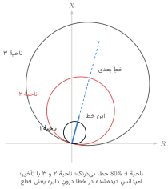
مثال 26.63 (خطِ کوتاه، ناحیهٔ ۱ کوچک) پرسش. با خطِ 7.06 km (2.95 Ω) و خطِ بعدیِ 20 km (8.36 Ω)، دسترسها چیست و چرا دیستانس بهتنهایی برای این خط کافی نیست؟
پاسخ. 2.36، 7.13 و 12.98 Ω. ناحیهٔ ۱ فقط 2.36 Ω است؛ خطای نزدیکِ سرِ دور با تأخیرِ ناحیهٔ ۲ پاک میشود، و خطای میانِ آن دو ممکن است با مقاومتِ قوس از دسترس بیرون بیفتد.
تفسیر. پاسخِ رایج برای خطِ کوتاه دیفرانسیلِ خط روی فیبرِ سیمِ محافظ (فصلِ ۲۴) است که هر خطای درونِ خط را در هر دو سر آنی میبیند، با دیستانس بهعنوانِ پشتیبان. ناحیهٔ ۳ تا عمقِ شبکه میرسد و باید با بهرهبردار هماهنگ شود؛ هر دو سر را او تأیید میکند. وارسی: \(2.95 + 0.5 \times 8.36 = 7.13\).
انتقالِ قطع. برخی خطاها را فقط سرِ شبکه میبیند، و برخی از خرابیهای کلید را فقط با بازکردنِ کلیدِ سرِ دیگر میتوان پاک کرد. انتقالِ قطع (transfer trip) فرمانِ قطع را از راهِ مخابرات میفرستد؛ زمانِ آن جمعِ زمانهای زنجیره است و دسترسپذیریاش به کانالها بسته است:
\[ A_\text{2 ch} = 1 - (1 - A_\text{1})^2 \tag{26.28}\]
communications-dependent intertrip from the grid end (teaching):
relay 20 ms + channel 15 ms + receiver 10 ms + breaker 60 ms = 105 ms
one channel available 99.900%; two independent channels 99.9999%
the requirement (time and availability) comes from the
operator; the channels (fibre in the earth wire, a second
route) and their supervision are part of the scheme, and
the end-to-end test proves the timingمثال 26.64 (دو کانالِ مستقل) پرسش. زمانِ انتقالِ قطع و دسترسپذیریِ یک و دو کانالِ مستقل (99.9 % هر کدام) چیست؟
پاسخ. 105 ms؛ یک کانال 99.900 % و دو کانال 99.9999 %.
تفسیر. فرمولِ دو کانال فقط وقتی درست است که کانالها مستقل باشند: دو فیبر در یک سیمِ محافظ با یک خرابی با هم میروند؛ پس کانالِ دوم مسیرِ دیگری دارد. الزامِ زمان و دسترسپذیری از بهرهبردار است و آزمونِ سربهسر زمان را ثابت میکند. وارسی: \(1 - 0.001^2 = 0.999999\).
26.6.3 خرابیِ کلید و پشتیبانِ محلی
ایده. رله درست کار میکند ولی کلید باز نمیشود. حفاظتِ خرابیِ کلید (50BF) با فرمانِ قطع آغاز میشود؛ اگر پس از زمانِ تنظیمشده جریان هنوز برقرار باشد، کلیدهای مجاور را باز میکند:
breaker-failure timing (teaching):
relay 30 ms + breaker 60 ms = normal clearing 90 ms
if the breaker fails: BF timer 150 ms, then the adjacent breakers (60 ms)
backup clearing 240 ms - the duty the cables and gear must carry (ch 24)
for the line bay the adjacent breaker is at the grid end:
a transfer-trip signal over the telecom link opens itمثال 26.65 (دویستوچهل میلیثانیه) پرسش. زمانِ پاک شدنِ عادی و با خرابیِ کلید چیست، و در بِیِ خط کلیدِ مجاور کجاست؟
پاسخ. عادی 90 ms؛ با خرابی 240 ms (تایمر 150 ms و کلیدهای مجاور 60 ms). در بِیِ خط کلیدِ مجاور در سرِ شبکه است و با انتقالِ قطع باز میشود.
تفسیر. 240 ms وظیفهای است که کابلها و تابلوها باید تحمل کنند (فصلِ ۲۴)؛ تایمر از زمانِ بازشدن و بازنشانیِ کلید و رله با حاشیه ساخته میشود و زمانبندیِ کلید در کارخانه (بخش 26.7) ورودیِ آن است. وارسی: \(30 + 60 + 150 = 240\).
26.6.4 آزمونها، آزمونِ سربهسر و مرزِ تأییدِ تنظیمها
ایده. هر آزمون یک چیز را ثابت میکند و سابقهای میگذارد. آزمونها از کارخانه آغاز میشوند و تا نخستین برقدار کردن ادامه دارند:
protection tests and what each proves (purpose, not procedure):
factory functional test (FAT):
proves the panel does what the schematics say
record: FAT record
CT tests:
proves ratio, polarity, magnetising curve, insulation
record: CT test sheet
secondary injection:
proves each function operates at its setting and time
record: injection record
trip and interlock checks:
proves each output reaches its breaker coil
record: functional record
end-to-end (line ends):
proves both ends act together over the channel
record: joint record
stability check of differential:
proves no trip for a through current
record: test record
first energising observations:
proves relays read the right currents
record: commissioning log
tests on secondary circuits are done by qualified staff
under permits; the energised checks follow the owner's
safety rules (ch 48-50)مرزِ تأیید. چه کسی تنظیم میکند و چه کسی تأیید؟ این مرز پیش از برقدار کردن روی کاغذ میآید:
approved-setting boundary (who sets, who approves; teaching):
33 kV feeders and incomers:
set by owner's engineer; approved by owner
main transformer differential:
set by owner's engineer; approved by owner
132 kV line, plant end:
set by owner, with the operator's data; approved by operator
132 kV line, grid end:
set by operator; approved by operator
transfer trip and anti-islanding:
set by operator's requirement; approved by operator
plant controller limits (ch 20):
set by owner; approved by owner, operator informed
settings that act across the boundary are approved in
writing before energising; the approved files and checksums
are kept with the end-to-end test recordsمثال 26.66 (چهار امضا در مرز) پرسش. کدام تنظیمها تأییدِ بهرهبردار را میخواهند و چه چیزی کنارِ آن نگه داشته میشود؟
پاسخ. خطِ 132 kV در هر دو سر، انتقالِ قطع و ضدِجزیره؛ و حدهای کنترلکنندهٔ نیروگاه با اطلاعِ او. فایلهای تأییدشده و چکسامها کنارِ سوابقِ آزمونِ سربهسر.
تفسیر. تنظیمی که از مرز میگذرد تأییدِ کتبی پیش از برقدار کردن میخواهد؛ این تحویلدادنیِ «مرزِ تنظیمِ تأییدشده» در جدولِ ممیزیِ فصل است. تقسیمِ واقعی در قراردادِ اتصال و قاعدههای بهرهبردار است؛ این جدول آموزشی است. وارسی: هر سطر یک تنظیمکننده و یک تأییدکننده دارد.
- ناحیهها در کلید فقط به هم رسیدهاند و نقطهٔ کورِ میانِ CT و کلید مانده است.
- دو کانالِ انتقالِ قطع در یک مسیر «مستقل» حساب شدهاند.
- تایمرِ خرابیِ کلید بیزمانبندیِ واقعیِ کلید تنظیم شده است.
- آزمونِ سربهسر حذف شده چون «هر سر جدا آزموده شده».
- چرا ناحیههای حفاظت در هر کلید همپوشانی دارند؟
- دسترسهای سه ناحیه برای خطِ 4 Ω و خطِ بعدیِ 10 Ω؟
- چرا خطِ کوتاه دیفرانسیلِ خط میخواهد؟
- دسترسپذیریِ دو کانالِ 99.5 %؟
- زمانِ پاک شدن با خرابیِ کلید اگر تایمر 120 ms باشد؟
- آزمونِ پایداریِ دیفرانسیل چه چیزی را ثابت میکند؟
- کدام تنظیمها را بهرهبردار تأیید میکند؟
26.6.5 آزمایشگاهِ ث: خواندنِ ثبتِ رویدادها پس از یک قطع
ایده. پس از هر قطع، ثبتکنندهها دنبالهٔ رویدادها (sequence of events) را با زمانِ میلیثانیه نگه میدارند: کدام رله آغاز کرد، کی قطع داد، کدام کلید باز شد. خواندنِ این دنباله یعنی مقایسهٔ هر زمان با تنظیمش و پیدا کردنِ آنچه نشد. ثبتِ زیر ساختگی است (A-335)، ساخته برای آموزشِ خواندن:
SOE = [ # time s, device, event (negative time: standing before)
(-1.0, "=WS2-Q1", "TCS coil 2 alarm standing, shelved in SCADA"),
(0.000, "=WS2-Q1-F1", "51N start (earth fault on =WS2)"),
(0.001, "=MV-A-F59N", "59N start (bus neutral voltage)"),
(0.002, "=NER-A-F51N", "standby earth fault start"),
(0.503, "=WS2-Q1-F1", "51N trip"),
(0.504, "=WS2-Q1-F1", "50BF start"),
(0.505, "=WS2-Q1", "trip coil 1 energised"),
(0.655, "=WS2-Q1-F1", "50BF trip to section A"),
(0.660, "=MV-Q0", "open (already open)"),
(0.716, "=T1-Q2", "open"),
(0.718, "=WS2-Q1-F1", "51N reset"),
(0.720, "=NER-A-F51N", "standby earth fault reset"),
(0.722, "=MV-A-F59N", "59N reset"),
]
SET = {"51N delay": 0.50, "BF timer": 0.15}reading the sequence of events (worked):
51N operated after 0.503 s (set 0.5 s): as set
=WS2-Q1 got its trip at 0.505 s but no 'open' follows: FAILED to open
breaker failure tripped at 0.655 s, 0.151 s after start (set 0.15 s)
=T1-Q2 opened at 0.716 s: the fault was cleared by the
incomer, and all of section A was lost (two wind feeders,
PV feeder 3, battery A) instead of one feeder
earth-fault duration 0.72 s - inside the resistor's 10 s
the first line points to the cause: coil 2's supervision
alarm had stood since energising and was shelved - its
circuit was open all along (lesson K's punch item, wrongly
classed B), and coil 1's circuit or the mechanism did not
open the breaker: the backup trip path did not exist
actions: test both coils and the mechanism of =WS2-Q1;
close the punch item; review shelved alarms (ch 20); record
the event and its analysisمثال 26.67 (کلیدی که باز نشد) پرسش. از این دنباله بگویید رله درست کار کرد یا نه، چه چیزی خراب شد، خطا چگونه پاک شد و علت کجاست.
پاسخ. 51N در 0.503 s قطع داد (تنظیم 0.5 s): درست. کلیدِ =WS2-Q1 فرمان گرفت ولی «باز» ثبت نشد: باز نشد. خرابیِ کلید در 0.655 s (0.151 s پس از آغاز، تنظیم 0.15 s) قطع داد و ورودیِ =T1-Q2 در 0.716 s باز شد: کلِ بخشِ A (دو فیدرِ بادی، فیدرِ خورشیدیِ ۳ و باتریِ A) به جای یک فیدر رفت. خطای زمین 0.72 s ماند، درونِ تحملِ 10 s مقاومت.
تفسیر. نخستین سطرِ ثبت علت را نشان میدهد: هشدارِ نظارتِ بوبینِ ۲ از روزِ برقدار کردن ایستاده و کنار گذاشته شده بود؛ مدارِ آن از اول باز بود (قلمِ فهرستِ نواقصِ مثال 26.83 که بهاشتباه ردهٔ B گرفت). بوبینِ ۱ یا سازوکار هم کلید را باز نکرد: مسیرِ قطعِ پشتیبان وجود نداشت. اقدامها: آزمونِ هر دو بوبین و سازوکارِ =WS2-Q1؛ بستنِ قلمِ فهرست؛ بازبینیِ هشدارهای کنارگذاشته (فصلِ ۲۰)؛ ثبتِ رویداد و تحلیلش. وارسی: \(0.655 - 0.504 = 0.151\,\text{s}\).
ساعتها. خواندنِ دنباله فقط وقتی درست است که همهٔ ثبتکنندهها یک زمان داشته باشند:
what a clock error does to the reading:
if the incomer's recorder ran 40 ms slow, its open would read 0.676 s
breaker failure at 0.655 s and the incomer open 0.021 s later:
an opening time shorter than any breaker's - the reader
would suspect the breaker-failure logic, not the clocks
so every recorder takes its time from one source (a
satellite clock with a network time protocol); the record
of time quality is part of the evidence
a check: an event every recorder sees (the fault's start)
must carry the same time in all of themمثال 26.68 (بیستویک میلیثانیه، ناممکن) پرسش. اگر ساعتِ ثبتکنندهٔ ورودی 40 ms عقب بود، خواننده چه میدید و به چه شک میکرد؟
پاسخ. بازشدنِ ورودی در 0.676 s، فقط 21 ms پس از فرمانِ خرابیِ کلید: کوتاهتر از زمانِ بازشدنِ هر کلیدی. خواننده به منطقِ خرابیِ کلید شک میکرد، نه به ساعت.
تفسیر. همهٔ ثبتکنندهها زمان را از یک منبع (ساعتِ ماهوارهای با پروتکلِ زمانِ شبکه) میگیرند و کیفیتِ زمان بخشی از شاهد است (فصلِ ۳۴). وارسیِ ساده: رویدادی که همه میبینند (آغازِ خطا) باید در همه یک زمان داشته باشد. وارسی: \(0.716 - 0.040 = 0.676\).
- چرا «باز» نیامدن پس از فرمانِ قطع مهمترین سطرِ این ثبت است؟
- اگر خرابیِ کلید هم کار نمیکرد، چه کسی خطا را پاک میکرد و کی؟
- چرا هشدارِ ایستادهٔ نظارتِ مدارِ قطع نباید کنار گذاشته شود؟
- چگونه خطای ساعت را از خطای منطق جدا میکنید؟
26.6.6 کانالِ مخابراتی، جریانِ شارژ و نظارتِ VT
عدمِ تقارنِ کانال در دیفرانسیلِ خط. دیفرانسیلِ خط (بخش 26.6.2) جریانِ دو سر را با هم مقایسه میکند؛ نمونههای سرِ دور با تأخیرِ کانال میرسند و رله تأخیر را با میانگینِ رفتوبرگشت تخمین میزند. اگر تأخیرِ دو جهت \(\Delta t\) اختلاف داشته باشد، تخمین \(\Delta t/2\) خطا دارد و جریانِ سرِ دور به اندازهٔ \(\theta = 360 f\,\Delta t/2\) درجه جابهجا میشود. جریانِ تفاضلیِ نادرست:
\[ I_\text{diff} = 2\,I_\text{through}\,\sin\frac{\theta}{2} \tag{26.29}\]
def asymmetry_spill(through: float, dt_ms: float, f: float = 50.0) -> float:
"""Differential current a line differential computes for a through
current when the channel delay differs by dt between the two
directions: the delay, estimated as the mean of the two, is wrong
by dt/2, so the remote current is shifted by 360 f dt/2 degrees."""
angle = math.radians(360 * f * dt_ms / 1e3 / 2)
return through * 2 * math.sin(angle / 2)line differential: the channel's delay differs by dt in the two
directions; through current 437 A (full export), pickup 200 A
asymmetry ms phase error deg false differential A trips?
0.5 4.5 34 no
1.0 9.0 69 no
2.0 18.0 137 no
4.0 36.0 270 YES
a route that changes on the telecom network can add
milliseconds in one direction only: with 4 ms the relay sees
270 A of 'fault' at full export and trips; the cures are
time stamps from a satellite clock at both ends, a fixed
dedicated fibre, and a bias that grows with the through
current - the channel is part of the protectionمثال 26.69 (چهار میلیثانیه، یک قطعِ بیخطا) پرسش. با جریانِ عبوریِ 437 A و راهاندازیِ 200 A، کدام عدمِ تقارن قطعِ نادرست میدهد؟
پاسخ. 4 ms: خطای فاز 36° و جریانِ تفاضلیِ 270 A. با 1 ms فقط 69 A.
تفسیر. مسیری که در شبکهٔ مخابرات عوض میشود میتواند فقط در یک جهت میلیثانیهها بیفزاید. چارهها: برچسبِ زمان از ساعتِ ماهوارهای در هر دو سر، فیبرِ اختصاصیِ ثابت، و مهاری که با جریانِ عبوری بالا میرود. کانال بخشی از حفاظت است و در آزمونِ سربهسر سنجیده میشود. وارسی: \(2 \times 437 \times \sin 18^\circ = 270\).
جریانِ شارژ. جریانِ شارژ از یک سر وارد میشود و از سرِ دیگر بیرون نمیآید؛ دیفرانسیل آن را خطا میبیند:
charging current seen by a line differential (no load, teaching):
circuit charging A % of a 200 A pickup
132 kV overhead line 7 km 1.5 1
132 kV cable 7 km 33.8 17
132 kV cable 20 km 96.6 48
charging current enters at one end and does not leave at the
other: a differential sees it as a fault current; on the
overhead line it is negligible, on a long cable it eats into
the margin and the relay compensates it with the measured
voltage - a setting choice when the export route is cableمثال 26.70 (خطِ هوایی آسوده، کابل نه) پرسش. جریانِ شارژِ خطِ هوایی و کابلِ 7 km و 20 km چند درصدِ راهاندازیِ 200 A است؟
پاسخ. 1 %، 17 % و 48 %.
تفسیر. روی خطِ هوایی ناچیز است؛ کابلِ بلند حاشیه را میخورد و رله آن را با ولتاژِ اندازهگیریشده جبران میکند. اگر مسیرِ صادرات کابل شود (فصلهای ۱۸ و ۲۴)، این یک انتخابِ تنظیم است. وارسی: \(33.8 \times 20/7 = 96.6\).
نظارت بر سوختنِ فیوزِ VT. ولتاژِ ازدسترفته برای رلهٔ دیستانس شبیهِ خطای نزدیک است (ولتاژ صفر، جریان عادی). نظارت آن را با جریان جدا میکند: بیتغییرِ جریان، خطایی نیست:
VT fuse-failure supervision (concept): what the relay sees and does
case voltage current action
VT fuse blown, one phase V2 high I2 low block 21/67, alarm
real earth fault V2 high I2 high allow
all three VT phases lost V all low I unchanged block, alarm
line energised, far end V rising I small allow after delay
a lost VT voltage looks like a close fault to a distance
relay (zero voltage, normal current); the supervision tells
them apart by the current - no current change, no fault;
the logic and its settings are tested like any function- خطای فاز و جریانِ تفاضلی با 3 ms عدمِ تقارن و 437 A؟
- چرا تخمینِ تأخیر از رفتوبرگشت عدمِ تقارن را نمیبیند؟
- جریانِ شارژِ کابلِ 132 kV به طولِ 12 km (به نسبت)؟
- چرا سوختنِ فیوزِ VT برای دیستانس خطرناک است؟
26.6.7 حفاظتِ کابل و شینه: تصویرِ گرمایی، منحنیِ آسیب و دیفرانسیلِ امپدانسِ بالا
تصویرِ گرمایی. حفاظتِ جریانِ زیاد گرمای گذشته را به یاد ندارد؛ تصویرِ گرمایی (thermal replica، کارکردِ 49) دمای کابل را با یک ثابتِ زمانی دنبال میکند. زمانِ قطع از پیشبارِ \(I_\text{p}\):
\[ t = \tau\,\ln\frac{I^2 - I_\text{p}^2}{I^2 - (k\,I_\text{b})^2} \tag{26.30}\]
def thermal_trip(i: float, i_base: float, tau_min: float, k: float = 1.05,
i_pre: float = 0.0) -> float:
"""Trip time (min) of a thermal replica from a preload current i_pre:
t = tau ln((I^2 - Ip^2) / (I^2 - (k Ib)^2)); inf if it never trips."""
a, b = i * i, (k * i_base) ** 2
if a <= b:
return math.inf
return tau_min * math.log((a - i_pre ** 2) / (a - b))thermal replica of a 33 kV feeder cable (rating 400 A, tau 45 min):
current A from cold min from full load min
440 108.9 30.1
480 65.3 11.9
600 30.3 3.9
800 14.5 1.6
a cable warmed by full load reaches its limit much sooner
than a cold one: the replica remembers the heat, which an
overcurrent element cannot; tau and the rating come from
the cable's installed conditions (ch 24), and the replica
alarms before it trips so the controller can curtailمثال 26.71 (کابلِ گرم زودتر) پرسش. با رتبهٔ 400 A و \(\tau = 45\,\text{min}\)، جریانِ 480 A از سرد و از تمامبار پس از چند دقیقه قطع میکند؟
پاسخ. 65.3 و 11.9 min.
تفسیر. تصویر گرما را به یاد دارد؛ \(\tau\) و رتبه از شرایطِ نصبِ کابل (فصلِ ۲۴) میآیند و تصویر پیش از قطع هشدار میدهد تا کنترلکنندهٔ نیروگاه توان را محدود کند (فصلِ ۲۰). وارسی: نسبتِ درونِ لگاریتم \(70{,}400/54{,}000 = 1.30\) و \(45 \ln 1.30 = 11.9\).
منحنیِ آسیب. رله باید کابل را پیش از رسیدنِ رسانا به حدِ اتصالِ کوتاهش قطع کند: \(t_\text{cable} = (kS/I)^2\) (فصلِ ۲۴):
the relay protects the cable: feeder curve against the cable's
damage curve t = (k S / I)^2 (240 mm2 Al, k 94)
fault kA cable withstands s feeder relay s margin x
2.00 127.2 0.54 234
4.68 23.2 0.36 64
7.75 8.5 0.30 28
12.50 3.3 0.27 12
the relay (plus the breaker) clears every fault long before
the cable's conductor reaches its short-circuit limit; the
check is repeated with the backup (incomer) time, which
must also stay under the curve - and for the screen with
the earth-fault current and the standby time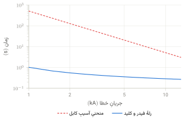
مثال 26.72 (حاشیهٔ دوازدهبرابری) پرسش. در خطاهای 2 تا 12.5 kA، کابل چقدر تحمل میکند و رله و کلید در چه زمانی پاک میکنند؟
پاسخ. کابل 127 تا 3.3 s؛ رله و کلید 0.54 تا 0.27 s؛ کمترین حاشیه 12 برابر در 12.5 kA.
تفسیر. همین وارسی با زمانِ پشتیبان (ورودی) تکرار میشود، که آن هم باید زیرِ منحنی بماند؛ و برای شیلد با جریانِ خطای زمین و زمانِ پشتیبانِ مقاومتِ زمین. وارسی: \((94 \times 240/12{,}500)^2 = 3.3\,\text{s}\).
دیفرانسیلِ امپدانسِ بالا برای شینه. همهٔ CTهای شینه موازی به یک رلهٔ ولتاژیِ امپدانسبالا وصلاند. در خطای بیرونی، بدترین حالت اشباعِ کاملِ یک CT است: CTهای سالم جریانِ ثانویه را از سیمپیچ و سیمهای آن میرانند و ولتاژِ پایداری میسازند:
\[ V_\text{s} = \frac{I_\text{f}}{N}\left(R_\text{ct} + 2R_\text{L}\right) \tag{26.31}\]
high-impedance bus differential: stability for an external fault
through fault 25 kA, CTs 2000/1, R_ct 5.0 ohm, lead 2.0 ohm
worst case: one CT saturates fully and the healthy ones
drive the secondary fault current through it and its leads:
stability voltage V_s = I_f/N x (R_ct + 2 R_L) = 112.5 V
relay set above it (teaching 1.2 x): 135 V; CT knee >= 2 x setting: 270 V
for an internal fault every CT drives into the high
impedance and the voltage soars past the setting (a
voltage limiter protects the circuit); the CTs must be
identical and dedicated - a design proved by its stability
test and its sensitivity calculationمثال 26.73 (ولتاژِ پایداری) پرسش. با خطای بیرونیِ 25 kA، CTهای 2000/1، \(R_\text{ct} = 5\) و سیمِ 2 Ω، ولتاژِ پایداری، تنظیم و زانوی لازم چیست؟
پاسخ. 112.5 V؛ تنظیمِ آموزشی 135 V؛ زانو دستکم 270 V.
تفسیر. در خطای درونی همهٔ CTها به امپدانسِ بالا میرانند و ولتاژ از تنظیم میگذرد (محدودکنندهٔ ولتاژ مدار را حفاظت میکند). CTها باید یکسان و اختصاصی باشند؛ طرح با آزمونِ پایداری و حسابِ حساسیت ثابت میشود. این گزینه با طرحِ مسدودسازی (مثال 26.55) مقایسه میشود: سریعتر و گزینشپذیرتر، ولی گرانتر. وارسی: \(12.5 \times 9 = 112.5\).
- زمانِ قطعِ تصویرِ گرمایی در 600 A از سرد؟
- تحملِ کابلِ 400 mm² آلومینیومی در 12.5 kA؟
- ولتاژِ پایداری با سیمِ 3 Ω؟
- چرا CTهای دیفرانسیلِ امپدانسِ بالا باید یکسان باشند؟
26.6.8 مقایسهٔ فایلهای تنظیم و مکانیابیِ خطا
«چه» عوض شد، نه فقط «که». چکسام (بخش 26.3.6) نشان میدهد فایلِ درونِ رله با فایلِ تأییدشده فرق دارد؛ مقایسهٔ پارامتر به پارامتر نشان میدهد چه فرق کرده است:
comparing the approved file with the file read from the relay
parameter approved in the relay status
51 pickup A 480 480 same
51 TMS 0.1 0.1 same
51N pickup A 40 40 same
51N delay s 0.5 0.4 CHANGED
50BF timer s 0.15 0.15 same
CT ratio 600 600 same
curve SI VI CHANGED
2 parameters differ: the checksum shows THAT the file
changed, the comparison shows WHAT changed - here the curve
type and the earth-fault delay, both of which move the
grading (lesson B); the change has no revision, study or
test: the relay goes back to the approved file and the
event is recorded (ch 35 for access control)مثال 26.74 (دو پارامتر بیسابقه) پرسش. کدام پارامترها با فایلِ تأییدشده فرق دارند و چه باید کرد؟
پاسخ. نوعِ منحنی (SI به VI) و تأخیرِ خطای زمین (0.5 به 0.4 s)؛ هر دو هماهنگی را جابهجا میکنند (بخش 26.3.2).
تفسیر. این تغییر بازنگری، یادداشتِ مطالعه و آزمون ندارد؛ رله به فایلِ تأییدشده برمیگردد و رویداد ثبت میشود. چه کسی و چگونه دسترسی داشت، پرسشِ فصلِ ۳۵ است. وارسی: دو سطر «CHANGED».
مکانیابیِ خطا روی فیدرِ کلکتور. رله با واکنشِ اندازهگیریشده فاصلهٔ خطا را تخمین میزند: \(d = X/x\). با تغذیه از یک سر، مقاومتِ خطا واکنش را عوض نمیکند؛ ولی توربینهای پس از رله جریانِ بخشِ دور را بیشتر میکنند و خطا را دورتر نشان میدهند:
locating a fault on a collector feeder from the measured reactance
cable reactance 0.116 ohm/km (240 mm2, ch 24); distance = X / x;
turbines beyond 1.1 km add 20% to the current in the far section
true km X seen ohm located km error m
1.0 0.116 1.00 0
2.5 0.322 2.78 280
4.0 0.531 4.58 580
fed from one end, a resistive fault leaves the reactance
unchanged, so the distance stays readable; the converters'
infeed beyond the relay makes the fault look farther (and
tilts the fault resistance into the reactance) - known
infeed is corrected in the locator, and sections of
different cable are modelled; even so, a located fault
shortens the 68 h repair of ch 24 by the search hoursمثال 26.75 (پانصدوهشتاد متر خطا) پرسش. با تغذیهٔ 20 % از 1.1 km به بعد، خطای 4.0 km کجا مکانیابی میشود؟
پاسخ. در 4.58 km، 580 m دورتر.
تفسیر. تغذیهٔ شناختهشده در مکانیاب تصحیح میشود و بخشهای کابلِ متفاوت مدل میشوند؛ حتی با خطا، مکانیابی ساعتهای جستوجو را از تعمیرِ 68 ساعتهٔ فصلِ ۲۴ کم میکند. وارسی: \(1.1 + 2.9 \times 1.2 = 4.58\).
- چرا چکسام بهتنهایی برای بازبینیِ تغییر کافی نیست؟
- خطای 3.0 km با همان تغذیه کجا مکانیابی میشود؟
- چرا مقاومتِ خطا با تغذیه از دو سر واکنش را عوض میکند؟
26.6.9 تایمرِ خرابیِ کلید از سوابقِ زمانبندی و سهمِ نیروگاه در ترازِ خطا
تایمرِ خرابیِ کلید. تایمر باید از کندترین بازشدنِ سالم کلید، بهاضافهٔ زمانِ بازنشانیِ آشکارسازِ جریان و حاشیه، بلندتر باشد؛ وگرنه حفاظتِ خرابیِ کلید کلِ بخش را قطع میکند در حالی که کلید در حالِ باز شدن است:
\[ T_\text{BF} \ge t_\text{open,max} + t_\text{reset} + t_\text{margin} \tag{26.32}\]
breaker-failure timer from the breaker timing records (lesson K)
timer >= slowest opening + current-check reset + margin
(reset 20 ms, margin 60 ms, teaching)
breaker slowest pole ms needed ms 150 ms ok? 115 ms ok?
=WS1-Q1 31 111 yes yes
=WS2-Q1 (as found) 42 122 yes NO
=WS2-Q1 (repaired) 30 110 yes yes
the timer must outlast the slowest healthy opening, or the
breaker-failure stage trips the whole section while the
breaker is in fact opening: with a tighter 115 ms timer (for
faster backup) the slow pole as found would do exactly that;
the timing record is an input to the setting, and a breaker
that fails its timing is repaired, not 'covered' by a longer
timer that slows every backup clearingمثال 26.76 (قطبِ کند، تایمرِ تنگ) پرسش. با بازنشانیِ 20 ms و حاشیهٔ 60 ms، کدام کلید با تایمرِ 115 ms مشکل دارد؟
پاسخ. =WS2-Q1 در حالتِ یافتهشده (قطبِ 42 ms): 122 ms لازم دارد.
تفسیر. سابقهٔ زمانبندی (مثال 26.82) ورودیِ تنظیم است؛ کلیدی که زمانبندیاش رد شده تعمیر میشود، نه اینکه با تایمرِ بلندتر «پوشانده» شود؛ تایمرِ بلندتر هر پاکشدنِ پشتیبان را کند میکند (مثال 26.65). وارسی: \(42 + 20 + 60 = 122\).
سهمِ نیروگاه در ترازِ خطای شبکه. بهرهبردار برای وارسیِ کلیدها و رلههای خودش باید بداند نیروگاه به خطای شینهٔ 132 kV چه میافزاید:
what the plant adds to the grid's fault level at the 132 kV bus
grid alone 5.2 kA; plant 105 MVA of converters
converter fault current x rated plant kA at 132 kV total kA rise
1.0 0.46 5.66 9%
1.2 0.55 5.75 11%
1.5 0.69 5.89 13%
a converter plant adds about a tenth to the grid's fault
level here - a synchronous plant of the same size would add
several times more; the operator's study (ch 28) needs the
makers' fault-current models (positive and negative
sequence, timing) to check its own breakers and relays,
and the plant's 132 kV gear is rated on the totalمثال 26.77 (یکدهم، نه چند برابر) پرسش. با شبکهٔ 5.2 kA و 105 MVA مبدل با 1.2 برابرِ نامی، نیروگاه چقدر میافزاید؟
پاسخ. حدودِ 0.55 kA، یعنی 11 %؛ جمع حدودِ 5.75 kA.
تفسیر. نیروگاهِ مبدلی حدودِ یکدهم میافزاید؛ نیروگاهِ هماندازهٔ سنکرون چند برابر بیشتر. مطالعهٔ بهرهبردار (فصلِ ۲۸) مدلهای جریانِ خطای سازندگان (توالیِ مثبت و منفی، زمانبندی) را میخواهد، و تجهیزاتِ 132 kV نیروگاه روی جمع رتبه میگیرند. جمعِ حسابی تقریبِ بالاست، چون هر دو جریان تقریباً همفازند. وارسی: \(1.2 \times 105 \times 10^6/(\sqrt{3} \times 132{,}000) = 551\,\text{A}\).
- تایمرِ لازم برای کلیدی با کندترین قطبِ 35 ms؟
- چرا تایمرِ بلندتر چارهٔ کلیدِ کند نیست؟
- سهمِ نیروگاه با 1.5 برابرِ نامی و شبکهٔ 3.0 kA؟
26.6.10 حفاظت در هر مرحلهٔ برقدار کردن
ایده. فصلِ ۲۳ برقدار کردن را در مرحلههای S0 تا S4 دنبال کرد؛ در هر مرحله مرزِ زنده و مرده جابهجا میشود. قاعدهٔ حفاظت ساده است: هیچ بخشی برقدار نمیشود که حفاظتش آزموده نشده باشد، و گروهِ تنظیمِ فعال با ترازهای خطای همان مرحله میخواند:
protection at each energisation stage of ch 23 (teaching)
stage protects the new part settings group
S0 utility bay operator's relays -
S1 line to the plant bay line diff. + distance L1
S2 132 kV bus and T1 T1 diff., gas, HV backup T1
S3 section A, SST incomer, NER standby G1
S4 first wind string feeder and unit relays G1
at S4 only one transformer and few units feed a fault: the
bus fault level is about 6.4 kA and the far-end feeder fault
4.68 kA, which the feeder relay clears in 0.30 s - every
stage is checked against its own fault levels; nothing is
energised whose protection has not been tested, and the
settings group in service is part of the switching
programme of the operator and the owner (ch 48-50)مثال 26.78 (مرحلهٔ کوچک، ترازِ کوچک) پرسش. در S4 (یک ترانسفورماتور، نخستین رشتهٔ بادی)، ترازِ خطای شینه و خطای انتهای فیدر چیست و رلهٔ فیدر کی قطع میکند؟
پاسخ. شینه حدودِ 6.4 kA و انتهای فیدر 4.68 kA؛ رله در 0.30 s.
تفسیر. هر مرحله با ترازهای خودش وارسی میشود؛ گروهِ تنظیمِ در خدمت بخشی از برنامهٔ کلیدزنیِ بهرهبردار و مالک است (فصلهای ۴۸ تا ۵۰). مرحلهای که حفاظتِ آزموده ندارد، منتظر میماند؛ این همان نقطههای توقفِ برنامهٔ راهاندازی است. وارسی: با مثال 26.14 همخوان است.
- چرا در S1 گروهِ تنظیمِ خط از بهرهبردار تأیید میگیرد؟
- اگر در S3 مقاومتِ زمین هنوز نصب نشده باشد، چه باید کرد؟
26.6.11 چهار پله با هم: از کلیدِ توربین تا ورودی
ایده. درسهای جدا هر پله را جدا وارسی کردند؛ ولی هماهنگی یک زنجیره است. پس از تصمیمِ مثال 26.49 (پلهٔ زمانِ ثابتِ 0.35 s برای رلهٔ واحد با فاصلههای 0.25 s)، چهار پله را مورد به مورد کنارِ هم میگذاریم؛ با جریانی که هر رله در هر مورد واقعاً میبیند (مثال 26.14):
four steps at the turbine end of a wind feeder, case by case (33 kV)
case kA LV unit feeder incomer margin
LV fault in the turbine 1.40 0.05 0.35 0.65 - 0.30
HV fault at the unit transformer 4.68 - 0.03 0.30 0.71 0.27
feeder cable fault, far end (LL) 4.68 - - 0.30 0.71 0.41
feeder head fault (coupler open) 7.75 - - 0.24 0.55 0.30
no fault drives between 1.4 kA (the largest LV fault seen
through the unit) and 4.68 kA (the smallest HV fault at the
turbine) through the unit relay, so its two stages cover
the two real cases: 0.35 s for LV faults, instantaneous for
HV faults; every margin in the table is at least 0.27 s,
and the 0.25 s decision of lesson C is met everywhere;
below 1.6 kA the incomer does not pick up - its backup
for those faults is the feeder's breaker-failure stage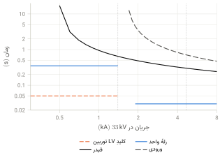
مثال 26.79 (شکافی که هیچ خطایی از آن نمیگذرد) پرسش. در چهار موردِ خطا، کمترین فاصلهٔ زمانی میانِ پلههای پیاپی چیست؟ آیا جریانی هست که رلهٔ واحد در آن بیپاسخ بماند؟
پاسخ. کمترین فاصله 0.27 s (خطای HV در ترانسفورماتورِ واحد: پلهٔ آنی 0.03 و فیدر 0.30 s)؛ همه بالای 0.25 s. میانِ 1.4 و 1.82 kA رلهٔ واحد پاسخی ندارد، ولی هیچ خطایی چنین جریانی از رلهٔ واحد نمیراند: بزرگترین خطای LV 1.4 kA و کوچکترین خطای HV 4.68 kA است.
تفسیر. منحنیها را با موردهای خطا میخوانیم، نه با همهٔ جریانها: شکافی که هیچ خطایی از آن نمیگذرد خطر نیست، ولی باید با دلیل در گزارشِ هماهنگی بیاید. زیرِ 1.6 kA ورودی اصلاً راه نمیافتد؛ پشتیبانِ این خطاها حفاظتِ خرابیِ کلیدِ فیدر است (بخش 26.6.3). وارسی: \(0.30 - 0.03 = 0.27\).
- اگر بزرگترین خطای LV 2.0 kA بود، شکافِ بیپاسخ چه پیامدی داشت؟
- چرا فیدر در خطای سرِ فیدر جریانِ بیشتری از ورودی میبیند؟
- چرا شکافی که هیچ خطایی از آن نمیگذرد هم باید در گزارش بیاید؟
26.7 ساخت و تولیدِ صنعتیِ تجهیزاتِ حفاظت
ایده. حفاظت از پنج خانوادهٔ سختافزار ساخته میشود: ترانسفورماتورِ جریان، ترانسفورماتورِ ولتاژ، کلید، رله و تابلو. هر کدام مسیرِ کارخانهٔ خودش و سوابقِ خودش را دارد؛ نیروگاه فرایند را از سازنده نمیگیرد ولی سوابق را میخواهد (فرایندهای کارخانههای برقی در فصلِ ۴۳):
manufacture of the protection hardware (purpose and records):
current transformer:
steps: core, winding, insulation, cure
records: material certificates, routine test record
voltage transformer:
steps: core, winding, insulation, cure
records: routine tests, ratio and polarity
breaker:
steps: interrupter, mechanism, run-in operations
records: timing, resistance, voltage tests
relay:
steps: boards, firmware load, burn-in, calibration
records: routine report, firmware version
panel:
steps: frame, wiring to drawings, labels, FAT
records: wiring check, FAT record, punch list
the detailed processes are the makers' (ch 43 for the
electrical factories); the plant asks for the recordsخطای نسبتِ CT. آزمونِ روتین نسبت را در چند جریان میسنجد: \(\varepsilon = (K_\text{n} I_\text{s} - I_\text{p})/I_\text{p}\):
CT ratio error from a routine test (600/1, teaching limit 1 %):
primary A secondary A error % within
600 0.9985 -0.15 yes
300 0.4991 -0.18 yes
60 0.0985 -1.50 NO
error = (Kn x Is - Ip) / Ip; a protection CT's accuracy
matters most at fault currents (its accuracy limit factor),
a metering CT's at load currents - two cores, two classes,
each proved by its own test recordمثال 26.80 (دقیق در بار، نادقیق در جریانِ کم) پرسش. کدام نقطهٔ آزمون از حدِ آموزشیِ 1 % بیرون است و آیا این برای CTِ حفاظتی مهم است؟
پاسخ. در 60 A (ده درصدِ نامی) خطا −1.50 % است. برای هستهٔ حفاظتی دقت در جریانِ خطا (ضریبِ حدِ دقت) مهم است؛ برای هستهٔ اندازهگیری دقت در جریانِ بار. پس هر هسته ردهٔ خودش و سابقهٔ آزمونِ خودش را دارد (بخش 25.8.5).
تفسیر. یک CT اغلب چند هسته دارد؛ آزمون باید هستهٔ درست را با معیارِ درست بسنجد. وارسی: \((600 \times 0.0985 - 60)/60 = -1.50\,\%\).
نقطهٔ زانو از منحنیِ مغناطیسشوندگی. نیازِ نقطهٔ زانوی CTِ فیدر در مثال 26.4 حساب شد؛ شاهدِ آن منحنیِ آزمون است، نه پلاک:
CURVE = [(10, 0.004), (50, 0.008), (100, 0.012), (150, 0.016), (200, 0.022),
(230, 0.030), (250, 0.045), (265, 0.070), (275, 0.110), (285, 0.180)]
def knee(points: list) -> tuple:
"""First point where a 10 % rise in voltage needs a 50 % rise in
magnetising current (interpolating the measured curve)."""
for (v, i) in points:
v2 = 1.1 * v
for (va, ia), (vb, ib) in zip(points, points[1:]):
if va <= v2 <= vb:
i2 = ia + (ib - ia) * (v2 - va) / (vb - va)
if i2 >= 1.5 * i:
return v, i
return Noneknee point from a CT magnetising-curve test (teaching data):
voltage V current A
10 0.004
50 0.008
100 0.012
150 0.016
200 0.022
230 0.030
250 0.045
265 0.070
275 0.110
285 0.180
knee (10 % more volts needs 50 % more amps): 230 V at 0.030 A
lesson A's feeder CT needs 188 V: this core has margin;
the curve in the test record is the evidence, not the
nameplateمثال 26.81 (دویستوسی ولت در برابرِ صدوهشتادوهشت) پرسش. نقطهٔ زانوی این هسته کجاست و برای نیازِ 188 V کافی است؟
پاسخ. 230 V در 0.030 A؛ کافی است، با حاشیهٔ حدودِ 22 %.
تفسیر. تعریفِ نقطهٔ زانو (ده درصد ولتاژِ بیشتر با پنجاه درصد جریانِ بیشتر) شکلِ آموزشیِ تعریفِ استاندارد است (IEC 61869-2، STD-038)؛ روشِ دقیق و ردهٔ هسته از استاندارد و مشخصه است. وارسی: در 253 V جریان حدودِ 0.050 A، بیش از \(1.5 \times 0.030 = 0.045\).
کلید: زمانبندی و مقاومتِ تماس. آزمونِ روتینِ کلید زمانِ بازشدنِ هر قطب، پراکندگیِ قطبها و مقاومتِ تماس را میسنجد:
breaker timing and contact-resistance records (teaching limits:
opening <= 35 ms, pole spread <= 3.3 ms, resistance <= 45 uOhm)
breaker opening ms spread resistance uOhm result
=WS1-Q1 (28, 29, 31) 3 (35, 36, 37) pass
=WS2-Q1 (29, 30, 42) 13 (34, 36, 35) slow pole, spread
=PVF3-Q1 (28, 28, 29) 1 (36, 35, 58) contact
a slow pole points to the mechanism (lubrication, a
spring, a coil); a high contact resistance to a loose or
worn joint that will heat under load - both go back to the
maker's checks before energising; the timing also enters
the breaker-failure timer of lesson Eمثال 26.82 (یک قطبِ کند، یک تماسِ گرم) پرسش. کدام کلیدها رد میشوند و هر یافته به کجا اشاره دارد؟
پاسخ. =WS2-Q1: قطبِ کند (42 ms) و پراکندگیِ 13 ms: سازوکار (روانکاری، فنر، بوبین). =PVF3-Q1: مقاومتِ 58 µΩ: اتصالِ شل یا فرسوده که زیرِ بار گرم میشود.
تفسیر. هر دو پیش از برقدار کردن به وارسیِ سازنده برمیگردند؛ زمانبندی ورودیِ تایمرِ خرابیِ کلید است (بخش 26.6.3). جالب: همان =WS2-Q1 در لابِ رویدادها باز نشد (بخش 26.6.5). حدها آموزشیاند. وارسی: \(42 - 29 = 13\,\text{ms}\).
خانوادههای آزمونِ رله و تابلو. آزمونِ نوعی طرح را ثابت میکند، آزمونِ روتین این دستگاه را، و آزمونِ کارخانهٔ تابلو این تابلو را آنگونه که برای نیروگاهِ P سیمکشی شده:
test families of a protection relay and its panel:
type tests (once per design):
EMC immunity and emission, insulation,
climatic, mechanical, functional accuracy - certificates
routine tests (every unit):
functions, calibration of inputs,
self-supervision - the unit's test report
firmware and configuration:
version recorded, checksum, release
notes - part of the configuration record
panel FAT (the assembly):
wiring, functions, trips, interlocks
with the project's schematics - FAT record and punch list
the type test proves the design; the routine test proves
this unit; the FAT proves this panel as wired for Plant Pفهرستِ نواقصِ آزمونِ کارخانهٔ تابلو. نقصها رده میگیرند: A پیش از ارسال بسته میشود، B پیش از برقدار کردن، C تا تکمیل:
panel FAT punch list (A must close before shipping, B before
energising, C at completion):
item class status
terminal X2:14 wired to X2:41 B closed
CT shorting link left open on core 2 A closed
trip relay contact on wrong coil A closed
setting file rev A loaded, rev B approved A closed
ferrule labels missing on 12 wires C closed
+H03 trip coil 2 link X5:7 missing B open
door earth strap missing C open
open class A items: 0 -> panel may ship: yes
open B and C items travel with the panel: 2
an open CT link on site would put the CT secondary open -
dangerous voltages - which is why it is a class A item
the missing coil-2 link was classed B: a backup trip path
that does not exist is a protection defect and should have
been class A (lab E shows what followed)مثال 26.83 (ردهٔ نادرست) پرسش. تابلو اجازهٔ ارسال دارد؟ کدام قلم ردهٔ نادرست گرفته است؟
پاسخ. بله: قلمِ بازِ A نیست و دو قلمِ B و C با تابلو میروند. ولی «لینکِ بوبینِ قطعِ ۲ (X5:7) نیست» ردهٔ B گرفته است؛ مسیرِ قطعِ پشتیبانی که وجود ندارد نقصِ حفاظتی است و باید A میبود.
تفسیر. لینکِ بازِ اتصالِ کوتاهِ CT هم A است: ثانویهٔ CTِ باز ولتاژِ خطرناک میسازد (بخش 26.2.4). ردهٔ نادرستِ بوبینِ ۲ همان چیزی است که در بخش 26.6.5 یک فیدر را به یک بخشِ کامل تبدیل کرد. وارسی: شمارِ قلمهای باز: ۲.
- خطای نسبتِ CTِ 400/1 اگر 400 A به 0.995 A برسد؟
- چرا هستهٔ حفاظتی و اندازهگیری دو رده دارند؟
- نقطهٔ زانو را از منحنی چگونه پیدا میکنید؟
- پراکندگیِ قطبها با زمانهای 30، 31 و 36 ms؟
- آزمونِ نوعی، روتین و کارخانهٔ تابلو هر کدام چه چیزی را ثابت میکنند؟
- چرا نبودِ مسیرِ قطعِ پشتیبان ردهٔ A است؟
26.7.1 چند خطای سیمکشی را باید انتظار داشت؟
ایده. حتی سیمکشیِ خوب خطا دارد. اگر نرخِ خطا در هر هزار اتصال \(r\) باشد، تعدادِ مورد انتظار در \(n\) اتصال \(\mu = n\,r/1000\) و احتمالِ «هیچ خطا» با توزیعِ پواسون \(e^{-\mu}\) است:
wiring errors a panel check should expect to find (teaching rates)
1,800 terminations in a protection panel
error rate per 1,000 expected errors chance of none
0.5 0.9 40.7%
1.0 1.8 16.5%
2.0 3.6 2.7%
even good wiring leaves one or two errors in a panel of this
size: a 100 % point-to-point check and the functional FAT
are expected to find them - a FAT that finds nothing is
asked how it looked (lesson K's punch list)مثال 26.84 (آزمونی که هیچ نیافت) پرسش. در تابلوی 1,800 اتصالی با نرخِ آموزشیِ یک در هزار، چند خطا انتظار میرود و احتمالِ هیچ خطا چیست؟
پاسخ. حدودِ 1.8 خطا؛ احتمالِ هیچ 16.5 %.
تفسیر. وارسیِ صددرصدِ نقطهبهنقطه و آزمونِ کارکردیِ کارخانه باید این خطاها را بیابند؛ آزمونی که هیچ نمییابد پرسیده میشود که چگونه نگاه کرده است. فهرستِ نواقصِ مثال 26.83 دو قلمِ سیمکشی داشت: همان چیزی که انتظار میرفت. وارسی: \(e^{-1.8} = 0.165\).
- خطاهای مورد انتظار در ۳۰۰۰ اتصال با نرخِ 0.5 در هزار؟
- چرا «هیچ نقص» در آزمونِ کارخانهٔ یک تابلوی بزرگ نشانهٔ خوبی نیست؟
26.8 نیروگاهِ P: سه مثالِ یکپارچه
مثال 26.85 (مقدماتی: یک نقطهٔ هماهنگی با دست) پرسش. جریانِ 4 kA از فیدرِ =WS1 و ورودیِ بخشِ A میگذرد. زمانِ هر رله را با فرمولِ منحنیِ معکوسِ استاندارد (معادلهٔ 26.6) با دست حساب کنید و با کد مقایسه کنید.
one grading point by hand (4 kA through a feeder and its incomer):
feeder: I/Is = 4000/480 = 8.33;
t = 0.10 x 0.14 / (8.33^0.02 - 1) = 0.32 s
incomer: I/Is = 4000/1600 = 2.50;
t = 0.11 x 0.14 / (2.50^0.02 - 1) = 0.83 s
margin 0.51 s >= 0.3 s: graded
code check: 0.32 s and 0.83 sپاسخ. فیدر 0.32 s و ورودی 0.83 s؛ فاصله 0.51 s، بیش از 0.3 s: هماهنگ. کد همان عددها را میدهد.
تفسیر. حسابِ دستی کد را وارسی میکند و کد حسابِ دستی را؛ هر دو باید پیش از گزارشِ هماهنگی همخوان باشند. وارسی: \(8.33^{0.02} = 1.0433\) و \(0.014/0.0433 = 0.32\).
مثال 26.86 (میانی: ثبتِ تنظیمهای بخشِ A) پرسش. تنظیمهای درسهای ب و ث را در یک ثبت بیاورید: رله، کارکرد، CT، راهاندازیِ اولیه و ثانویه، منحنی.
settings register of section A (intermediate example, teaching):
relay function CT prim A sec A curve
=WS1-Q1-F1 51 phase OC 600/1 480 0.800 SI, TMS 0.10
=WS1-Q1-F1 51N earth fault 100/1 40 0.400 DT 0.5 s (CBCT)
=T1-Q2-F1 51 incomer OC 1600/1 1600 1.000 SI, TMS 0.11
=T1-Q1-F1 51 T1 HV backup 400/1 400 1.000 SI, TMS 0.18
=NER-A-F51N 51N standby 400/1 80 0.200 DT 1.5 s
=WS1-Q1-F1 50BF 600/1 60 0.100 timer 0.15 s
each row names the study that set it (lessons B and E) and
the test that proved it (secondary injection); the earth
fault uses a core-balance CT because 40 A through a 600/1
phase-CT residual is only 0.067 A - too little for a
reliable setting; the register, the file and its checksum
travel togetherپاسخ. شش سطر؛ راهاندازیِ ثانویه از تقسیمِ اولیه بر نسبتِ CT (\(480/600 = 0.800\,\text{A}\)).
تفسیر. خطای زمینِ 40 A از باقیماندهٔ CTهای فازِ 600/1 فقط 0.067 A در ثانویه است: برای تنظیمِ قابلِ اعتماد کم؛ پس CTِ هستهتوازن (core-balance) با نسبتِ 100/1. هر سطر مطالعهای که آن را ساخت و آزمونی که ثابتش کرد را نام میبرد؛ ثبت، فایل و چکسام با هم میروند (بخش 26.3.6). وارسی: \(80/400 = 0.200\).
مثال 26.87 (یکپارچه: مبنای حفاظت، زمین و صاعقه) پرسش. مبنای حفاظت، زمینکردن و صاعقهٔ نیروگاهِ P را با موردهای باز بنویسید.
protection, earthing and lightning basis of Plant P (D-030):
33 kV: overcurrent and earth fault per feeder, graded with
>= 0.3 s margins; 400 A resistance earthing; breaker
failure to the incomer; bus protection or incomer backup
main transformers: biased differential with inrush blocking,
gas and pressure devices, overcurrent backup
132 kV line: line differential over fibre, distance backup,
transfer trip from the grid end on two channels
CTs: 1 A secondaries, knee points from the fault levels
earthing: mesh grid from the soil survey (U-098), GPR and
touch/step checked by the guide's method with clearing times
lightning: turbine LPS from the maker; arresters at the line
entrance and the transformers; risk study with local flash
density (U-099)
settings: project studies and the operator's approvalتفسیر. این تصمیمِ D-030 است. یافتهٔ فصل که به عقب برگشت: ورودیها 1,600 A (مثال 26.12)؛ فصلهای ۲۳ و ۲۴ 1,250 A را موقت نگه میدارند. موردهای باز: بررسیِ خاک (U-098)، چگالیِ آذرخشِ محلی (U-099)، و دادهٔ شبکهٔ بهرهبردار (U-089 از فصلِ ۲۳). وارسی: هر بند به یکی از درسهای این فصل برمیگردد.
26.9 عددهای کلیدیِ حفاظتِ نیروگاهِ P
| کمیت | مقدار | مثال |
|---|---|---|
| خطای سهفاز در بخشِ شینهٔ 33 kV | 6.39 kA | مثال 26.1 |
| خطای زمین با مقاومت | حدودِ 400 A به جای 7.17 kA | مثال 26.3 |
| تنظیمهای TMS فیدر، ورودی، HV | 0.10، 0.11، 0.18 | مثال 26.13 |
| فاصلهٔ هماهنگی در 4 kA | 0.51 s | مثال 26.85 |
| مقاومتِ شبکهٔ زمین (150 Ω·m) | 0.86 Ω | مثال 26.28 |
| افزایشِ پتانسیلِ زمین | 1,782 V | بخش 26.4.2 |
| برخوردِ آذرخش به دوازده توربین | حدودِ ۲۱ در سال | مثال 26.32 |
| دسترسهای دیستانس | 2.36، 7.13، 12.98 Ω | مثال 26.63 |
| پاک شدن با خرابیِ کلید | 240 ms | مثال 26.65 |
| انتقالِ قطع، دو کانال | 105 ms؛ 99.9999 % | مثال 26.64 |
26.10 گردشِ کارِ حفاظت، زمین و صاعقه
- دادهٔ شبکه و مدلِ تأییدشده (بخش 26.3.1)؛ ترازهای خطا در همهٔ حالتهای کلیدزنی.
- ناحیهها و طرحها (بخش 26.6.1)؛ اصلی و پشتیبانِ مستقل (بخش 26.2.6).
- ترانسفورماتورهای اندازهگیری: نسبت، رده، نقطهٔ زانو (بخش 26.2.4).
- تنظیمها: پنجره و TMS در بدترین حالت (بخش 26.3.2)؛ عبور از خطا (بخش 26.3.5).
- مدارِ قطع، DC و کنترلِ پیکربندی (بخش 26.3.6).
- زمین: خاک، شبکه، ولتاژِ تماس و گام با زمانِ قطع (بخش 26.4).
- صاعقه و ضربه: ریسک، ناحیهها، برقگیر (بخش 26.4.3، بخش 26.4.4).
- شاهد: کارخانه، تزریق، سربهسر، تأیید (بخش 26.5، بخش 26.6.4)؛ نگهداری (بخش 26.5.3).
26.11 آزمایشگاههای پایتونِ این فصل
| آزمایشگاه | برنامه | آنچه میسازد |
|---|---|---|
| دادهها | sources | رلهها، خطای زمین، شبکه، فیدر، زمین، صاعقه |
| مبانی | examples_a | ترازهای خطا، هماهنگی، زمین، CT، دیفرانسیل، دیستانس، خرابیِ کلید، ناحیهها |
| گردشِ کار | examples_b | بارها، پنجره، TMS، بیشبکه، جهت، عبور از خطا، RoCoF، پشتیبان |
| زمین و صاعقه | examples_c و examples_g | شبکهٔ زمین، GPR، الکترود، بدن، میلهها، کره، القا، فاصله، برقگیر، آرکفلش |
| شاهد و مخابرات | examples_f | بارِ CT، سندها، آزمونها، انتقالِ قطع |
| مدارهای درونی | examples_h | ترانسفورماتورِ واحد، فیوزِ رشته، خطای پنهان، عایق، LV، حلقه، DC، مبدلها |
| ساخت | examples_k | نسبت و زانوی CT، کلید، آزمونهای رله، نواقصِ کارخانه، مسیرها |
| ترانسفورماتور و منبعها | examples_m | نشتیِ دیفرانسیل و شیب، REF، فیدرِ سالم، بازبست، همزمانی |
| اندازهگیری و سرعت | examples_n | ونر، افتِ پتانسیل، رسانای صاعقه، مرزِ آرکفلش، مسدودسازیِ شینه |
| کانال و کارنامه | examples_p | عدمِ تقارنِ کانال، جریانِ شارژ، نظارتِ VT، خرابیِ پنهان، اطمینانپذیری و امنیت |
| نوارها، کابل و شینه | examples_r | پلههای ولتاژ و فرکانس، تصویرِ گرمایی، دیفرانسیلِ امپدانسِ بالا، منحنیِ آسیب |
| ریسک، SPD و فایلها | examples_s | ساختارِ ریسکِ صاعقه، سیمِ SPD، مقایسهٔ فایلِ تنظیم، مکانیابیِ خطا |
| خواندنِ آزمون | examples_t | نوارِ پذیرشِ تزریق، قطبیتِ دیفرانسیل، خطاهای سیمکشی |
| هارمونیک و شیلد | examples_u | مهارِ هارمونیکِ دوم از شکلِ موج، شیلد در برابرِ زمینکردن و کوپلر |
| حلقه، تایمر و سهمِ خطا | examples_w | حلقهٔ رشتهٔ خورشیدی، تایمرِ خرابیِ کلید، سهمِ نیروگاه در ترازِ خطا |
| سرویسها و مرحلهها | examples_x | سهمِ جریانِ صاعقه در سرویسها، حفاظت در هر مرحلهٔ برقدار کردن |
| توربین و دیزل | examples_y | سه پله در توربین، تابلوی 400 V روی دیزل |
| فیوز و سابقه | examples_z | فیوز یا کلید برای واحدها، کامل بودنِ سابقهٔ آزمون |
| چهار پله | examples_ab | هماهنگیِ کلیدِ توربین، رلهٔ واحد، فیدر و ورودی، مورد به مورد |
| بارِ سرد | examples_ac | هجومِ چهار واحد در برقدار کردنِ دوبارهٔ فیدر، رله بهعنوانِ انتگرالگیر |
| آزمایشگاهِ ت | lab_d | ردیابیِ خطا (مثالِ کارشده)، فایلِ تنظیم، نگهداری |
| آزمایشگاهِ ث | lab_e | خواندنِ ثبتِ رویدادها، ساعتها |
| نیروگاهِ P | integrated | هماهنگی با دست، ثبتِ تنظیمها، مرزِ تأیید، مبنا |
| مثالها و پاسخها | worked | سطرهای E01 و P01 به بعد |
ماژولِ protection با آزمونهایش در برابرِ حسابِ دستی پایهٔ این برنامههاست. نمونه: فرمولِ منحنیِ معکوس و زمانِ قطع:
CURVES = { # inverse-time curve constants (k, alpha), standard forms
"standard inverse": (0.14, 0.02),
"very inverse": (13.5, 1.0),
"extremely inverse": (80.0, 2.0),
}
def trip_time(i: float, pickup: float, tms: float,
curve: str = "standard inverse") -> float:
"""Operating time (s) of an inverse-time overcurrent element:
t = TMS k / ((I/Is)^alpha - 1); inf below pickup."""
k, a = CURVES[curve]
m = i / pickup
return math.inf if m <= 1 else tms * k / (m ** a - 1)
def grading_ok(t_down: float, t_up: float, margin: float = 0.3) -> bool:
"""Upstream relay slower than downstream by at least the margin."""
return t_up - t_down >= margin26.12 جعبهٔ استاندارد و انطباق
- IEC 60255-151:2009 (STD-124): الزامهای کارکردیِ حفاظتِ جریانِ زیاد و کم؛ ثابتهای منحنیِ معکوسِ استاندارد از این خانوادهاند.
- IEC 61869-2:2012 (STD-038): ترانسفورماتورهای جریان (ردهها، نقطهٔ زانو، آزمونها).
- IEEE Std 80-2013 (STD-126): راهنمای ایمنیِ زمینکردنِ پستِ AC؛ شکلهای ولتاژِ تماس و گامِ این فصل آموزشیاند و از آن نقل نمیشوند.
- IEC 62305-2:2024 (STD-127): مدیریتِ ریسکِ صاعقه؛ IEC 61400-24:2019+AMD1:2024 (STD-125): حفاظتِ صاعقهٔ توربینِ بادی.
- IEC 61850 (STD-093): ارتباطاتِ پست (پیامهای حفاظتی و پیکربندی).
- تنظیمها، حاشیهها و حدهای این فصل آموزشیاند (A-331 تا A-335). تنظیمِ واقعی از مدلِ شبکهٔ تأییدشده و الزامِ بهرهبردار؛ قاعدههای کشوری در فصلهای ۵۵ تا ۵۷. (وارسیشده 2026-11-16.)
26.13 تحویلدادنیِ نیروگاهِ P
| سند | محتوا | معیارِ پذیرش |
|---|---|---|
| PLP-ELE-CAL-0011 | مطالعهٔ اتصالِ کوتاه و هماهنگی (همهٔ حالتها) | فاصلهها در بدترین حالت؛ مدلِ تأییدشده |
| PLP-ELE-SPC-0007 | مشخصهٔ حفاظت، CTها و تابلوها | نقطههای زانو از ترازِ خطا؛ دو بوبین و دو DC |
| PLP-ELE-REP-0009 | زمینکردن و صاعقه (شبکه، GPR، ریسک) | دادهٔ خاک و چگالیِ آذرخش؛ زمانِ قطع |
| PLP-ELE-REG-0003 | ثبتِ تنظیمها، فایلها و چکسامها؛ مرزِ تأیید | تأییدِ کتبیِ بهرهبردار برای مرز |
| PLP-ELE-PRO-0004 | برنامهٔ آزمون (کارخانه، تزریق، سربهسر) و سابقهٔ نگهداری | هر آزمون با هدف و سابقه |
این فصل اینها را به پروندهٔ نیروگاهِ P میافزاید:
- تصمیمِ D-030: مبنای حفاظت، زمین و صاعقه (مثال 26.87).
- فرضهای A-331 تا A-335: تنظیمها و عنصرهای خطای زمین (A-331)؛ دادهٔ آموزشیِ شبکه (A-332)؛ خاک و شبکهٔ زمین (A-333)؛ صاعقه (A-334)؛ پوشِ عبور از خطا، ثبتِ رویدادِ ساختگی و حدهای آزمون (A-335).
- مجهولهای U-098 و U-099: بررسیِ خاکِ محل؛ چگالیِ آذرخشِ محلی.
- یافته: ورودیهای 33 kV 1,600 A؛ لینکِ بوبینِ ۲ ردهٔ A (مثال 26.83).
- کتابخانهٔ همراه: ماژولِ
protectionبا آزمونها و برنامههای فصلِ ۲۶.
26.14 جمعبندی
- مبانی: انواعِ خطا و مسیرِ جریان، مؤلفههای متقارن، زمینکردنِ نول با مقاومت؛ CT و VT چشمِ حفاظتاند و نقطهٔ زانو از ترازِ خطا میآید؛ کارکردهای جریانِ زیاد، دیفرانسیل، دیستانس، ولتاژ و فرکانس؛ گزینشپذیری، حساسیت، سرعت و پشتیبانِ مستقل (بخش 26.2).
- گردشِ کار: داده و مطالعه در همهٔ حالتهای کلیدزنی؛ پنجرهٔ راهاندازی و TMS در بدترین حالت؛ نیروگاهِ بیشبکه و جهت؛ حفاظتِ ولتاژ و فرکانس در برابرِ عبور از خطا؛ مدارِ قطع، DC و کنترلِ پیکربندی با چکسام؛ مرزِ تأییدِ بهرهبردار (بخش 26.3).
- زمین و صاعقه: خاک، شبکهٔ زمین، افزایشِ پتانسیل، ولتاژِ تماس و گام با زمانِ قطع؛ برخوردِ آذرخش، کرهٔ غلتان، برقگیر و فاصله؛ بازرسی؛ حفاظتِ مدارهای درونی: ترانسفورماتورِ واحد، فیوزِ رشته، خطای پنهانِ DC، عایق، LV، حلقه (بخش 26.4).
- شاهد و ایمنی: یک خطای فرضی از داده تا تأیید در هفت گام با سابقه؛ آرکفلش و زمانِ قطع بیروالِ کارِ برقدار؛ سوابقِ نگهداری (بخش 26.5).
- کلکتور و صادرات: ناحیههای همپوشان، دیستانس و دیفرانسیلِ خط، انتقالِ قطع با دو کانالِ مستقل، خرابیِ کلید، آزمونها و مرزِ تأیید؛ خواندنِ ثبتِ رویدادها و ساعتها (بخش 26.6).
- ساخت: مسیرهای کارخانهٔ CT، VT، کلید، رله و تابلو؛ نسبت و زانوی CT، زمانبندیِ کلید، خانوادههای آزمون و ردهٔ نواقص (بخش 26.7).
- درسهای افزوده: شیبِ مهار و REF، مهارِ هارمونیکِ دوم، فیدرِ سالم و بازبست و همزمانی، نوارهای ولتاژ و فرکانس، شیلد و زمینکردن (بخش 26.2.7، بخش 26.2.9، بخش 26.3.8، بخش 26.3.9، بخش 26.3.10)؛ ونر و افتِ پتانسیل، رسانای صاعقه، ریسک و SPD، حلقهٔ رشته (بخش 26.4.7، بخش 26.4.8، بخش 26.4.9)؛ مرزِ آرکفلش و مسدودسازی، خرابیِ پنهان و کارنامه، نوارِ پذیرش و قطبیت (بخش 26.5.4، بخش 26.5.5، بخش 26.5.6)؛ کانال و جریانِ شارژ، تصویرِ گرمایی و منحنیِ آسیب و دیفرانسیلِ شینه، مقایسهٔ فایل و مکانیابی، تایمرِ خرابیِ کلید و سهمِ خطا (بخش 26.6.6، بخش 26.6.7، بخش 26.6.8، بخش 26.6.9)؛ خطاهای سیمکشی (بخش 26.7.1).
26.14.1 واژگانِ فصلِ ۲۶
| فارسی | انگلیسی | یادداشت |
|---|---|---|
| خطای موازی | shunt fault | |
| خطای تکفاز به زمین | single line-to-earth fault | SLG |
| مؤلفههای متقارن | symmetrical components | |
| توالیِ مثبت، منفی و صفر | positive, negative and zero sequence | |
| زمینکردنِ نول | neutral earthing | |
| مقاومتِ زمینکننده | neutral earthing resistor | NER |
| ترانسفورماتورِ زمین | earthing transformer | |
| ترانسفورماتورِ جریان | current transformer | CT |
| ترانسفورماتورِ ولتاژ | voltage transformer | VT |
| نقطهٔ زانو | knee point | |
| CTِ هستهتوازن | core-balance CT | CBCT |
| حفاظتِ جریانِ زیاد | overcurrent protection | 51 |
| منحنیِ زمانِ معکوس | inverse-time curve | IDMT |
| ضریبِ زمانی | time multiplier setting | TMS |
| جریانِ راهاندازی | pickup current | |
| پنجرهٔ راهاندازی | pickup window | |
| حفاظتِ دیفرانسیل | differential protection | 87 |
| مهار | restraint (bias) | |
| حفاظتِ دیستانس | distance protection | 21 |
| دسترسِ ناحیه | zone reach | |
| جهتدار | directional | 67 |
| حفاظتِ خرابیِ کلید | breaker-failure protection | 50BF |
| گزینشپذیری | selectivity | |
| حساسیت | sensitivity | |
| پشتیبان | backup protection | |
| مدارِ قطع | trip circuit | |
| بوبینِ قطع | trip coil | |
| نظارت بر مدارِ قطع | trip-circuit supervision | TCS |
| رلهٔ قفل | lockout relay | 86 |
| فایلِ تنظیم | setting file | |
| چکسام | checksum | |
| ناحیهٔ حفاظت | zone of protection | |
| انتقالِ قطع | transfer trip | |
| عبور از خطا | fault ride-through | FRT |
| آهنگِ تغییرِ فرکانس | rate of change of frequency | RoCoF |
| ضدِجزیره | anti-islanding | |
| شبکهٔ زمین | earth grid (mesh) | |
| مقاومتِ ویژهٔ خاک | soil resistivity | |
| افزایشِ پتانسیلِ زمین | ground potential rise | GPR |
| ولتاژِ تماس | touch voltage | |
| ولتاژِ گام | step voltage | |
| چگالیِ آذرخش | flash density | Ng |
| کرهٔ غلتان | rolling sphere | |
| سامانهٔ حفاظتِ صاعقه | lightning protection system | LPS |
| وسیلهٔ حفاظت در برابرِ ضربه | surge protective device | SPD |
| آرکفلش | arc flash | |
| انرژیِ رویداد | incident energy | |
| تزریقِ ثانویه | secondary injection | |
| آزمونِ سربهسر | end-to-end test | |
| دنبالهٔ رویدادها | sequence of events | SOE |
| ثبتکنندهٔ اغتشاش | disturbance recorder | |
| فهرستِ نواقص | punch list | |
| پایشِ عایق | insulation monitoring | |
| امپدانسِ حلقهٔ خطا | earth-fault loop impedance | Zs |
| جریانِ نشتیِ دیفرانسیل | spill current | |
| خطای زمینِ محدود | restricted earth fault | REF |
| مهارِ هارمونیکِ دوم | second-harmonic restraint | |
| قطعِ همدردانه | sympathetic tripping | |
| بازبستِ خودکار | auto-reclose | 79 |
| زمانِ مرده | dead time | |
| همزمانی | synchrocheck | 25 |
| تصویرِ گرمایی | thermal replica | 49 |
| منحنیِ آسیب | damage curve | |
| دیفرانسیلِ امپدانسِ بالا | high-impedance differential | |
| ولتاژِ پایداری | stability voltage | |
| طرحِ مسدودسازی | blocking scheme | |
| عدمِ تقارنِ کانال | channel asymmetry | |
| نظارتِ VT | VT supervision | 60 |
| خرابیِ پنهان | hidden failure | |
| اطمینانپذیری | dependability | |
| امنیت | security | |
| روشِ ونر | Wenner method | |
| آزمونِ افتِ پتانسیل | fall-of-potential test | |
| مکانیابِ خطا | fault locator | |
| نوارِ پذیرش | acceptance band |
26.15 ارزیابیِ پلکانی
معیارِ تسلطِ این فصل: خواننده میتواند یک خطا را از دادهٔ شبکه تا تأییدِ تنظیم دنبال کند، ترازها و زمانهای هماهنگی را حساب و وارسی کند، شبکهٔ زمین و حفاظتِ صاعقه را مفهومی بسنجد، ناحیهها و طرحهای کلکتور و صادرات را طراحی کند، و شاهدِ آزمون و نگهداری را بخواند؛ همه بیروالِ کارِ برقدار. پاسخها در بخش 26.16 آمدهاند.
26.15.1 پلهٔ ۱: مبانی
تمرین 26.1 چهار نوعِ خطای موازی را نام ببرید و بگویید کدام معمولاً بزرگترین جریان را دارد.
تمرین 26.2 معادلهٔ 26.1 را توضیح دهید: سه مؤلفه از سه جریانِ فاز.
تمرین 26.3 چرا در خطای تکفاز به زمین شبکههای توالی سری میشوند؟
تمرین 26.4 چرا شبکهٔ 33 kV با مقاومت زمین میشود؟
تمرین 26.5 چرا ترانسفورماتورِ اصلیِ YNd11 یک ترانسفورماتورِ زمین در طرفِ 33 kV میخواهد؟
تمرین 26.6 معادلهٔ 26.5 را توضیح دهید.
تمرین 26.7 چرا ثانویهٔ CTِ برقدار نباید باز بماند؟
تمرین 26.8 سه منحنیِ معکوسِ استاندارد و کاربردِ هر کدام را بنویسید.
تمرین 26.9 مهار در دیفرانسیل چه میکند؟
تمرین 26.10 چهار اصلِ حفاظتِ خوب را تعریف کنید.
تمرین 26.11 پشتیبانِ «همسرنوشت» یعنی چه؟
تمرین 26.12 معادلهٔ 26.10 را توضیح دهید.
تمرین 26.13 چرا هماهنگی در همهٔ حالتهای کلیدزنی وارسی میشود؟
تمرین 26.14 چرا ورودیها حفاظتِ جهتدار میخواهند؟
تمرین 26.15 پوشِ عبور از خطا چیست و چرا پلهٔ کمولتاژی نباید درونِ آن قطع کند؟
تمرین 26.16 ناحیهٔ عدمتشخیصِ ضدِجزیره چیست؟
تمرین 26.17 معادلهٔ 26.14 را توضیح دهید.
تمرین 26.18 ولتاژِ تماس و گام را تعریف کنید.
تمرین 26.19 معادلهٔ 26.15 را توضیح دهید.
تمرین 26.20 روشِ کرهٔ غلتان را توضیح دهید.
تمرین 26.21 چرا برقگیر نزدیکِ ترانسفورماتور نصب میشود؟
تمرین 26.22 چرا خطای آرایهٔ خورشیدی از حفاظتِ جریانِ زیاد پنهان است؟
تمرین 26.23 ناحیهٔ حفاظت و همپوشانی را تعریف کنید.
تمرین 26.24 انتقالِ قطع چیست و کجا لازم است؟
تمرین 26.25 معادلهٔ 26.24 را توضیح دهید.
تمرین 26.26 آزمونِ نوعی، روتین و کارخانهٔ تابلو هر کدام چه چیزی را ثابت میکنند؟
تمرین 26.27 چرا دیفرانسیلِ ترانسفورماتور مهار دارد؟
تمرین 26.28 REF چه چیزی را میبیند که دیفرانسیل نمیبیند؟
تمرین 26.29 معادلهٔ 26.21 را توضیح دهید؛ چرا فاصلهٔ بیشتر عمیقتر را میبیند؟
تمرین 26.30 قاعدهٔ ۶۱٫۸ درصد را از معادلهٔ 26.22 به دست آورید.
تمرین 26.31 اطمینانپذیری و امنیتِ حفاظت را تعریف کنید.
تمرین 26.32 چرا تصویرِ گرمایی کاری میکند که حفاظتِ جریانِ زیاد نمیکند؟
تمرین 26.33 معادلهٔ 26.23 را توضیح دهید؛ کدام عامل در دستِ طراح نیست؟
تمرین 26.34 چرا جریانِ هجومی هارمونیکِ دوم دارد و جریانِ خطا ندارد؟
26.15.2 پلهٔ ۲: تحلیل
تمرین 26.35 جریانِ خطای سهفاز پشتِ 4 Ω در 33 kV؟
تمرین 26.36 جریانِ خطای دوفاز با \(Z_1 = Z_2 = j4\,\Omega\)؟
تمرین 26.37 خطای تکفازِ زمینشدهٔ مستقیم با \(Z_1 = Z_2 = Z_0 = j4\,\Omega\)؟
تمرین 26.38 مقاومتِ زمین برای حدودِ 300 A در 33 kV؟
تمرین 26.39 زمانِ منحنیِ معکوسِ استاندارد در ده برابرِ راهاندازی با TMS 0.2؟
تمرین 26.40 همان با منحنیِ خیلیمعکوس و بینهایتمعکوس؟
تمرین 26.41 زمانهای 0.25 و 0.50 s با فاصلهٔ لازمِ 0.3 s هماهنگاند؟
تمرین 26.42 ولتاژِ زانوی لازم با جریانِ ثانویهٔ 20 A، \(R_\text{ct} = 3\)، \(R_\text{b} = 2\,\Omega\) و \(k = 2\)؟
تمرین 26.43 دیفرانسیل با \(I_1 = 5\) و \(I_2 = -4.5\)؛ و با \(I_1 = 2\) و \(I_2 = 0\)؟
تمرین 26.44 دسترسهای دیستانس برای خطِ 5 Ω و خطِ بعدیِ 6 Ω؟
تمرین 26.45 دسترسها برای خطِ 4 Ω و خطِ بعدیِ 10 Ω؟
تمرین 26.46 مقاومتِ شبکهٔ زمینِ 50 × 50 m با 1,000 m رسانا در 300 Ω·m؟
تمرین 26.47 افزایشِ پتانسیل با 3 kA به زمین و 1.2 Ω؟
تمرین 26.48 نسبتِ ولتاژِ قابلِ تحمل در قطعِ 0.2 s به 0.5 s؟
تمرین 26.49 سطحِ جمعآوریِ دکلِ 120 m؟
تمرین 26.50 برخوردِ سالانه با \(N_\text{g} = 4\) و 0.4 km²؟
تمرین 26.51 سطحِ جمعآوریِ ساختمانِ 30 × 20 × 8 m؟
تمرین 26.52 حاشیهٔ برقگیر با تحملِ 550 kV و ولتاژِ پسماندِ 350 kV؟
تمرین 26.53 بارِ CT با 1.2 Ω در ثانویهٔ 5 A و 1 A؟
تمرین 26.54 زمانِ انتقالِ قطع با 20، 20، 10 و 50 ms؟
تمرین 26.55 دسترسپذیریِ دو کانالِ مستقلِ 99.5 %؟
تمرین 26.56 نسبتِ انرژیِ قوس با قطع در 0.1 s به 0.5 s؟
تمرین 26.57 انرژیِ نسبیِ قوس با قطع در 0.3 s بهجای 1.0 s؟
تمرین 26.58 پاک شدن با خرابیِ کلید: 30، 150 و 60 ms؟
تمرین 26.59 پاک شدن با خرابیِ کلید اگر تایمر 120 ms باشد؟
تمرین 26.60 مؤلفههای \(I_a = 1{,}000\,\text{A}\) و \(I_b = I_c = 0\)؟
تمرین 26.61 مؤلفههای سه جریانِ 800 A با زاویههای 0، −110 و 120°؟
تمرین 26.62 پنجرهٔ راهاندازی با بارِ 250 A و کمترین خطای 2,400 A؟
تمرین 26.63 TMS برای 0.6 s در 3 kA با راهاندازیِ 600 A؟
تمرین 26.64 الکترودِ نیمکرهای 1 m در 100 Ω·m با 1 kA: افزایشِ پتانسیل و پتانسیل در 2 m؟
تمرین 26.65 مقاومتِ پا روی سنگِ 2,500 Ω·m و جریانِ بدن با 300 V تماس؟
تمرین 26.66 شعاعِ حفاظت در زمین با کرهٔ 30 m و دکلِ 15 m؟
تمرین 26.67 ولتاژِ القایی در حلقهٔ 20 m² در 100 m با 20 kA/µs؟
تمرین 26.68 ولتاژ روی تجهیز با برقگیرِ 280 kV، فاصلهٔ 20 m و 800 kV/µs؟
تمرین 26.69 سه رشتهٔ موازی با Isc 11 A و رتبهٔ وارونهٔ 20 A: فیوز لازم است؟
تمرین 26.70 احتمالِ پاکنشدن با اصلی و پشتیبانِ 1 % و ضریبِ همسرنوشتیِ 0.1؟
تمرین 26.71 مقطعِ رسانای زمین برای 20 kA در 1 s با \(k = 143\)؟
تمرین 26.72 مقاومتِ میلهٔ 2.4 m × 16 mm در 80 Ω·m؟
تمرین 26.73 جریانِ خازنی با 5 µF در هر فاز در 33 kV؟
تمرین 26.74 RoCoF با عدمتوازنِ 5 % و \(H = 1\,\text{s}\)؟
تمرین 26.75 ترانسفورماتورِ واحدِ 2.5 MVA و 6 %: جریانِ نامی و خطای LV در 33 kV؟
تمرین 26.76 بلندترین کابل با 0.5 Ω حد، 0.01 Ω/m حلقه و منبعِ 0.04 Ω؟
تمرین 26.77 بلندترین کابلِ 4 mm² برای کلیدِ 20 A تیپ C؟
تمرین 26.78 خطای نسبتِ CTِ 400/1 اگر 400 A به 0.995 A برسد؟
تمرین 26.79 مقاومتِ عایقِ ۳۰۰ رشته با 10 MΩ؛ و ۶۰۰ رشته با 30 MΩ؟
تمرین 26.80 برخوردِ سالانه به ده دکلِ 30 m با \(N_\text{g} = 3\)؟
تمرین 26.81 پراکندگیِ قطبها با زمانهای 30، 31 و 36 ms؟
تمرین 26.82 جریانِ نشتی در 5 پریونیت با تپِ +5 % و عدمِ تطبیقِ 2 %؟
تمرین 26.83 REF با آستانهٔ 10 %، خطای محدود به 400 A و نامیِ 1,102 A، از کجا میبیند؟
تمرین 26.84 رلهٔ فیدرِ سالم با شش توربین (552 A نامی) در 1.3 برابر؟
تمرین 26.85 دورشدنِ فاز با 0.2 Hz در زمانِ مردهٔ 2 s؟
تمرین 26.86 زاویهٔ پیشفرمان با لغزشِ 0.3 Hz و کلیدِ 60 ms؟
تمرین 26.87 مقاومتِ ویژهٔ ظاهری با \(a = 10\,\text{m}\) و 2.0 Ω؟
تمرین 26.88 با کاوشگرِ جریان در 300 m، کاوشگرِ ولتاژ کجا؟
تمرین 26.89 گرمای رسانای 35 mm² اگر انرژیِ ویژه نصف شود؟
تمرین 26.90 مرزِ آرکفلش با قطعِ 0.5 s و \(x = 1.5\)؟
تمرین 26.91 زمانِ منحنیِ ورودی برای خطای شینهٔ 9.8 kA؟
تمرین 26.92 خطای فاز و جریانِ تفاضلی با 3 ms عدمِ تقارن و 437 A؟
تمرین 26.93 جریانِ شارژِ کابلِ 132 kV به طولِ 12 km (به نسبتِ 33.8 A برای 7 km)؟
تمرین 26.94 ناآمادگی با نرخِ 0.03 و آزمونِ ۴ ساله بی خودنظارتی؟
تمرین 26.95 با خودنظارتیِ 90 % و نرخِ 0.02، فاصلهٔ آزمون برای ناآمادگیِ 1 %؟
تمرین 26.96 اطمینانپذیری و امنیت با ۵۰ خطا، ۴۸ قطعِ درست و یک قطعِ ناخواسته؟
تمرین 26.97 پلهٔ 59 با 1.18 پریونیت و 0.5 s درونِ نوارِ آموزشی است؟
تمرین 26.98 پلهٔ 81U با 47.8 Hz و 10 s؟
تمرین 26.99 زمانِ تصویرِ گرمایی در 600 A از سرد (رتبهٔ 400 A، \(\tau = 45\)، \(k = 1.05\))؟
تمرین 26.100 تحملِ کابلِ 400 mm² آلومینیومی در 12.5 kA؟
تمرین 26.101 ولتاژِ پایداری با سیمِ 3 Ω (بقیه همان)؟
تمرین 26.102 بیشترین طولِ سیمِ SPDِ 1.5 kV برای 4 kV در 10 kA/µs با 1 µH/m؟
تمرین 26.103 خطای 3.0 km با تغذیهٔ 20 % از 1.1 km کجا مکانیابی میشود؟
تمرین 26.104 نوارِ پذیرش برای زمانِ تنظیمِ 1.5 s (رله 5 % یا 30 ms، دستگاه 1 %)؟
تمرین 26.105 با شیبِ 0.25 و راهاندازیِ 0.2، دیفرانسیل با CTِ وارونه از چه باری قطع میکند؟
تمرین 26.106 خطاهای مورد انتظار در ۳۰۰۰ اتصال با نرخِ 0.5 در هزار و احتمالِ هیچ؟
تمرین 26.107 با آستانهٔ 20 %، کدام پالسِ هجوم (90، 120، 180، 240°) دیگر مسدود نمیشود؟
تمرین 26.108 تحملِ شیلدی با 3.6 kA در 1 s با 800 A؟
تمرین 26.109 ولتاژِ القایی با همان سه حلقهٔ رشته در فاصلهٔ 300 m؟
تمرین 26.110 تایمرِ لازم برای کلیدی با کندترین قطبِ 35 ms (بازنشانی 20، حاشیه 60 ms)؟
تمرین 26.111 سهمِ نیروگاه با 1.5 برابرِ نامی (105 MVA) و شبکهٔ 3.0 kA؟
تمرین 26.112 با چهار سرویس و ضربهٔ 150 kA (نیمی به زمین)، سهمِ هر سرویس؟
تمرین 26.113 با کلیدِ LV در 30 ms، پنجرهٔ پلهٔ واحد با فاصلههای 0.3 s (فیدر 0.647 s)؟
تمرین 26.114 بلندترین کابلِ 6 mm² (0.0074 Ω/m) روی دیزل در 0.1 تا 1 s برای کلیدِ 32 A تیپ C؟
تمرین 26.115 کوچکترین فیوز برای ترانسفورماتورِ 1.6 MVA در 33 kV با هجومِ 12 برابر و قاعدهٔ هشت برابر؟
تمرین 26.116 جریانِ آغازینِ یک واحد (1,176 A قله) به شکلِ مؤثر؟
26.15.3 پلهٔ ۳: کاربرد
تمرین 26.117 یک تغییرِ «فقط یک رقم» در TMS فیدر چه کارهایی میخواهد؟
تمرین 26.118 ورودیهای 1,250 A فصلهای ۲۳ و ۲۴ را با یافتهٔ این فصل داوری کنید.
تمرین 26.119 نیروگاه در حالتِ جزیرهای خطایی روی فیدر دارد؛ حفاظت آن را میبیند؟
تمرین 26.120 پلههای کمولتاژیِ یک مبدل درونِ پوشِ عبور از خطا قطع میکنند؛ چه میکنید؟
تمرین 26.121 بررسیِ خاک مقاومتِ ویژهٔ 300 Ω·m داد؛ پیامد برای شبکهٔ زمین؟
تمرین 26.122 ثبتِ رویدادها پس از قطع را بخوانید و چهار پرسشِ اصلی را بنویسید.
تمرین 26.123 یک هشدارِ نظارتِ مدارِ قطع ماهها ایستاده است؛ ریسک و اقدام؟
تمرین 26.124 فهرستِ نواقصِ کارخانه را ردهبندی کنید: کدام A است؟
تمرین 26.125 چرا آرکفلش با هماهنگیِ کند در تضاد است و چه راههایی دارد؟
تمرین 26.126 خطی کوتاه با دیستانسِ تنها حفاظت شده است؛ داوری کنید.
تمرین 26.127 دو کانالِ انتقالِ قطع در یک سیمِ محافظ: مستقلاند؟
تمرین 26.128 ساعتِ یک ثبتکننده عقب است؛ چگونه آن را مییابید؟
تمرین 26.129 فیوزِ رشته در صبحِ آفتابیِ سرد سوخت؛ چه چیزی را وارسی میکنید؟
تمرین 26.130 اینورتر در صبحهای مرطوب روشن نمیشود؛ تحلیل کنید.
تمرین 26.131 بهرهبردار زمانِ مردهٔ بازبستِ 0.4 s میخواهد؛ پیامد برای نیروگاه؟
تمرین 26.132 بهرهبردار پیشنهاد میکند دیفرانسیلِ خط روی شبکهٔ مخابراتیِ عمومی برود؛ ریسکها؟
تمرین 26.133 فایلِ درونِ یک رله با فایلِ تأییدشده فرق دارد؛ گامها؟
تمرین 26.134 یک نقطهٔ تزریق بیرون از نوار است؛ کارشناس پیشنهاد میکند TMS را کمی عوض کند. داوری کنید.
تمرین 26.135 کسی پیشنهاد میکند 33 kV مستقیم زمین شود تا حفاظت سادهتر شود؛ داوری کنید.
تمرین 26.136 در S3 مقاومتِ زمین هنوز نصب نشده است؛ میتوان بخشِ A را برقدار کرد؟
تمرین 26.137 چرا منحنیهای هماهنگی با موردهای خطا خوانده میشوند، نه با همهٔ جریانها؟
تمرین 26.138 فیدرِ بادی پس از خاموشی در برقدار کردن قطع میکند؛ تحلیل و سه چاره.
26.15.4 پلهٔ ۴: طراحی و راستیآزمایی
تمرین 26.139 ثبتِ تنظیمهای بخشِ B را مانندِ مثال 26.86 بنویسید.
تمرین 26.140 برنامهٔ آزمونِ حفاظت را از کارخانه تا نخستین برقدار کردن بنویسید.
تمرین 26.141 مشخصهٔ CTهای بخشِ A را بنویسید.
تمرین 26.142 مرزِ تأییدِ تنظیمها را برای قراردادِ اتصال پیشنهاد کنید.
تمرین 26.143 گزارشِ زمینکردن و صاعقه را فهرست کنید.
تمرین 26.144 برنامهٔ نگهداریِ حفاظت را با سابقهها بنویسید.
تمرین 26.145 کنترلِ پیکربندیِ رلهها را با فصلِ ۳۵ پیوند دهید.
تمرین 26.146 حفاظتِ ترانسفورماتورهای واحد را برای ۲۶ واحد مشخص کنید.
تمرین 26.147 طرحِ مسدودسازیِ شینهٔ 33 kV را مشخص کنید.
تمرین 26.148 وارسیِ «رله کابل را حفاظت میکند» را برای فیدر و ورودی و شیلد بنویسید.
تمرین 26.149 هماهنگیِ سهپلهایِ توربین (کلیدِ LV، رلهٔ واحد، رلهٔ فیدر) را برای گزارشِ هماهنگی بنویسید.
تمرین 26.150 قالبِ سابقهٔ آزمونِ حفاظت را برای پروژه بنویسید.
26.15.5 پلهٔ ۵: تسلط
تمرین 26.151 یک خطای فرضی روی فیدرِ خورشیدیِ PVF2 را مانندِ مثال 26.51 در هفت گام تا تأیید دنبال کنید.
تمرین 26.152 مبنای D-030 را در برابرِ یک شبکهٔ ضعیفتر (ترازِ خطای نصف) بازبینی کنید.
تمرین 26.153 برای بازرسِ وامدهنده نشان دهید حفاظتِ نیروگاه «همان است که تأیید شد».
تمرین 26.154 رویدادِ مثال 26.67 را برای گزارشِ بهرهبردار بنویسید: چه شد، چرا، چه کردیم.
تمرین 26.155 طرحِ حفاظتِ مرز را با بهرهبردار برای انتقالِ قطع و ضدِجزیره پیشنهاد کنید.
تمرین 26.156 برنامهٔ حفاظتِ مرحلهبهمرحله را برای S0 تا S4 با گروههای تنظیم، آزمونها و تأییدها بنویسید.
تمرین 26.157 گزارشِ هماهنگیِ فیدرِ بادیِ =WS1 را از کلیدِ توربین تا ورودی، با همهٔ حالتهای کلیدزنی و موردهای خطا، بنویسید.
26.16 پاسخنامه و راهحلها
پاسخهای عددی را برنامهٔ worked میسازد (سطرهای E01 و P01 به بعد در بخش 26.16.1). برای مسئلههای طراحی و تسلط، معیارهای پاسخ آمدهاند.
حل. تمرین 26.1. مثال 26.1.
حل. تمرین 26.2. بخش 26.2.2.
حل. تمرین 26.3. معادلهٔ 26.2 و شکل 26.2.
حل. تمرین 26.4. مثال 26.3.
حل. تمرین 26.5. مثلث نول ندارد؛ بخش 26.2.3.
حل. تمرین 26.6. بخش 26.2.4.
حل. تمرین 26.7. بخش 26.2.4: ولتاژِ خطرناک.
حل. تمرین 26.8. مثال 26.6.
حل. تمرین 26.9. مثال 26.7.
حل. تمرین 26.10. بخش 26.2.6.
حل. تمرین 26.11. مثال 26.8.
حل. تمرین 26.12. بخش 26.3.2.
حل. تمرین 26.13. مثال 26.14.
حل. تمرین 26.14. مثال 26.17.
حل. تمرین 26.15. مثال 26.18.
حل. تمرین 26.16. مثال 26.19.
حل. تمرین 26.17. بخش 26.4.2.
حل. تمرین 26.18. بخش 26.4.2.
حل. تمرین 26.19. بخش 26.4.3.
حل. تمرین 26.20. شکل 26.10.
حل. تمرین 26.21. معادلهٔ 26.17 و مثال 26.34.
حل. تمرین 26.22. بخش 26.4.6: جریانِ اتصالِ کوتاه فقط 1.07 برابرِ جریانِ کار.
حل. تمرین 26.23. بخش 26.6.1.
حل. تمرین 26.24. بخش 26.6.2.
حل. تمرین 26.25. بخش 26.5.2.
حل. تمرین 26.26. بخش 26.7.
حل. تمرین 26.27. مثال 26.9: جریانِ نشتی با جریانِ عبوری بالا میرود.
حل. تمرین 26.28. مثال 26.10: خطای زمینِ سیمپیچ نزدیکِ نول.
حل. تمرین 26.29. بخش 26.4.7.
حل. تمرین 26.30. مثال 26.43: \(x^2 + xd - d^2 = 0\).
حل. تمرین 26.31. مثال 26.57.
حل. تمرین 26.32. مثال 26.71: گرمای گذشته را به یاد دارد.
حل. تمرین 26.33. مثال 26.45: \(N\).
حل. تمرین 26.34. مثال 26.11: پالسِ یکطرفه در برابرِ سینوسی.
حل. تمرین 26.35. \(19{,}053/4 = 4.76\,\text{kA}\) (P01).
حل. تمرین 26.36. \(33{,}000/8 = 4.12\,\text{kA}\) (P02).
حل. تمرین 26.37. \(3 \times 19{,}053/12 = 4.76\,\text{kA}\) (P03).
حل. تمرین 26.38. \(19{,}053/300 = 63.5\,\Omega\)؛ جریان 299 A (P04).
حل. تمرین 26.39. 0.59 s (P05).
حل. تمرین 26.40. 0.30 s و 0.162 s (P06، P07).
حل. تمرین 26.41. نه: فاصله 0.25 s (P08).
حل. تمرین 26.42. \(2 \times 20 \times 5 = 200\,\text{V}\) (P09).
حل. تمرین 26.43. اولی مهار، دومی قطع (P10، P11).
حل. تمرین 26.44. 4.0، 8.0 و 12.2 Ω (P12).
حل. تمرین 26.45. 3.2، 9.0 و 16.0 Ω.
حل. تمرین 26.46. 2.96 Ω (P13).
حل. تمرین 26.47. 3,600 V (P14).
حل. تمرین 26.48. \(\sqrt{0.5/0.2} = 1.58\) (P15).
حل. تمرین 26.49. 0.407 km² (P16).
حل. تمرین 26.50. 1.6 (P17).
حل. تمرین 26.51. 4,810 m² (P18).
حل. تمرین 26.52. 1.57 (P19).
حل. تمرین 26.53. 30 VA و 1.2 VA (P20).
حل. تمرین 26.54. 100 ms (P21).
حل. تمرین 26.55. 99.9975 % (P22).
حل. تمرین 26.56. 0.2 (P23).
حل. تمرین 26.57. 0.3.
حل. تمرین 26.58. 240 ms (P24).
حل. تمرین 26.59. \(30 + 120 + 60 = 210\,\text{ms}\).
حل. تمرین 26.60. هر سه 333 A (P25).
حل. تمرین 26.61. \(|I_0| = 46\)، \(|I_1| = 797\)، \(|I_2| = 46\,\text{A}\) (P26).
حل. تمرین 26.62. 300 تا 1,600 A (P27).
حل. تمرین 26.63. 0.140 (P28).
حل. تمرین 26.64. 15.9 kV و 8.0 kV (P29).
حل. تمرین 26.65. 7,812 Ω و 61 mA (P30).
حل. تمرین 26.66. 26.0 m (P31).
حل. تمرین 26.67. 800 V (P32).
حل. تمرین 26.68. 387 kV (P33).
حل. تمرین 26.69. بله: \(2 \times 11 = 22 > 20\) (P34).
حل. تمرین 26.70. 1.1 × 10⁻³ (P35).
حل. تمرین 26.71. 140 mm² (P36).
حل. تمرین 26.72. 28.6 Ω (P37).
حل. تمرین 26.73. 90 A (P38).
حل. تمرین 26.74. 1.25 Hz/s (P39).
حل. تمرین 26.75. 43.7 A و 729 A (P40).
حل. تمرین 26.76. 46 m (P41).
حل. تمرین 26.77. \(Z_\text{s} = 230/200 = 1.15\)؛ \((1.15 - 0.03)/0.011 = 102\,\text{m}\).
حل. تمرین 26.78. −0.50 % (P42).
حل. تمرین 26.79. 33.3 kΩ (P43) و 50 kΩ.
حل. تمرین 26.80. 0.76 (P44).
حل. تمرین 26.81. 6 ms.
حل. تمرین 26.82. \(5 \times 0.07 = 0.35\) پریونیت.
حل. تمرین 26.83. \(x \ge 0.10 \times 1{,}102/400 = 0.28\).
حل. تمرین 26.84. 718 A؛ \(718/480 = 1.50\)؛ پس از حدودِ 1.7 s: هنوز کندتر از 0.3 s فیدرِ معیوب.
حل. تمرین 26.85. \(360 \times 0.2 \times 2 = 144^\circ\).
حل. تمرین 26.86. \(360 \times 0.3 \times 0.06 = 6.5^\circ\).
حل. تمرین 26.87. \(2\pi \times 10 \times 2 = 126\,\Omega\,\text{m}\).
حل. تمرین 26.88. \(0.618 \times 300 = 185\,\text{m}\).
حل. تمرین 26.89. حدودِ 21 K (نصفِ 42 K).
حل. تمرین 26.90. \(0.455 \times (4/1.2)^{1/1.5} = 1.02\,\text{m}\).
حل. تمرین 26.91. \(9{,}800/1{,}600 = 6.12\)؛ \(0.11 \times 0.14/(6.12^{0.02} - 1) = 0.42\,\text{s}\).
حل. تمرین 26.92. \(\theta = 27^\circ\)؛ \(2 \times 437 \times \sin 13.5^\circ = 204\,\text{A}\): درست بالای راهاندازیِ 200 A.
حل. تمرین 26.93. \(33.8 \times 12/7 = 57.9\,\text{A}\).
حل. تمرین 26.94. \(0.03 \times 4/2 = 6\,\%\).
حل. تمرین 26.95. \(T = 2 \times 0.01/(0.02 \times 0.1) = 10\) سال.
حل. تمرین 26.96. 96 % و \(48/49 = 98.0\,\%\).
حل. تمرین 26.97. بله: نوار تا 1 s 1.20 پریونیت است؛ \(1.18 < 1.20\).
حل. تمرین 26.98. درونِ نوار (47.5 تا 51.5 Hz): قطعِ نادرست.
حل. تمرین 26.99. 30.3 min.
حل. تمرین 26.100. \((94 \times 400/12{,}500)^2 = 9.0\,\text{s}\).
حل. تمرین 26.101. \(12.5 \times 11 = 137.5\,\text{V}\).
حل. تمرین 26.102. \((4 - 1.5)/10 = 0.25\,\text{m}\).
حل. تمرین 26.103. \(1.1 + 1.9 \times 1.2 = 3.38\,\text{km}\).
حل. تمرین 26.104. تلورانس \(0.075 + 0.015 = 0.090\)؛ 1.41 تا 1.59 s.
حل. تمرین 26.105. \(i > 0.2/1.75 = 0.114\) پریونیت.
حل. تمرین 26.106. 1.5 و \(e^{-1.5} = 22\,\%\).
حل. تمرین 26.107. پالسِ 240° با 17 %.
حل. تمرین 26.108. \((3{,}600/800)^2 = 20\,\text{s}\).
حل. تمرین 26.109. یکسوم: 1.58، 0.39 و 0.04 kV.
حل. تمرین 26.110. 115 ms.
حل. تمرین 26.111. 0.69 kA، حدودِ 23 %.
حل. تمرین 26.112. \(150 \times 0.5/4 = 18.75\,\text{kA}\).
حل. تمرین 26.113. 0.330 تا 0.347 s: باز، ولی باریک.
حل. تمرین 26.114. \((0.719 - 0.266)/0.0074 = 61\,\text{m}\).
حل. تمرین 26.115. \(I_\text{n} = 28\,\text{A}\)؛ \(12 \times 28/8 = 42\,\text{A}\).
حل. تمرین 26.116. \(1{,}176/\sqrt{2} = 832\,\text{A}\).
حل. تمرین 26.117. معیار: بازنگریِ فایل، چکسامِ تازه، یادداشتِ مطالعه در همهٔ حالتها، تزریقِ ثانویه، تأیید (مثال 26.21).
حل. تمرین 26.118. معیار: بارِ بیشینهٔ بخش، پنجرهٔ راهاندازی، رتبهٔ کلید و CT، تغییرِ مشخصه (مثال 26.12).
حل. تمرین 26.119. معیار: جریانِ محدودِ مبدلها، تنظیمهای جهتدار یا ولتاژی، گروهِ تنظیمِ دوم (مثال 26.16).
حل. تمرین 26.120. معیار: مقایسه با پوش، فهرستِ تنظیمِ سازنده، اصلاح و آزمون، تأییدِ بهرهبردار (مثال 26.18).
حل. تمرین 26.121. معیار: مقاومتِ تازه، افزایشِ پتانسیل، ولتاژِ تماس و گام با زمانِ قطع، لایهٔ سنگریزه، میلههای عمیق (U-098).
حل. تمرین 26.122. معیار: چه کسی آغاز کرد، طبقِ تنظیم بود، چه چیزی نشد، علت و اقدام (مثال 26.67).
حل. تمرین 26.123. معیار: مسیرِ قطعِ از دست رفته، پشتیبانِ همسرنوشت، بازبینیِ هشدارهای کنارگذاشته (بخش 26.6.5).
حل. تمرین 26.124. معیار: هر نقصِ ایمنی یا حفاظتی A (لینکِ CT، مسیرِ قطع)؛ بقیه B و C (مثال 26.83).
حل. تمرین 26.125. معیار: زمانِ قطع، حفاظتِ شینه، حسگرِ قوس، حالتِ نگهداری (مثال 26.52).
حل. تمرین 26.126. معیار: ناحیهٔ ۱ کوچک، مقاومتِ قوس، دیفرانسیلِ خط روی فیبر، پشتیبانِ دیستانس (مثال 26.63).
حل. تمرین 26.127. معیار: خرابیِ مشترک، مسیرِ دوم، نظارتِ کانال (مثال 26.64).
حل. تمرین 26.128. معیار: رویدادی که همه میبینند، منبعِ زمانِ مشترک، کیفیتِ زمان در سابقه (مثال 26.68).
حل. تمرین 26.129. معیار: کفِ پنجره (1.5 Isc)، تابشِ زیاد، دمای فیوز، منحنی، رتبهٔ وارونه (مثال 26.38).
حل. تمرین 26.130. معیار: مقاومتِ عایقِ بلوک، تعدادِ رشتهها، آستانهٔ اینورتر، روند (مثال 26.39).
حل. تمرین 26.131. معیار: زمانِ تشخیصِ جزیره و کلید، انتقالِ قطع، بستن روی خطِ بیبرق، توافقِ اتصال (مثال 26.23).
حل. تمرین 26.132. معیار: عدمِ تقارن و تغییرِ مسیر، زمانسنجیِ ماهوارهای، دسترسپذیری، امنیتِ سایبری (فصلِ ۳۵)، آزمونِ سربهسر (مثال 26.69).
حل. تمرین 26.133. معیار: مقایسهٔ پارامترها، اثر بر هماهنگی، بازگرداندنِ فایلِ تأییدشده، ثبتِ رویداد، بررسیِ دسترسی (مثال 26.74).
حل. تمرین 26.134. معیار: نخست علت (ضریب، سیم، رله)، نگهداشتنِ همهٔ نقطهها، تغییرِ تنظیم فقط با بازنگری و مطالعه و تأیید (مثال 26.58).
حل. تمرین 26.135. معیار: جریانِ خطا و تحملِ شیلد، ولتاژِ تماس، پشتیبان، آرکفلش، تجهیزات (مثال 26.26، مثال 26.3).
حل. تمرین 26.136. معیار: بینقطهٔ زمین خطای زمین دیده نمیشود و ولتاژِ فازِ سالم بالا میرود؛ نه، تا حفاظت و زمین آزموده نشدهاند (مثال 26.78، بخش 26.2.3).
حل. تمرین 26.137. معیار: جریانی که هر رله در هر مورد میبیند، شکافهای بیخطا با دلیل، پشتیبانِ خطاهای زیرِ راهاندازیِ ورودی (مثال 26.79).
حل. تمرین 26.138. معیار: هجومِ واحدها و افتش، رله بهعنوانِ انتگرالگیر، هارمونیکِ دوم، گروهِ بارِ سرد، برقدار کردنِ پلهای (مثال 26.27).
حل. تمرین 26.139. معیار: هر رله با کارکرد، CT، راهاندازیِ اولیه و ثانویه، منحنی، مطالعه و آزمونِ منبع.
حل. تمرین 26.140. معیار: هر آزمون با هدف، سابقه، مسئول و نقطهٔ توقف؛ بیروالِ کارِ برقدار (بخش 26.6.4).
حل. تمرین 26.141. معیار: نسبت، هستهها و ردهها، نقطهٔ زانو از ترازِ خطا، بار، CTِ هستهتوازن برای زمین (مثال 26.4).
حل. تمرین 26.142. معیار: تنظیمکننده و تأییدکنندهٔ هر گروه، فایل و چکسام، آزمونِ سربهسر، تغییرها (مثال 26.66).
حل. تمرین 26.143. معیار: دادهٔ خاک، شبکه، افزایشِ پتانسیل، تماس و گام، ریسکِ صاعقه، برقگیرها، بازرسی (PLP-ELE-REP-0009).
حل. تمرین 26.144. معیار: پیوسته، دورهای، پس از رویداد؛ چکسامِ سالانه (مثال 26.53).
حل. تمرین 26.145. معیار: دسترسی، نسخه، چکسام، ثبتِ تغییر، تأیید، بازیابی (بخش 26.3.6).
حل. تمرین 26.146. معیار: پنجرهٔ پلهٔ آنی، فیوز یا کلید، هماهنگی با فیدر، هجوم (مثال 26.37).
حل. تمرین 26.147. معیار: پلهٔ سریعِ ورودی، سیگنالِ راهاندازیِ فیدرها، رفتار با سیگنالِ ازدسترفته، زمانها، آزمونِ سربهسر، اثر بر آرکفلش (مثال 26.55).
حل. تمرین 26.148. معیار: منحنیِ آسیبِ رسانا و شیلد، زمانِ اصلی و پشتیبان با کلید، کمترین و بیشترین خطا، حاشیه (مثال 26.72).
حل. تمرین 26.149. معیار: خطای LV و HV دیدهشده در 33 kV، زمانِ کلیدِ LV، پنجرهٔ پلهٔ واحد، فاصلهها و توجیهشان، اثر بر هماهنگیِ فیدر (مثال 26.49).
حل. تمرین 26.150. معیار: رله و فایل و چکسام، فرمافزار، دستگاهِ آزمون و کالیبراسیون، همهٔ نقطهها و نوار، آزمونگر و گواه، تاریخ، انحرافها و بستنشان (مثال 26.61).
حل. تمرین 26.151. معیار: داده، ترازها (سهفاز، دوفاز، زمین)، هماهنگی با خطای کوچکتر، منطق، سیمکشی، آزمونها، تأیید؛ سابقهٔ هر گام.
حل. تمرین 26.152. معیار: پنجرههای راهاندازی، زمانها، نیروگاهِ بیشبکه، دیستانس، برقگیر، تغییرِ تنظیمها و تأیید.
حل. تمرین 26.153. معیار: ثبتِ تنظیمها، چکسامها، سوابقِ آزمون، نواقصِ بسته، سوابقِ نگهداری و رویدادها.
حل. تمرین 26.154. معیار: دنباله با زمان، تنظیمها، خرابیها، علتِ ریشهای (نقص و هشدار)، اقدامها، پیشگیری.
حل. تمرین 26.155. معیار: الزامِ زمان و دسترسپذیری، کانالها، نظارت، آزمونِ سربهسر، تأیید.
حل. تمرین 26.156. معیار: حفاظتِ هر بخشِ تازهزنده، ترازهای خطای مرحله، گروهِ تنظیم، آزمونِ پیش از برقدار کردن، تأییدِ بهرهبردار برای مرز، نقطههای توقف (بخش 26.6.10).
حل. تمرین 26.157. معیار: موردها و جریانِ هر رله، تنظیمها، فاصلهها و توجیه، شکافها، پشتیبانها، یافتهها و تصمیمها، تأیید (بخش 26.6.11، مثال 26.86).
26.16.1 خروجیِ برنامهها
پاسخهای عددی:
P01 three-phase fault behind 4 ohm at 33 kV: 4.76 kA
P02 line-to-line fault, Z1 = Z2 = 4j: 4.12 kA
P03 earth fault, Z1 Z2 Z0 = 4j, solid: 4.76 kA
P04 earth fault through 63.5 ohm (300 A design): 299 A
P05 SI time at 10 x pickup, TMS 0.2: 0.59 s
P06 VI time at 10 x pickup, TMS 0.2: 0.30 s
P07 EI time at 10 x pickup, TMS 0.2: 0.162 s
P08 grading 0.25 s and 0.50 s with 0.3 s margin: no
P09 knee needed, If 20 A sec, Rct 3, Rb 2, k 2: 200 V
P10 diff with I1 5, I2 -4.5: restrain
P11 diff with I1 2, I2 0: trip
P12 zones of a 5 ohm line, next 6 ohm: {'Z1': 4.0, 'Z2': 8.0, 'Z3': 12.2}
P13 grid 50 x 50 m, 1,000 m, 300 ohm m: 2.96 ohm
P14 GPR 3 kA x 1.2 ohm: 3,600 V
P15 limit ratio for clearing 0.5 s vs 0.2 s: 1.58
P16 collection area of a 120 m mast: 0.407 km2
P17 strikes a year, Ng 4, area 0.4 km2: 1.6
P18 building 30 x 20 x 8 m area: 4,810 m2
P19 arrester margin 550/350: 1.57
P20 CT burden 5 A over 1.2 ohm: 30 VA; 1 A: 1.2 VA
P21 intertrip 20 + 20 + 10 + 50 ms: 100 ms
P22 two channels of 99.5 %: 99.9975%
P23 arc energy ratio 0.5 s to 0.1 s: 0.2
P24 BF clearing 30 + 150 + 60 ms: 240 ms
P25 sequence parts of Ia 1000, Ib = Ic = 0: |I0| = |I1| = |I2| = 333 A
P26 unbalanced set (800 A, 0/-110/120 deg): |I0| 46, |I1| 797, |I2| 46 A
P27 pickup window, load 250 A, min fault 2,400 A: 300-1600 A (feasible)
P28 TMS for 0.6 s at 3 kA, pickup 600 A: 0.140
P29 hemisphere a = 1 m, 100 ohm m, 1 kA: GPR 15.9 kV, at 2 m 8.0 kV
P30 foot on 2,500 ohm m rock: 7,812 ohm; touch current for 300 V: 61 mA
P31 rolling sphere 30 m, mast 15 m: 26.0 m at ground
P32 loop 20 m2 at 100 m, 20 kA/us: 800 V
P33 arrester 280 kV, 20 m, 800 kV/us: 387 kV at equipment
P34 fuses with 3 strings, Isc 11 A, reverse 20 A: needed
P35 main 1 % and backup 1 %, beta 0.1: 1.1e-03
P36 earth conductor for 20 kA, 1 s, k 143: 140 mm2
P37 rod 2.4 m x 16 mm in 80 ohm m: 28.6 ohm
P38 capacitive current, 5 uF per phase at 33 kV: 90 A
P39 ROCOF with 5 % mismatch, H 1 s: 1.25 Hz/s
P40 unit transformer 2.5 MVA at 33 kV, 6 %: In 43.7 A, LV fault 729 A
P41 longest run, 0.5 ohm max, 0.01 ohm/m loop, 0.04 source: 46 m
P42 CT error, 400/1, 400 A gives 0.995 A: -0.50 %
P43 insulation of 300 strings at 10 MOhm: 33.3 kOhm
P44 strikes on 10 masts of 30 m, Ng 3: 0.76 a yearپاسخهای عددیِ درسهای افزوده (هر پاسخِ کوتاهِ سطحِ ۲ با این سطرها وارسی شده است):
P45 spill at 5 pu, tap +5 %, mismatch 2 %: 0.35 pu
P46 REF reach at 10 %, 400 A limit, 1,102 A rated: x >= 0.28
P47 six turbines at 1.3 x: 718 A, 1.73 s
P48 phase drift 0.2 Hz over 2 s: 144 deg
P49 advance angle, slip 0.3 Hz, 60 ms: 6.5 deg
P50 Wenner a = 10 m, 2.0 ohm: 126 ohm m
P51 potential probe for a 300 m current lead: 185 m
P52 arc boundary at 0.5 s, x = 1.5: 1.02 m
P53 incomer at 9.8 kA: 0.42 s
P54 asymmetry 3 ms at 437 A: 204 A
P55 charging of 12 km cable: 57.9 A
P56 unavailability, 0.03 a year, 4 y: 6%
P57 interval for 1 % with 90 % supervision: 10 y
P58 dependability 48/50, security 48/49: 96%, 98.0%
P59 thermal replica at 600 A from cold: 30.3 min
P60 400 mm2 Al at 12.5 kA: 9.0 s
P61 stability voltage with 3 ohm leads: 137.5 V
P62 SPD lead for 4 kV at 10 kA/us: 0.25 m
P63 locator at 3.0 km: 3.38 km
P64 acceptance band at 1.5 s: 1.41 - 1.59 s
P65 reversed CT trips above (slope 0.25): 0.114 pu
P66 3,000 terminations at 0.5 per 1,000: 1.5, none 22%
P67 2nd harmonic of a 240 deg inrush pulse: 17%
P68 screen of 3.6 kA for 1 s at 800 A: 20 s
P69 loop voltages at 300 m: 1.58, 0.39, 0.04 kV
P70 BF timer for a 35 ms slowest pole: 115 ms
P71 plant share at 1.5 x, grid 3.0 kA: 0.69 kA, 23%
P72 four services, 150 kA stroke: 18.75 kA each
P73 unit window with a 30 ms LV breaker: 0.330 to 0.347 s
P74 longest 6 mm2 run on the diesel (866 A): 61 m
P75 smallest fuse for 1.6 MVA at 33 kV: 42 Aمثالهای کوچک:
E01 three-phase fault behind 2.98 ohm at 33 kV: 6.39 kA
E02 earth fault through 47.6 ohm: 400 A
E03 standard inverse, 4 kA, pickup 450 A, TMS 0.1: 0.31 s
E04 grid of 7,000 m2, 2,400 m, 150 ohm m: 0.857 ohm
E05 GPR of 2,080 A on 0.857 ohm: 1,783 V
E06 strikes a year on a 175 m turbine, Ng 2: 1.7326.17 منابع
- IEC 60255-151:2009؛ IEC 61869-2:2012؛ IEEE Std 80-2013؛ IEC 62305-2:2024؛ IEC 61400-24:2019+AMD1:2024؛ IEC 61850 (با تاریخِ وارسی در دفترِ استانداردها).
- کتابهای درسیِ حفاظتِ سیستمهای قدرت و زمینکردنِ پست؛ راهنماهای سازندگانِ رله و کلید؛ فصلهای ۷، ۲۳، ۲۴ و ۲۵ همین کتاب.